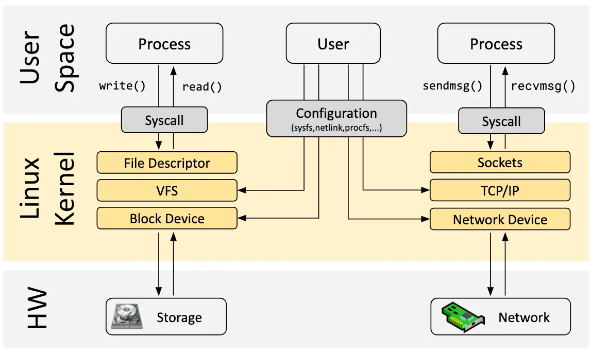

eBPF 入门开发实践教程一：介绍 eBPF 的基本概念、常见的开发工具
1. eBPF简介：安全和有效地扩展内核
eBPF 是一项革命性的技术，起源于 Linux 内核，可以在操作系统的内核中运行沙盒程序。它被用来安全和有效地扩展内核的功能，而不需要改变内核的源代码或加载内核模块。eBPF 通过允许在操作系统内运行沙盒程序，应用程序开发人员可以在运行时，可编程地向操作系统动态添加额外的功能。然后，操作系统保证安全和执行效率，就像在即时编译（JIT）编译器和验证引擎的帮助下进行本地编译一样。eBPF 程序在内核版本之间是可移植的，并且可以自动更新，从而避免了工作负载中断和节点重启。
今天，eBPF被广泛用于各类场景：在现代数据中心和云原生环境中，可以提供高性能的网络包处理和负载均衡；以非常低的资源开销，做到对多种细粒度指标的可观测性，帮助应用程序开发人员跟踪应用程序，为性能故障排除提供洞察力；保障应用程序和容器运行时的安全执行，等等。可能性是无穷的，而 eBPF 在操作系统内核中所释放的创新才刚刚开始[3]。
eBPF 的未来：内核的 JavaScript 可编程接口
对于浏览器而言，JavaScript 的引入带来的可编程性开启了一场巨大的革命，使浏览器发展成为几乎独立的操作系统。现在让我们回到 eBPF：为了理解 eBPF 对 Linux 内核的可编程性影响，对 Linux 内核的结构以及它如何与应用程序和硬件进行交互有一个高层次的理解是有帮助的[4]。

Linux 内核的主要目的是抽象出硬件或虚拟硬件，并提供一个一致的API（系统调用），允许应用程序运行和共享资源。为了实现这个目的，我们维护了一系列子系统和层，以分配这些责任[5]。每个子系统通常允许某种程度的配置，以考虑到用户的不同需求。如果不能配置所需的行为，就需要改变内核，从历史上看，改变内核的行为，或者让用户编写的程序能够在内核中运行，就有两种选择:
| 本地支持内核模块 | 写一个内核模块 |
|---|---|
| 改变内核源代码，并说服Linux内核社区相信这种改变是必要的。等待几年，让新的内核版本成为一种商品。 | 定期修复它，因为每个内核版本都可能破坏它。由于缺乏安全边界，冒着破坏你的Linux内核的风险 |
实际上，两种方案都不常用，前者成本太高，后者则几乎没有可移植性。
有了 eBPF，就有了一个新的选择，可以重新编程 Linux 内核的行为，而不需要改变内核的源代码或加载内核模块，同时保证在不同内核版本之间一定程度上的行为一致性和兼容性、以及安全性[6]。为了实现这个目的，eBPF 程序也需要有一套对应的 API，允许用户定义的应用程序运行和共享资源 --- 换句话说，某种意义上讲 eBPF 虚拟机也提供了一套类似于系统调用的机制，借助 eBPF 和用户态通信的机制，Wasm 虚拟机和用户态应用也可以获得这套“系统调用”的完整使用权，一方面能可编程地扩展传统的系统调用的能力，另一方面能在网络、文件系统等许多层次实现更高效的可编程 IO 处理。

正如上图所示，当今的 Linux 内核正在向一个新的内核模型演化：用户定义的应用程序可以在内核态和用户态同时执行，用户态通过传统的系统调用访问系统资源，内核态则通过 BPF Helper Calls 和系统的各个部分完成交互。截止 2023 年初，内核中的 eBPF 虚拟机中已经有 220 多个Helper 系统接口，涵盖了非常多的应用场景。
值得注意的是，BPF Helper Call 和系统调用二者并不是竞争关系，它们的编程模型和有性能优势的场景完全不同，也不会完全替代对方。对 Wasm 和 Wasi 相关生态来说，情况也类似，专门设计的 wasi 接口需要经历一个漫长的标准化过程，但可能在特定场景能为用户态应用获取更佳的性能和可移植性保证，而 eBPF 在保证沙箱本质和可移植性的前提下，可以提供一个快速灵活的扩展系统接口的方案。
目前的 eBPF 仍然处于早期阶段，但是借助当前 eBPF 提供的内核接口和用户态交互的能力，经由 Wasm-bpf 的系统接口转换，Wasm 虚拟机中的应用已经几乎有能力获取内核以及用户态任意一个函数调用的数据和返回值（kprobe，uprobe...）；以很低的代价收集和理解所有系统调用，并获取所有网络操作的数据包和套接字级别的数据（tracepoint，socket...）；在网络包处理解决方案中添加额外的协议分析器，并轻松地编程任何转发逻辑（XDP，TC...），以满足不断变化的需求，而无需离开Linux内核的数据包处理环境。
不仅如此，eBPF 还有能力往用户空间任意进程的任意地址写入数据（bpf_probe_write_user[7]），有限度地修改内核函数的返回值（bpf_override_return[8]），甚至在内核态直接执行某些系统调用[9]；所幸的是，eBPF 在加载进内核之前对字节码会进行严格的安全检查，确保没有内存越界等操作，同时，许多可能会扩大攻击面、带来安全风险的功能都是需要在编译内核时明确选择启用才能使用的；在 Wasm 虚拟机将字节码加载进内核之前，也可以明确选择启用或者禁用某些 eBPF 功能，以确保沙箱的安全性。
2. 关于如何学习 eBPF 相关的开发的一些建议
本文不会对 eBPF 的原理做更详细的介绍，不过这里有一个学习规划和参考资料，也许会有一些价值：
eBPF 入门（5-7h）
- Google 或者其他搜索引擎查找：eBPF
- 询问 ChatGPT 之类的东西：eBPF 是什么？
推荐：
- 阅读 ebpf 简介：https://ebpf.io/（30min）
- 简要了解一下 ebpf 内核相关文档：https://prototype-kernel.readthedocs.io/en/latest/bpf/ （知道有问题去哪里查询: 30min）
- 阅读 ebpf 中文入门指南：https://www.modb.pro/db/391570（1h）
- 有大量的参考资料：https://github.com/zoidbergwill/awesome-ebpf（2-3h）
- 可以选自己感兴趣的 PPT 翻一翻：https://github.com/gojue/ebpf-slide（1-2h）
回答三个问题：
- 了解 eBPF 是什么东西？为啥要有这个玩意，不能用内核模块？
- 它有什么功能？能在 Linux 内核里面完成哪些事情？有哪些 eBPF 程序的类型和 helper（不需要知道全部，但是需要知道去哪里找）？
- 能拿来做什么？比如说在哪些场景中进行运用？网络、安全、可观测性？
了解如何开发 eBPF 程序（10-15h）
了解并尝试一下 eBPF 开发框架：
- BCC 开发各类小工具的例子：https://github.com/iovisor/bcc/blob/master/docs/tutorial_bcc_python_developer.md（跑一遍：3-4h）
- libbpf 的一些例子: https://github.com/libbpf/libbpf-bootstrap（选感兴趣的运行一下，并阅读一下源代码：2h）
- 基于 libbpf 和 eunomia-bpf 的教程： https://github.com/eunomia-bpf/bpf-developer-tutorial（阅读 1-10 的部分: 3-4h）
其他开发框架：Go 语言或者 Rust 语言，请自行搜索并且尝试（0-2h）
有任何问题或者想了解的东西，不管是不是和本项目相关，都可以在本项目的 discussions 里面开始讨论。
回答一些问题，并且进行一些尝试（2-5h）：
- 如何开发一个最简单的 eBPF 程序？
- 如何用 eBPF 追踪一个内核功能或函数？有很多种方法，举出对应的代码；
- 有哪些方案能通过用户态和内核态通信？如何从用户态向内核态传送信息？如何从内核态向用户态传递信息？举出代码示例；
- 编写一个你自己的 eBPF 程序，实现一个功能；
- eBPF 程序的整个生命周期里面，分别在用户态和内核态做了哪些事情？
3. 如何使用eBPF编程
原始的eBPF程序编写是非常繁琐和困难的。为了改变这一现状，llvm于2015年推出了可以将由高级语言编写的代码编译为eBPF字节码的功能，同时，eBPF 社区将 bpf() 等原始的系统调用进行了初步地封装，给出了libbpf库。这些库会包含将字节码加载到内核中的函数以及一些其他的关键函数。在Linux的源码包的samples/bpf/目录下，有大量Linux提供的基于libbpf的eBPF样例代码。
一个典型的基于 libbpf 的eBPF程序具有*_kern.c和*_user.c两个文件，*_kern.c中书写在内核中的挂载点以及处理函数，*_user.c中书写用户态代码，完成内核态代码注入以及与用户交互的各种任务。 更为详细的教程可以参考该视频然而由于该方法仍然较难理解且入门存在一定的难度，因此现阶段的eBPF程序开发大多基于一些工具，比如：
- BCC
- BPFtrace
- libbpf-bootstrap
- Go eBPF library
以及还有比较新的工具，例如 eunomia-bpf.
编写 eBPF 程序
eBPF 程序由内核态部分和用户态部分构成。内核态部分包含程序的实际逻辑，用户态部分负责加载和管理内核态部分。使用 eunomia-bpf 开发工具，只需编写内核态部分的代码。
内核态部分的代码需要符合 eBPF 的语法和指令集。eBPF 程序主要由若干个函数组成，每个函数都有其特定的作用。可以使用的函数类型包括：
- kprobe：插探函数，在指定的内核函数前或后执行。
- tracepoint：跟踪点函数，在指定的内核跟踪点处执行。
- raw_tracepoint：原始跟踪点函数，在指定的内核原始跟踪点处执行。
- xdp：网络数据处理函数，拦截和处理网络数据包。
- perf_event：性能事件函数，用于处理内核性能事件。
- kretprobe：函数返回插探函数，在指定的内核函数返回时执行。
- tracepoint_return：跟踪点函数返回，在指定的内核跟踪点返回时执行。
- raw_tracepoint_return：原始跟踪点函数返回，在指定的内核原始跟踪
BCC
BCC全称为BPF Compiler Collection，该项目是一个python库， 包含了完整的编写、编译、和加载BPF程序的工具链，以及用于调试和诊断性能问题的工具。
自2015年发布以来，BCC经过上百位贡献者地不断完善后，目前已经包含了大量随时可用的跟踪工具。其官方项目库 提供了一个方便上手的教程，用户可以快速地根据教程完成BCC入门工作。
用户可以在BCC上使用Python、Lua等高级语言进行编程。 相较于使用C语言直接编程，这些高级语言具有极大的便捷性，用户只需要使用C来设计内核中的 BPF程序，其余包括编译、解析、加载等工作在内，均可由BCC完成。
然而使用BCC存在一个缺点便是在于其兼容性并不好。基于BCC的 eBPF程序每次执行时候都需要进行编译，编译则需要用户配置相关的头文件和对应实现。在实际应用中， 相信大家也会有体会，编译依赖问题是一个很棘手的问题。也正是因此，在本项目的开发中我们放弃了BCC， 选择了可以做到一次编译-多次运行的libbpf-bootstrap工具。
eBPF Go library
eBPF Go库提供了一个通用的eBPF库，它解耦了获取 eBPF 字节码的过程和 eBPF 程序的加载和管理，并实现了类似 libbpf 一样的 CO- 功能。eBPF程序通常是通过编写高级语言创建的，然后使用clang/LLVM编译器编译为eBPF字节码。
libbpf
libbpf-bootstrap是一个基于libbpf库的BPF开发脚手架，从其
github 上可以得到其源码。
libbpf-bootstrap综合了BPF社区过去多年的实践，为开发者提了一个现代化的、便捷的工作流，实
现了一次编译，重复使用的目的。
基于libbpf-bootstrap的BPF程序对于源文件有一定的命名规则，
用于生成内核态字节码的bpf文件以.bpf.c结尾，用户态加载字节码的文件以.c结尾，且这两个文件的
前缀必须相同。
基于libbpf-bootstrap的BPF程序在编译时会先将*.bpf.c文件编译为
对应的.o文件，然后根据此文件生成skeleton文件，即*.skel.h，这个文件会包含内核态中定义的一些
数据结构，以及用于装载内核态代码的关键函数。在用户态代码include此文件之后调用对应的装载函数即可将
字节码装载到内核中。同样的，libbpf-bootstrap也有非常完备的入门教程，用户可以在该处
得到详细的入门操作介绍。
eunomia-bpf
开发、构建和分发 eBPF 一直以来都是一个高门槛的工作，使用 BCC、bpftrace 等工具开发效率高、可移植性好，但是分发部署时需要安装 LLVM、Clang等编译环境，每次运行的时候执行本地或远程编译过程，资源消耗较大；使用原生的 CO-RE libbpf时又需要编写不少用户态加载代码来帮助 eBPF 程序正确加载和从内核中获取上报的信息，同时对于 eBPF 程序的分发、管理也没有很好地解决方案。
eunomia-bpf 是一个开源的 eBPF 动态加载运行时和开发工具链，是为了简化 eBPF 程序的开发、构建、分发、运行而设计的，基于 libbpf 的 CO-RE 轻量级开发框架。
使用 eunomia-bpf ，可以：
- 在编写 eBPF 程序或工具时只编写内核态代码，自动获取内核态导出信息，并作为模块动态加载；
- 使用 WASM 进行用户态交互程序的开发，在 WASM 虚拟机内部控制整个 eBPF 程序的加载和执行，以及处理相关数据；
- eunomia-bpf 可以将预编译的 eBPF 程序打包为通用的 JSON 或 WASM 模块，跨架构和内核版本进行分发，无需重新编译即可动态加载运行。
eunomia-bpf 由一个编译工具链和一个运行时库组成, 对比传统的 BCC、原生 libbpf 等框架，大幅简化了 eBPF 程序的开发流程，在大多数时候只需编写内核态代码，即可轻松构建、打包、发布完整的 eBPF 应用，同时内核态 eBPF 代码保证和主流的 libbpf, libbpfgo, libbpf-rs 等开发框架的 100% 兼容性。需要编写用户态代码的时候，也可以借助 Webassembly 实现通过多种语言进行用户态开发。和 bpftrace 等脚本工具相比, eunomia-bpf 保留了类似的便捷性, 同时不仅局限于 trace 方面, 可以用于更多的场景, 如网络、安全等等。
- eunomia-bpf 项目 Github 地址: https://github.com/eunomia-bpf/eunomia-bpf
- gitee 镜像: https://gitee.com/anolis/eunomia
参考资料
- eBPF 介绍：https://ebpf.io/
- BPF Compiler Collection (BCC)：https://github.com/iovisor/bcc
- eunomia-bpf：https://github.com/eunomia-bpf/eunomia-bpf
完整的教程和源代码已经全部开源，可以在 https://github.com/eunomia-bpf/bpf-developer-tutorial 中查看。
eBPF 入门开发实践教程二：Hello World，基本框架和开发流程
eBPF (Extended Berkeley Packet Filter) 是 Linux 内核上的一个强大的网络和性能分析工具。它允许开发者在内核运行时动态加载、更新和运行用户定义的代码。
本文是 eBPF 入门开发实践教程的第二篇，主要介绍 eBPF 的基本框架和开发流程。
开发 eBPF 程序可以使用多种工具，如 BCC、eunomia-bpf 等。不同的工具有不同的特点，但基本流程大致相同。
开发 eBPF 程序的流程
下面以 BCC 工具为例，介绍 eBPF 程序的基本开发流程。
- 安装编译环境和依赖。使用 BCC 开发 eBPF 程序需要安装 LLVM/Clang 和 bcc，以及其它的依赖库。
- 编写 eBPF 程序。eBPF 程序主要由两部分构成：内核态部分和用户态部分。内核态部分包含 eBPF 程序的实际逻辑，用户态部分负责加载、运行和监控内核态程序。
- 编译和加载 eBPF 程序。使用 bcc 工具将 eBPF 程序编译成机器码，然后使用用户态代码加载并运行该程序。
- 运行程序并处理数据。eBPF 程序在内核运行时会触发事件，并将事件相关的信息传递给用户态程序。用户态程序负责处理这些信息并将结果输出。
- 结束程序。当 eBPF 程序运行完成后，用户态程序可以卸载并结束运行。
通过这个过程，你可以开发出一个能够在内核中运行的 eBPF 程序。
使用 eunomia-bpf 开发 eBPF 程序
eunomia-bpf 是一个开源的 eBPF 动态加载运行时和开发工具链，它的目的是简化 eBPF 程序的开发、构建、分发、运行。它基于 libbpf 的 CO-RE 轻量级开发框架，支持通过用户态 WASM 虚拟机控制 eBPF 程序的加载和执行，并将预编译的 eBPF 程序打包为通用的 JSON 或 WASM 模块进行分发。使用 eunomia-bpf 可以大幅简化 eBPF 程序的开发流程。
使用 eunomia-bpf 开发 eBPF 程序的流程也大致相同，只是细节略有不同。
- 安装编译环境和依赖。使用 eunomia-bpf 开发 eBPF 程序需要安装 eunomia-bpf 工具链和运行时库，以及其它的依赖库。
- 编写 eBPF 程序。eBPF 程序主要由两部分构成：内核态部分和用户态部分。内核态部分包含 eBPF 程序的实际逻辑，用户态部分负责加载、运行和监控内核态程序。使用 eunomia-bpf，只需编写内核态代码即可，无需编写用户态代码。
- 编译和加载 eBPF 程序。使用 eunomia-bpf 工具链将 eBPF 程序编译成机器码，并将编译后的代码打包为可以在任何系统上运行的模块。然后使用 eunomia-bpf 运行时库加载并运行该模块。
- 运行程序并处理数据。eBPF 程序在内核运行时会触发事件，并将事件相关的信息传递给用户态程序。eunomia-bpf 的运行时库负责处理这些信息并将结果输出。
- 结束程序。当 eBPF 程序运行完成后，eunomia-bpf 的运行时库可以卸载并结束运行
下载安装 eunomia-bpf 开发工具
可以通过以下步骤下载和安装 eunomia-bpf：
下载 ecli 工具，用于运行 eBPF 程序：
$ wget https://aka.pw/bpf-ecli -O ecli && chmod +x ./ecli
$ ./ecli -h
Usage: ecli [--help] [--version] [--json] [--no-cache] url-and-args
下载编译器工具链，用于将 eBPF 内核代码编译为 config 文件或 WASM 模块：
$ wget https://github.com/eunomia-bpf/eunomia-bpf/releases/latest/download/ecc && chmod +x ./ecc
$ ./ecc -h
eunomia-bpf compiler
Usage: ecc [OPTIONS] <SOURCE_PATH> [EXPORT_EVENT_HEADER]
....
也可以使用 docker 镜像进行编译：
$ docker run -it -v `pwd`/:/src/ yunwei37/ebpm:latest # 使用 docker 进行编译。`pwd` 应该包含 *.bpf.c 文件和 *.h 文件。
export PATH=PATH:~/.eunomia/bin
Compiling bpf object...
Packing ebpf object and config into /src/package.json...
Hello World - minimal eBPF program
/* SPDX-License-Identifier: (LGPL-2.1 OR BSD-2-Clause) */
#define BPF_NO_GLOBAL_DATA
#include <linux/bpf.h>
#include <bpf/bpf_helpers.h>
#include <bpf/bpf_tracing.h>
typedef unsigned int u32;
typedef int pid_t;
const pid_t pid_filter = 0;
char LICENSE[] SEC("license") = "Dual BSD/GPL";
SEC("tp/syscalls/sys_enter_write")
int handle_tp(void *ctx)
{
pid_t pid = bpf_get_current_pid_tgid() >> 32;
if (pid_filter && pid != pid_filter)
return 0;
bpf_printk("BPF triggered from PID %d.\n", pid);
return 0;
}
这段程序通过定义一个 handle_tp 函数并使用 SEC 宏把它附加到 sys_enter_write tracepoint（即在进入 write 系统调用时执行）。该函数通过使用 bpf_get_current_pid_tgid 和 bpf_printk 函数获取调用 write 系统调用的进程 ID，并在内核日志中打印出来。
bpf_trace_printk()： 一种将信息输出到trace_pipe(/sys/kernel/debug/tracing/trace_pipe)简单机制。 在一些简单用例中这样使用没有问题， but它也有一些限制：最多3 参数； 第一个参数必须是%s(即字符串)；同时trace_pipe在内核中全局共享，其他并行使用trace_pipe的程序有可能会将 trace_pipe 的输出扰乱。 一个更好的方式是通过 BPF_PERF_OUTPUT(), 稍后将会讲到。void *ctx：ctx本来是具体类型的参数， 但是由于我们这里没有使用这个参数，因此就将其写成void *类型。return 0;：必须这样，返回0 (如果要知道why, 参考 #139 https://github.com/iovisor/bcc/issues/139)。
要编译和运行这段程序，可以使用 ecc 工具和 ecli 命令。首先使用 ecc 编译程序：
$ ecc hello.bpf.c
Compiling bpf object...
Packing ebpf object and config into package.json...
或使用 docker 镜像进行编译：
docker run -it -v `pwd`/:/src/ yunwei37/ebpm:latest
然后使用 ecli 运行编译后的程序：
$ sudo ecli ./package.json
Runing eBPF program...
运行这段程序后，可以通过查看 /sys/kernel/debug/tracing/trace_pipe 文件来查看 eBPF 程序的输出：
$ sudo cat /sys/kernel/debug/tracing/trace_pipe
<...>-3840345 [010] d... 3220701.101143: bpf_trace_printk: write system call from PID 3840345.
<...>-3840345 [010] d... 3220701.101143: bpf_trace_printk: write system call from PID 3840345.
eBPF 程序的基本框架
如上所述， eBPF 程序的基本框架包括：
- 包含头文件：需要包含 <linux/bpf.h> 和 <bpf/bpf_helpers.h> 等头文件。
- 定义许可证：需要定义许可证，通常使用 "Dual BSD/GPL"。
- 定义 BPF 函数：需要定义一个 BPF 函数，例如其名称为 handle_tp，其参数为 void *ctx，返回值为 int。通常用 C 语言编写。
- 使用 BPF 助手函数：在例如 BPF 函数中，可以使用 BPF 助手函数 bpf_get_current_pid_tgid() 和 bpf_printk()。
- 返回值
tracepoints
跟踪点（tracepoints）是内核静态插桩技术，跟踪点在技术上只是放置在内核源代码中的跟踪函数，实际上就是在源码中插入的一些带有控制条件的探测点，这些探测点允许事后再添加处理函数。比如在内核中，最常见的静态跟踪方法就是 printk，即输出日志。又比如：在系统调用、调度程序事件、文件系统操作和磁盘 I/O 的开始和结束时都有跟踪点。 于 2009 年在 Linux 2.6.32 版本中首次提供。跟踪点是一种稳定的 API，数量有限。
总结
eBPF 程序的开发和使用流程可以概括为如下几个步骤：
- 定义 eBPF 程序的接口和类型：这包括定义 eBPF 程序的接口函数，定义和实现 eBPF 内核映射（maps）和共享内存（perf events），以及定义和使用 eBPF 内核帮助函数（helpers）。
- 编写 eBPF 程序的代码：这包括编写 eBPF 程序的主要逻辑，实现 eBPF 内核映射的读写操作，以及使用 eBPF 内核帮助函数。
- 编译 eBPF 程序：这包括使用 eBPF 编译器（例如 clang）将 eBPF 程序代码编译为 eBPF 字节码，并生成可执行的 eBPF 内核模块。ecc 本质上也是调用 clang 编译器来编译 eBPF 程序。
- 加载 eBPF 程序到内核：这包括将编译好的 eBPF 内核模块加载到 Linux 内核中，并将 eBPF 程序附加到指定的内核事件上。
- 使用 eBPF 程序：这包括监测 eBPF 程序的运行情况，并使用 eBPF 内核映射和共享内存进行数据交换和共享。
- 在实际开发中，还可能需要进行其他的步骤，例如配置编译和加载参数，管理 eBPF 内核模块和内核映射，以及使用其他高级功能等。
需要注意的是，BPF 程序的执行是在内核空间进行的，因此需要使用特殊的工具和技术来编写、编译和调试 BPF 程序。eunomia-bpf 是一个开源的 BPF 编译器和工具包，它可以帮助开发者快速和简单地编写和运行 BPF 程序。
完整的教程和源代码已经全部开源，可以在 https://github.com/eunomia-bpf/bpf-developer-tutorial 中查看。
eBPF 入门开发实践教程二：在 eBPF 中使用 kprobe 监测捕获 unlink 系统调用
eBPF (Extended Berkeley Packet Filter) 是 Linux 内核上的一个强大的网络和性能分析工具。它允许开发者在内核运行时动态加载、更新和运行用户定义的代码。
本文是 eBPF 入门开发实践教程的第二篇，在 eBPF 中使用 kprobe 捕获 unlink 系统调用。
kprobes技术背景
开发人员在内核或者模块的调试过程中，往往会需要要知道其中的一些函数有无被调用、何时被调用、执行是否正确以及函数的入参和返回值是什么等等。比较简单的做法是在内核代码对应的函数中添加日志打印信息，但这种方式往往需要重新编译内核或模块，重新启动设备之类的，操作较为复杂甚至可能会破坏原有的代码执行过程。
而利用kprobes技术，用户可以定义自己的回调函数，然后在内核或者模块中几乎所有的函数中（有些函数是不可探测的，例如kprobes自身的相关实现函数，后文会有详细说明）动态的插入探测点，当内核执行流程执行到指定的探测函数时，会调用该回调函数，用户即可收集所需的信息了，同时内核最后还会回到原本的正常执行流程。如果用户已经收集足够的信息，不再需要继续探测，则同样可以动态地移除探测点。因此kprobes技术具有对内核执行流程影响小和操作方便的优点。
kprobes技术包括的3种探测手段分别时kprobe、jprobe和kretprobe。首先kprobe是最基本的探测方式，是实现后两种的基础，它可以在任意的位置放置探测点（就连函数内部的某条指令处也可以），它提供了探测点的调用前、调用后和内存访问出错3种回调方式，分别是pre_handler、post_handler和fault_handler，其中pre_handler函数将在被探测指令被执行前回调，post_handler会在被探测指令执行完毕后回调（注意不是被探测函数），fault_handler会在内存访问出错时被调用；jprobe基于kprobe实现，它用于获取被探测函数的入参值；最后kretprobe从名字中就可以看出其用途了，它同样基于kprobe实现，用于获取被探测函数的返回值。
kprobes的技术原理并不仅仅包含存软件的实现方案，它也需要硬件架构提供支持。其中涉及硬件架构相关的是CPU的异常处理和单步调试技术，前者用于让程序的执行流程陷入到用户注册的回调函数中去，而后者则用于单步执行被探测点指令，因此并不是所有的架构均支持，目前kprobes技术已经支持多种架构，包括i386、x86_64、ppc64、ia64、sparc64、arm、ppc和mips（有些架构实现可能并不完全，具体可参考内核的Documentation/kprobes.txt）。
kprobes的特点与使用限制：
- kprobes允许在同一个被被探测位置注册多个kprobe，但是目前jprobe却不可以；同时也不允许以其他的jprobe回调函数和kprobe的post_handler回调函数作为被探测点。
- 一般情况下，可以探测内核中的任何函数，包括中断处理函数。不过在kernel/kprobes.c和arch/*/kernel/kprobes.c程序中用于实现kprobes自身的函数是不允许被探测的，另外还有do_page_fault和notifier_call_chain；
- 如果以一个内联函数为探测点，则kprobes可能无法保证对该函数的所有实例都注册探测点。由于gcc可能会自动将某些函数优化为内联函数，因此可能无法达到用户预期的探测效果；
- 一个探测点的回调函数可能会修改被探测函数运行的上下文，例如通过修改内核的数据结构或者保存与struct pt_regs结构体中的触发探测器之前寄存器信息。因此kprobes可以被用来安装bug修复代码或者注入故障测试代码；
- kprobes会避免在处理探测点函数时再次调用另一个探测点的回调函数，例如在printk()函数上注册了探测点，则在它的回调函数中可能再次调用printk函数，此时将不再触发printk探测点的回调，仅仅时增加了kprobe结构体中nmissed字段的数值；
- 在kprobes的注册和注销过程中不会使用mutex锁和动态的申请内存；
- kprobes回调函数的运行期间是关闭内核抢占的，同时也可能在关闭中断的情况下执行，具体要视CPU架构而定。因此不论在何种情况下，在回调函数中不要调用会放弃CPU的函数（如信号量、mutex锁等）；
- kretprobe通过替换返回地址为预定义的trampoline的地址来实现，因此栈回溯和gcc内嵌函数__builtin_return_address()调用将返回trampoline的地址而不是真正的被探测函数的返回地址；
- 如果一个函数的调用次数和返回次数不相等，则在类似这样的函数上注册kretprobe将可能不会达到预期的效果，例如do_exit()函数会存在问题，而do_execve()函数和do_fork()函数不会；
- 如果当在进入和退出一个函数时，CPU运行在非当前任务所有的栈上，那么往该函数上注册kretprobe可能会导致不可预料的后果，因此，kprobes不支持在X86_64的结构下为__switch_to()函数注册kretprobe，将直接返回-EINVAL。
kprobe
#include "vmlinux.h"
#include <bpf/bpf_helpers.h>
#include <bpf/bpf_tracing.h>
#include <bpf/bpf_core_read.h>
char LICENSE[] SEC("license") = "Dual BSD/GPL";
SEC("kprobe/do_unlinkat")
int BPF_KPROBE(do_unlinkat, int dfd, struct filename *name)
{
pid_t pid;
const char *filename;
pid = bpf_get_current_pid_tgid() >> 32;
filename = BPF_CORE_READ(name, name);
bpf_printk("KPROBE ENTRY pid = %d, filename = %s\n", pid, filename);
return 0;
}
SEC("kretprobe/do_unlinkat")
int BPF_KRETPROBE(do_unlinkat_exit, long ret)
{
pid_t pid;
pid = bpf_get_current_pid_tgid() >> 32;
bpf_printk("KPROBE EXIT: pid = %d, ret = %ld\n", pid, ret);
return 0;
}
kprobe 是 eBPF 用于处理内核空间入口和出口（返回）探针（kprobe 和 kretprobe）的一个例子。它将 kprobe 和 kretprobe BPF 程序附加到 do_unlinkat() 函数上，并使用 bpf_printk() 宏分别记录 PID、文件名和返回值。
eunomia-bpf 是一个结合 Wasm 的开源 eBPF 动态加载运行时和开发工具链，它的目的是简化 eBPF 程序的开发、构建、分发、运行。可以参考 https://github.com/eunomia-bpf/eunomia-bpf 下载和安装 ecc 编译工具链和 ecli 运行时。
要编译这个程序，请使用 ecc 工具：
$ ecc kprobe-link.bpf.c
Compiling bpf object...
Packing ebpf object and config into package.json...
然后运行：
sudo ecli package.json
在另外一个窗口中：
touch test1
rm test1
touch test2
rm test2
在 /sys/kernel/debug/tracing/trace_pipe 文件中，应该能看到类似下面的 kprobe 演示输出：
$ sudo cat /sys/kernel/debug/tracing/trace_pipe
rm-9346 [005] d..3 4710.951696: bpf_trace_printk: KPROBE ENTRY pid = 9346, filename = test1
rm-9346 [005] d..4 4710.951819: bpf_trace_printk: KPROBE EXIT: ret = 0
rm-9346 [005] d..3 4710.951852: bpf_trace_printk: KPROBE ENTRY pid = 9346, filename = test2
rm-9346 [005] d..4 4710.951895: bpf_trace_printk: KPROBE EXIT: ret = 0
总结
通过本文的示例，我们学习了如何使用 eBPF 的 kprobe 和 kretprobe 捕获 unlink 系统调用。更多的例子和详细的开发指南，请参考 eunomia-bpf 的官方文档：https://github.com/eunomia-bpf/eunomia-bpf
本文是 eBPF 入门开发实践教程的第二篇。下一篇文章将介绍如何在 eBPF 中使用 fentry 监测捕获 unlink 系统调用。
完整的教程和源代码已经全部开源，可以在 https://github.com/eunomia-bpf/bpf-developer-tutorial 中查看。
eBPF 入门开发实践教程三：在 eBPF 中使用 fentry 监测捕获 unlink 系统调用
eBPF (Extended Berkeley Packet Filter) 是 Linux 内核上的一个强大的网络和性能分析工具。它允许开发者在内核运行时动态加载、更新和运行用户定义的代码。
本文是 eBPF 入门开发实践教程的第三篇，在 eBPF 中使用 fentry 捕获 unlink 系统调用。
Fentry
#include "vmlinux.h"
#include <bpf/bpf_helpers.h>
#include <bpf/bpf_tracing.h>
char LICENSE[] SEC("license") = "Dual BSD/GPL";
SEC("fentry/do_unlinkat")
int BPF_PROG(do_unlinkat, int dfd, struct filename *name)
{
pid_t pid;
pid = bpf_get_current_pid_tgid() >> 32;
bpf_printk("fentry: pid = %d, filename = %s\n", pid, name->name);
return 0;
}
SEC("fexit/do_unlinkat")
int BPF_PROG(do_unlinkat_exit, int dfd, struct filename *name, long ret)
{
pid_t pid;
pid = bpf_get_current_pid_tgid() >> 32;
bpf_printk("fexit: pid = %d, filename = %s, ret = %ld\n", pid, name->name, ret);
return 0;
}
这段程序通过定义两个函数，分别附加到 do_unlinkat 和 do_unlinkat_exit 上。这两个函数分别在进入 do_unlinkat 和离开 do_unlinkat 时执行。这两个函数通过使用 bpf_get_current_pid_tgid 和 bpf_printk 函数来获取调用 do_unlinkat 的进程 ID，文件名和返回值，并在内核日志中打印出来。
与 kprobes 相比，fentry 和 fexit 程序有更高的性能和可用性。在这个例子中，我们可以直接访问函数的指针参数，就像在普通的 C 代码中一样，而不需要使用各种读取帮助程序。fexit 和 kretprobe 程序最大的区别在于，fexit 程序可以访问函数的输入参数和返回值，而 kretprobe 只能访问返回值。
从 5.5 内核开始，fentry 和 fexit 程序可用。
eunomia-bpf 是一个结合 Wasm 的开源 eBPF 动态加载运行时和开发工具链，它的目的是简化 eBPF 程序的开发、构建、分发、运行。可以参考 https://github.com/eunomia-bpf/eunomia-bpf 下载和安装 ecc 编译工具链和 ecli 运行时。我们使用 eunomia-bpf 编译运行这个例子。
编译运行上述代码：
$ ecc fentry-link.bpf.c
Compiling bpf object...
Packing ebpf object and config into package.json...
$ sudo ecli package.json
Runing eBPF program...
在另外一个窗口中：
touch test_file
rm test_file
touch test_file2
rm test_file2
运行这段程序后，可以通过查看 /sys/kernel/debug/tracing/trace_pipe 文件来查看 eBPF 程序的输出：
$ sudo cat /sys/kernel/debug/tracing/trace_pipe
rm-9290 [004] d..2 4637.798698: bpf_trace_printk: fentry: pid = 9290, filename = test_file
rm-9290 [004] d..2 4637.798843: bpf_trace_printk: fexit: pid = 9290, filename = test_file, ret = 0
rm-9290 [004] d..2 4637.798698: bpf_trace_printk: fentry: pid = 9290, filename = test_file2
rm-9290 [004] d..2 4637.798843: bpf_trace_printk: fexit: pid = 9290, filename = test_file2, ret = 0
总结
这段程序是一个 eBPF 程序，通过使用 fentry 和 fexit 捕获 do_unlinkat 和 do_unlinkat_exit 函数，并通过使用 bpf_get_current_pid_tgid 和 bpf_printk 函数获取调用 do_unlinkat 的进程 ID、文件名和返回值，并在内核日志中打印出来。
编译这个程序可以使用 ecc 工具，运行时可以使用 ecli 命令，并通过查看 /sys/kernel/debug/tracing/trace_pipe 文件查看 eBPF 程序的输出。更多的例子和详细的开发指南，请参考 eunomia-bpf 的官方文档：https://github.com/eunomia-bpf/eunomia-bpf
完整的教程和源代码已经全部开源，可以在 https://github.com/eunomia-bpf/bpf-developer-tutorial 中查看。
eBPF 入门开发实践教程四：在 eBPF 中捕获进程打开文件的系统调用集合，使用全局变量过滤进程 pid
eBPF (Extended Berkeley Packet Filter) 是 Linux 内核上的一个强大的网络和性能分析工具，它允许开发者在内核运行时动态加载、更新和运行用户定义的代码。
本文是 eBPF 入门开发实践教程的第四篇，主要介绍如何捕获进程打开文件的系统调用集合，并使用全局变量在 eBPF 中过滤进程 pid。
在 eBPF 中捕获进程打开文件的系统调用集合
首先，我们需要编写一段 eBPF 程序来捕获进程打开文件的系统调用，具体实现如下：
#include <vmlinux.h>
#include <bpf/bpf_helpers.h>
/// @description "Process ID to trace"
const volatile int pid_target = 0;
SEC("tracepoint/syscalls/sys_enter_openat")
int tracepoint__syscalls__sys_enter_openat(struct trace_event_raw_sys_enter* ctx)
{
u64 id = bpf_get_current_pid_tgid();
u32 pid = id;
if (pid_target && pid_target != pid)
return false;
// Use bpf_printk to print the process information
bpf_printk("Process ID: %d enter sys openat\n", pid);
return 0;
}
/// "Trace open family syscalls."
char LICENSE[] SEC("license") = "GPL";
上面的 eBPF 程序通过定义函数 tracepoint__syscalls__sys_enter_openat 并使用 SEC 宏把它们附加到 sys_enter_openat 的 tracepoint（即在进入 openat 系统调用时执行）。这个函数通过使用 bpf_get_current_pid_tgid 函数获取调用 openat 系统调用的进程 ID，并使用 bpf_printk 函数在内核日志中打印出来。
eunomia-bpf 是一个结合 Wasm 的开源 eBPF 动态加载运行时和开发工具链，它的目的是简化 eBPF 程序的开发、构建、分发、运行。可以参考 https://github.com/eunomia-bpf/eunomia-bpf 下载和安装 ecc 编译工具链和 ecli 运行时。我们使用 eunomia-bpf 编译运行这个例子。
编译运行上述代码：
$ ecc fentry-link.bpf.c
Compiling bpf object...
Packing ebpf object and config into package.json...
$ sudo ecli package.json
Runing eBPF program...
运行这段程序后，可以通过查看 /sys/kernel/debug/tracing/trace_pipe 文件来查看 eBPF 程序的输出：
$ sudo cat /sys/kernel/debug/tracing/trace_pipe
<...>-3840345 [010] d... 3220701.101179: bpf_trace_printk: Process ID: 3840345 enter sys openat
<...>-3840345 [010] d... 3220702.158000: bpf_trace_printk: Process ID: 3840345 enter sys openat
此时，我们已经能够捕获进程打开文件的系统调用了。
使用全局变量在 eBPF 中过滤进程 pid
在上面的程序中，我们定义了一个全局变量 pid_target 来指定要捕获的进程的 pid。在 tracepoint__syscalls__sys_enter_open 和 tracepoint__syscalls__sys_enter_openat 函数中，我们可以使用这个全局变量来过滤输出，只输出指定的进程的信息。
可以通过执行 ecli -h 命令来查看 opensnoop 的帮助信息：
$ ecli package.json -h
Usage: opensnoop_bpf [--help] [--version] [--verbose] [--pid_target VAR]
Trace open family syscalls.
Optional arguments:
-h, --help shows help message and exits
-v, --version prints version information and exits
--verbose prints libbpf debug information
--pid_target Process ID to trace
Built with eunomia-bpf framework.
See https://github.com/eunomia-bpf/eunomia-bpf for more information.
可以通过 --pid_target 参数来指定要捕获的进程的 pid，例如：
$ sudo ./ecli run package.json --pid_target 618
Runing eBPF program...
运行这段程序后，可以通过查看 /sys/kernel/debug/tracing/trace_pipe 文件来查看 eBPF 程序的输出：
$ sudo cat /sys/kernel/debug/tracing/trace_pipe
<...>-3840345 [010] d... 3220701.101179: bpf_trace_printk: Process ID: 618 enter sys openat
<...>-3840345 [010] d... 3220702.158000: bpf_trace_printk: Process ID: 618 enter sys openat
总结
本文介绍了如何使用 eBPF 程序来捕获进程打开文件的系统调用。在 eBPF 程序中，我们可以通过定义 tracepoint__syscalls__sys_enter_open 和 tracepoint__syscalls__sys_enter_openat 函数并使用 SEC 宏把它们附加到 sys_enter_open 和 sys_enter_openat 两个 tracepoint 来捕获进程打开文件的系统调用。我们可以使用 bpf_get_current_pid_tgid 函数获取调用 open 或 openat 系统调用的进程 ID，并使用 bpf_printk 函数在内核日志中打印出来。在 eBPF 程序中，我们还可以通过定义一个全局变量 pid_target 来指定要捕获的进程的 pid，从而过滤输出，只输出指定的进程的信息。
更多的例子和详细的开发指南，请参考 eunomia-bpf 的官方文档：https://github.com/eunomia-bpf/eunomia-bpf
完整的教程和源代码已经全部开源，可以在 https://github.com/eunomia-bpf/bpf-developer-tutorial 中查看。
eBPF 入门开发实践教程五：在 eBPF 中使用 uprobe 捕获 bash 的 readline 函数调用
eBPF (Extended Berkeley Packet Filter) 是 Linux 内核上的一个强大的网络和性能分析工具，它允许开发者在内核运行时动态加载、更新和运行用户定义的代码。
本文是 eBPF 入门开发实践教程的第五篇，主要介绍如何使用 uprobe 捕获 bash 的 readline 函数调用。
什么是uprobe
uprobe是一种用户空间探针，uprobe探针允许在用户空间程序中动态插桩，插桩位置包括：函数入口、特定偏移处，以及函数返回处。当我们定义uprobe时，内核会在附加的指令上创建快速断点指令（x86机器上为int3指令），当程序执行到该指令时，内核将触发事件，程序陷入到内核态，并以回调函数的方式调用探针函数，执行完探针函数再返回到用户态继续执行后序的指令。
uprobe基于文件，当一个二进制文件中的一个函数被跟踪时，所有使用到这个文件的进程都会被插桩，包括那些尚未启动的进程，这样就可以在全系统范围内跟踪系统调用。
uprobe适用于在用户态去解析一些内核态探针无法解析的流量，例如http2流量（报文header被编码，内核无法解码），https流量（加密流量，内核无法解密）。
使用 uprobe 捕获 bash 的 readline 函数调用
uprobe 是一种用于捕获用户空间函数调用的 eBPF 的探针，我们可以通过它来捕获用户空间程序调用的系统函数。
例如，我们可以使用 uprobe 来捕获 bash 的 readline 函数调用，从而获取用户在 bash 中输入的命令行。示例代码如下：
#include <vmlinux.h>
#include <bpf/bpf_helpers.h>
#include <bpf/bpf_tracing.h>
#define TASK_COMM_LEN 16
#define MAX_LINE_SIZE 80
/* Format of u[ret]probe section definition supporting auto-attach:
* u[ret]probe/binary:function[+offset]
*
* binary can be an absolute/relative path or a filename; the latter is resolved to a
* full binary path via bpf_program__attach_uprobe_opts.
*
* Specifying uprobe+ ensures we carry out strict matching; either "uprobe" must be
* specified (and auto-attach is not possible) or the above format is specified for
* auto-attach.
*/
SEC("uretprobe//bin/bash:readline")
int BPF_KRETPROBE(printret, const void *ret)
{
char str[MAX_LINE_SIZE];
char comm[TASK_COMM_LEN];
u32 pid;
if (!ret)
return 0;
bpf_get_current_comm(&comm, sizeof(comm));
pid = bpf_get_current_pid_tgid() >> 32;
bpf_probe_read_user_str(str, sizeof(str), ret);
bpf_printk("PID %d (%s) read: %s ", pid, comm, str);
return 0;
};
char LICENSE[] SEC("license") = "GPL";
这段代码的作用是在 bash 的 readline 函数返回时执行指定的 BPF_KRETPROBE 函数，即 printret 函数。
在 printret 函数中，我们首先获取了调用 readline 函数的进程的进程名称和进程 ID，然后通过 bpf_probe_read_user_str 函数读取了用户输入的命令行字符串，最后通过 bpf_printk 函数打印出进程 ID、进程名称和输入的命令行字符串。
除此之外，我们还需要通过 SEC 宏来定义 uprobe 探针，并使用 BPF_KRETPROBE 宏来定义探针函数。
在 SEC 宏中，我们需要指定 uprobe 的类型、要捕获的二进制文件的路径和要捕获的函数名称。例如，上面的代码中的 SEC 宏的定义如下：
SEC("uprobe//bin/bash:readline")
这表示我们要捕获的是 /bin/bash 二进制文件中的 readline 函数。
接下来，我们需要使用 BPF_KRETPROBE 宏来定义探针函数，例如：
BPF_KRETPROBE(printret, const void *ret)
这里的 printret 是探针函数的名称，const void *ret 是探针函数的参数，它代表被捕获的函数的返回值。
eunomia-bpf 是一个结合 Wasm 的开源 eBPF 动态加载运行时和开发工具链，它的目的是简化 eBPF 程序的开发、构建、分发、运行。可以参考 https://github.com/eunomia-bpf/eunomia-bpf 下载和安装 ecc 编译工具链和 ecli 运行时。我们使用 eunomia-bpf 编译运行这个例子。
编译运行上述代码：
$ ecc bashreadline.bpf.c bashreadline.h
Compiling bpf object...
Packing ebpf object and config into package.json...
$ sudo ecli package.json
Runing eBPF program...
运行这段程序后，可以通过查看 /sys/kernel/debug/tracing/trace_pipe 文件来查看 eBPF 程序的输出：
$ sudo cat /sys/kernel/debug/tracing/trace_pipe
bash-32969 [000] d..31 64001.375748: bpf_trace_printk: PID 32969 (bash) read: fff
bash-32969 [000] d..31 64002.056951: bpf_trace_printk: PID 32969 (bash) read: fff
可以看到，我们成功的捕获了 bash 的 readline 函数调用，并获取了用户在 bash 中输入的命令行。
总结
在上述代码中，我们使用了 SEC 宏来定义了一个 uprobe 探针，它指定了要捕获的用户空间程序 (bin/bash) 和要捕获的函数 (readline)。此外，我们还使用了 BPF_KRETPROBE 宏来定义了一个用于处理 readline 函数返回值的回调函数 (printret)。该函数可以获取到 readline 函数的返回值，并将其打印到内核日志中。通过这样的方式，我们就可以使用 eBPF 来捕获 bash 的 readline 函数调用，并获取用户在 bash 中输入的命令行。
更多的例子和详细的开发指南，请参考 eunomia-bpf 的官方文档：https://github.com/eunomia-bpf/eunomia-bpf
完整的教程和源代码已经全部开源，可以在 https://github.com/eunomia-bpf/bpf-developer-tutorial 中查看。
eBPF 入门开发实践教程六：捕获进程发送信号的系统调用集合，使用 hash map 保存状态
eBPF (Extended Berkeley Packet Filter) 是 Linux 内核上的一个强大的网络和性能分析工具，它允许开发者在内核运行时动态加载、更新和运行用户定义的代码。
本文是 eBPF 入门开发实践教程的第六篇，主要介绍如何实现一个 eBPF 工具，捕获进程发送信号的系统调用集合，使用 hash map 保存状态。
sigsnoop
示例代码如下：
#include <vmlinux.h>
#include <bpf/bpf_helpers.h>
#include <bpf/bpf_tracing.h>
#define MAX_ENTRIES 10240
#define TASK_COMM_LEN 16
struct event {
unsigned int pid;
unsigned int tpid;
int sig;
int ret;
char comm[TASK_COMM_LEN];
};
struct {
__uint(type, BPF_MAP_TYPE_HASH);
__uint(max_entries, MAX_ENTRIES);
__type(key, __u32);
__type(value, struct event);
} values SEC(".maps");
static int probe_entry(pid_t tpid, int sig)
{
struct event event = {};
__u64 pid_tgid;
__u32 tid;
pid_tgid = bpf_get_current_pid_tgid();
tid = (__u32)pid_tgid;
event.pid = pid_tgid >> 32;
event.tpid = tpid;
event.sig = sig;
bpf_get_current_comm(event.comm, sizeof(event.comm));
bpf_map_update_elem(&values, &tid, &event, BPF_ANY);
return 0;
}
static int probe_exit(void *ctx, int ret)
{
__u64 pid_tgid = bpf_get_current_pid_tgid();
__u32 tid = (__u32)pid_tgid;
struct event *eventp;
eventp = bpf_map_lookup_elem(&values, &tid);
if (!eventp)
return 0;
eventp->ret = ret;
bpf_printk("PID %d (%s) sent signal %d to PID %d, ret = %d",
eventp->pid, eventp->comm, eventp->sig, eventp->tpid, ret);
cleanup:
bpf_map_delete_elem(&values, &tid);
return 0;
}
SEC("tracepoint/syscalls/sys_enter_kill")
int kill_entry(struct trace_event_raw_sys_enter *ctx)
{
pid_t tpid = (pid_t)ctx->args[0];
int sig = (int)ctx->args[1];
return probe_entry(tpid, sig);
}
SEC("tracepoint/syscalls/sys_exit_kill")
int kill_exit(struct trace_event_raw_sys_exit *ctx)
{
return probe_exit(ctx, ctx->ret);
}
char LICENSE[] SEC("license") = "Dual BSD/GPL";
上面的代码定义了一个 eBPF 程序，用于捕获进程发送信号的系统调用，包括 kill、tkill 和 tgkill。它通过使用 tracepoint 来捕获系统调用的进入和退出事件，并在这些事件发生时执行指定的探针函数，例如 probe_entry 和 probe_exit。
在探针函数中，我们使用 bpf_map 存储捕获的事件信息，包括发送信号的进程 ID、接收信号的进程 ID、信号值和系统调用的返回值。在系统调用退出时，我们将获取存储在 bpf_map 中的事件信息，并使用 bpf_printk 打印进程 ID、进程名称、发送的信号和系统调用的返回值。
最后，我们还需要使用 SEC 宏来定义探针，并指定要捕获的系统调用的名称，以及要执行的探针函数。
eunomia-bpf 是一个结合 Wasm 的开源 eBPF 动态加载运行时和开发工具链，它的目的是简化 eBPF 程序的开发、构建、分发、运行。可以参考 https://github.com/eunomia-bpf/eunomia-bpf 下载和安装 ecc 编译工具链和 ecli 运行时。我们使用 eunomia-bpf 编译运行这个例子。
编译运行上述代码：
docker run -it -v `pwd`/:/src/ yunwei37/ebpm:latest
或者
$ ecc sigsnoop.bpf.c sigsnoop.h
Compiling bpf object...
Generating export types...
Packing ebpf object and config into package.json...
$ sudo ecli package.json
Runing eBPF program...
运行这段程序后，可以通过查看 /sys/kernel/debug/tracing/trace_pipe 文件来查看 eBPF 程序的输出：
$ sudo cat /sys/kernel/debug/tracing/trace_pipe
node-3517 [003] d..31 82575.798191: bpf_trace_printk: PID 3517 (node) sent signal 0 to PID 3427, ret = 0
node-15194 [003] d..31 82575.849227: bpf_trace_printk: PID 15194 (node) sent signal 0 to PID 3427, ret = 0
node-30016 [003] d..31 82576.001361: bpf_trace_printk: PID 30016 (node) sent signal 0 to PID 3427, ret = 0
cpptools-srv-38617 [002] d..31 82576.461085: bpf_trace_printk: PID 38617 (cpptools-srv) sent signal 0 to PID 30496, ret = 0
node-30040 [002] d..31 82576.467720: bpf_trace_printk: PID 30016 (node) sent signal 0 to PID 3427, ret = 0
总结
本文主要介绍如何实现一个 eBPF 工具，捕获进程发送信号的系统调用集合，使用 hash map 保存状态。使用 hash map 需要定义一个结构体：
struct {
__uint(type, BPF_MAP_TYPE_HASH);
__uint(max_entries, MAX_ENTRIES);
__type(key, __u32);
__type(value, struct event);
} values SEC(".maps");
并使用一些对应的 API 进行访问，例如 bpf_map_lookup_elem、bpf_map_update_elem、bpf_map_delete_elem 等。
更多的例子和详细的开发指南，请参考 eunomia-bpf 的官方文档：https://github.com/eunomia-bpf/eunomia-bpf
完整的教程和源代码已经全部开源，可以在 https://github.com/eunomia-bpf/bpf-developer-tutorial 中查看。
eBPF 入门实践教程七：捕获进程执行/退出时间，通过 perf event array 向用户态打印输出
eBPF (Extended Berkeley Packet Filter) 是 Linux 内核上的一个强大的网络和性能分析工具，它允许开发者在内核运行时动态加载、更新和运行用户定义的代码。
本文是 eBPF 入门开发实践教程的第七篇，主要介绍如何捕获 Linux 内核中进程执行的事件，并且通过 perf event array 向用户态命令行打印输出，不需要再通过查看 /sys/kernel/debug/tracing/trace_pipe 文件来查看 eBPF 程序的输出。通过 perf event array 向用户态发送信息之后，可以进行复杂的数据处理和分析。
perf buffer
eBPF 提供了两个环形缓冲区，可以用来将信息从 eBPF 程序传输到用户区控制器。第一个是perf环形缓冲区，，它至少从内核v4.15开始就存在了。第二个是后来引入的 BPF 环形缓冲区。本文只考虑perf环形缓冲区。
execsnoop
通过 perf event array 向用户态命令行打印输出，需要编写一个头文件，一个 C 源文件。示例代码如下：
头文件：execsnoop.h
#ifndef __EXECSNOOP_H
#define __EXECSNOOP_H
#define TASK_COMM_LEN 16
struct event {
int pid;
int ppid;
int uid;
int retval;
bool is_exit;
char comm[TASK_COMM_LEN];
};
#endif /* __EXECSNOOP_H */
源文件：execsnoop.bpf.c
// SPDX-License-Identifier: (LGPL-2.1 OR BSD-2-Clause)
#include <vmlinux.h>
#include <bpf/bpf_helpers.h>
#include <bpf/bpf_core_read.h>
#include "execsnoop.h"
struct {
__uint(type, BPF_MAP_TYPE_PERF_EVENT_ARRAY);
__uint(key_size, sizeof(u32));
__uint(value_size, sizeof(u32));
} events SEC(".maps");
SEC("tracepoint/syscalls/sys_enter_execve")
int tracepoint__syscalls__sys_enter_execve(struct trace_event_raw_sys_enter* ctx)
{
u64 id;
pid_t pid, tgid;
struct event event;
struct task_struct *task;
uid_t uid = (u32)bpf_get_current_uid_gid();
id = bpf_get_current_pid_tgid();
pid = (pid_t)id;
tgid = id >> 32;
event.pid = tgid;
event.uid = uid;
task = (struct task_struct*)bpf_get_current_task();
event.ppid = BPF_CORE_READ(task, real_parent, tgid);
bpf_get_current_comm(&event.comm, sizeof(event.comm));
bpf_perf_event_output(ctx, &events, BPF_F_CURRENT_CPU, &event, sizeof(event));
return 0;
}
char LICENSE[] SEC("license") = "GPL";
这段代码定义了个 eBPF 程序，用于捕获进程执行 execve 系统调用的入口。
在入口程序中，我们首先获取了当前进程的进程 ID 和用户 ID，然后通过 bpf_get_current_task 函数获取了当前进程的 task_struct 结构体，并通过 bpf_probe_read_str 函数读取了进程名称。最后，我们通过 bpf_perf_event_output 函数将进程执行事件输出到 perf buffer。
使用这段代码，我们就可以捕获 Linux 内核中进程执行的事件, 并分析进程的执行情况。
eunomia-bpf 是一个结合 Wasm 的开源 eBPF 动态加载运行时和开发工具链，它的目的是简化 eBPF 程序的开发、构建、分发、运行。可以参考 https://github.com/eunomia-bpf/eunomia-bpf 下载和安装 ecc 编译工具链和 ecli 运行时。我们使用 eunomia-bpf 编译运行这个例子。
使用容器编译：
docker run -it -v `pwd`/:/src/ yunwei37/ebpm:latest
或者使用 ecc 编译：
ecc execsnoop.bpf.c execsnoop.h
运行
$ sudo ./ecli run package.json
TIME PID PPID UID COMM
21:28:30 40747 3517 1000 node
21:28:30 40748 40747 1000 sh
21:28:30 40749 3517 1000 node
21:28:30 40750 40749 1000 sh
21:28:30 40751 3517 1000 node
21:28:30 40752 40751 1000 sh
21:28:30 40753 40752 1000 cpuUsage.sh
总结
本文介绍了如何捕获 Linux 内核中进程执行的事件，并且通过 perf event array 向用户态命令行打印输出，通过 perf event array 向用户态发送信息之后，可以进行复杂的数据处理和分析。在 libbpf 对应的内核态代码中，定义这样一个结构体和对应的头文件：
struct {
__uint(type, BPF_MAP_TYPE_PERF_EVENT_ARRAY);
__uint(key_size, sizeof(u32));
__uint(value_size, sizeof(u32));
} events SEC(".maps");
就可以往用户态直接发送信息。
更多的例子和详细的开发指南，请参考 eunomia-bpf 的官方文档：https://github.com/eunomia-bpf/eunomia-bpf
完整的教程和源代码已经全部开源，可以在 https://github.com/eunomia-bpf/bpf-developer-tutorial 中查看。
eBPF 入门开发实践教程八：在 eBPF 中使用 exitsnoop 监控进程退出事件，使用 ring buffer 向用户态打印输出
eBPF (Extended Berkeley Packet Filter) 是 Linux 内核上的一个强大的网络和性能分析工具。它允许开发者在内核运行时动态加载、更新和运行用户定义的代码。
本文是 eBPF 入门开发实践教程的第八篇，在 eBPF 中使用 exitsnoop 监控进程退出事件。
ring buffer
现在有一个新的 BPF 数据结构可用。BPF 环形缓冲区（ring buffer）。它解决了 BPF perf buffer（当今从内核向用户空间发送数据的事实上的标准）的内存效率和事件重排问题，同时达到或超过了它的性能。它既提供了与 perf buffer 兼容以方便迁移，又有新的保留/提交API，具有更好的可用性。另外，合成和真实世界的基准测试表明，在几乎所有的情况下，所以考虑将其作为从BPF程序向用户空间发送数据的默认选择。
BPF ringbuf vs BPF perfbuf
今天，只要BPF程序需要将收集到的数据发送到用户空间进行后处理和记录，它通常会使用BPF perf buffer（perfbuf）来实现。Perfbuf 是每个CPU循环缓冲区的集合，它允许在内核和用户空间之间有效地交换数据。它在实践中效果很好，但由于其按CPU设计，它有两个主要的缺点，在实践中被证明是不方便的：内存的低效使用和事件的重新排序。
为了解决这些问题，从Linux 5.8开始，BPF提供了一个新的BPF数据结构（BPF map）。BPF环形缓冲区（ringbuf）。它是一个多生产者、单消费者（MPSC）队列，可以同时在多个CPU上安全共享。
BPF ringbuf 支持来自 BPF perfbuf 的熟悉的功能:
- 变长的数据记录。
- 能够通过内存映射区域有效地从用户空间读取数据，而不需要额外的内存拷贝和/或进入内核的系统调用。
- 既支持epoll通知，又能以绝对最小的延迟进行忙环操作。
同时，BPF ringbuf解决了BPF perfbuf的以下问题:
- 内存开销。
- 数据排序。
- 浪费的工作和额外的数据复制。
exitsnoop
本文是 eBPF 入门开发实践教程的第八篇，在 eBPF 中使用 exitsnoop 监控进程退出事件，并使用 ring buffer 向用户态打印输出。
使用 ring buffer 向用户态打印输出的步骤和 perf buffer 类似，首先需要定义一个头文件：
头文件：exitsnoop.h
#ifndef __BOOTSTRAP_H
#define __BOOTSTRAP_H
#define TASK_COMM_LEN 16
#define MAX_FILENAME_LEN 127
struct event {
int pid;
int ppid;
unsigned exit_code;
unsigned long long duration_ns;
char comm[TASK_COMM_LEN];
};
#endif /* __BOOTSTRAP_H */
源文件：exitsnoop.bpf.c
#include "vmlinux.h"
#include <bpf/bpf_helpers.h>
#include <bpf/bpf_tracing.h>
#include <bpf/bpf_core_read.h>
#include "exitsnoop.h"
char LICENSE[] SEC("license") = "Dual BSD/GPL";
struct {
__uint(type, BPF_MAP_TYPE_RINGBUF);
__uint(max_entries, 256 * 1024);
} rb SEC(".maps");
SEC("tp/sched/sched_process_exit")
int handle_exit(struct trace_event_raw_sched_process_template* ctx)
{
struct task_struct *task;
struct event *e;
pid_t pid, tid;
u64 id, ts, *start_ts, duration_ns = 0;
/* get PID and TID of exiting thread/process */
id = bpf_get_current_pid_tgid();
pid = id >> 32;
tid = (u32)id;
/* ignore thread exits */
if (pid != tid)
return 0;
/* reserve sample from BPF ringbuf */
e = bpf_ringbuf_reserve(&rb, sizeof(*e), 0);
if (!e)
return 0;
/* fill out the sample with data */
task = (struct task_struct *)bpf_get_current_task();
e->duration_ns = duration_ns;
e->pid = pid;
e->ppid = BPF_CORE_READ(task, real_parent, tgid);
e->exit_code = (BPF_CORE_READ(task, exit_code) >> 8) & 0xff;
bpf_get_current_comm(&e->comm, sizeof(e->comm));
/* send data to user-space for post-processing */
bpf_ringbuf_submit(e, 0);
return 0;
}
这段代码是一个 BPF 程序，用于监控 Linux 系统中的进程退出事件。
该程序通过注册一个 tracepoint，来监控进程退出事件。Tracepoint 是一种内核特性，允许内核模块获取特定事件的通知。在本程序中，注册的 tracepoint 是“tp/sched/sched_process_exit”，表示该程序监控的是进程退出事件。
当系统中发生进程退出事件时，BPF 程序会捕获该事件，并调用“handle_exit”函数来处理它。该函数首先检查当前退出事件是否是进程退出事件（而不是线程退出事件），然后在 BPF 环形缓冲区（“rb”）中保留一个事件结构体，并填充该结构体中的其他信息，例如进程 ID、进程名称、退出代码和退出信号等信息。最后，该函数还会调用 BPF 的“perf_event_output”函数，将捕获的事件发送给用户空间程序。
总而言之，这段代码是一个 BPF 程序，用于监控 Linux 系统中的进程退出事件.
Compile and Run
eunomia-bpf 是一个结合 Wasm 的开源 eBPF 动态加载运行时和开发工具链，它的目的是简化 eBPF 程序的开发、构建、分发、运行。可以参考 https://github.com/eunomia-bpf/eunomia-bpf 下载和安装 ecc 编译工具链和 ecli 运行时。我们使用 eunomia-bpf 编译运行这个例子。
Compile:
docker run -it -v `pwd`/:/src/ yunwei37/ebpm:latest
Or
$ ecc exitsnoop.bpf.c exitsnoop.h
Compiling bpf object...
Generating export types...
Packing ebpf object and config into package.json...
Run:
$ sudo ./ecli run package.json
TIME PID PPID EXIT_CODE DURATION_NS COMM
21:40:09 42050 42049 0 0 which
21:40:09 42049 3517 0 0 sh
21:40:09 42052 42051 0 0 ps
21:40:09 42051 3517 0 0 sh
21:40:09 42055 42054 0 0 sed
21:40:09 42056 42054 0 0 cat
21:40:09 42057 42054 0 0 cat
21:40:09 42058 42054 0 0 cat
21:40:09 42059 42054 0 0 cat
总结
本文介绍了如何使用 eunomia-bpf 开发一个简单的 BPF 程序，该程序可以监控 Linux 系统中的进程退出事件, 并将捕获的事件通过 ring buffer 发送给用户空间程序。在本文中，我们使用 eunomia-bpf 编译运行了这个例子。如果你想了解更多的例子和详细的开发指南，请参考 eunomia-bpf 的官方文档：https://github.com/eunomia-bpf/eunomia-bpf
完整的教程和源代码已经全部开源，可以在 https://github.com/eunomia-bpf/bpf-developer-tutorial 中查看。
eBPF 入门开发实践教程九：一个 Linux 内核 BPF 程序，通过柱状图来总结调度程序运行队列延迟，显示任务等待运行在 CPU 上的时间长度
eBPF (Extended Berkeley Packet Filter) 是 Linux 内核上的一个强大的网络和性能分析工具。它允许开发者在内核运行时动态加载、更新和运行用户定义的代码。
runqlat是什么？
bcc-tools 是一组用于在 Linux 系统上使用 BPF 程序的工具。runqlat 是 bcc-tools 中的一个工具，用于分析 Linux 系统的调度性能。具体来说，runqlat 用于测量一个任务在被调度到 CPU 上运行之前在运行队列中等待的时间。这些信息对于识别性能瓶颈和提高 Linux 内核调度算法的整体效率非常有用。
runqlat 原理
runqlat 使用内核跟踪点和函数探针的结合来测量进程在运行队列中的时间。当进程被排队时，trace_enqueue 函数会在一个映射中记录时间戳。当进程被调度到 CPU 上运行时，handle_switch 函数会检索时间戳，并计算当前时间与排队时间之间的时间差。这个差值（或 delta）然后用于更新进程的直方图，该直方图记录运行队列延迟的分布。该直方图可用于分析 Linux 内核的调度性能。
runqlat 代码实现
首先我们需要编写一个源代码文件 runqlat.bpf.c:
// SPDX-License-Identifier: GPL-2.0
// Copyright (c) 2020 Wenbo Zhang
#include <vmlinux.h>
#include <bpf/bpf_helpers.h>
#include <bpf/bpf_core_read.h>
#include <bpf/bpf_tracing.h>
#include "runqlat.h"
#include "bits.bpf.h"
#include "maps.bpf.h"
#include "core_fixes.bpf.h"
#define MAX_ENTRIES 10240
#define TASK_RUNNING 0
const volatile bool filter_cg = false;
const volatile bool targ_per_process = false;
const volatile bool targ_per_thread = false;
const volatile bool targ_per_pidns = false;
const volatile bool targ_ms = false;
const volatile pid_t targ_tgid = 0;
struct {
__uint(type, BPF_MAP_TYPE_CGROUP_ARRAY);
__type(key, u32);
__type(value, u32);
__uint(max_entries, 1);
} cgroup_map SEC(".maps");
struct {
__uint(type, BPF_MAP_TYPE_HASH);
__uint(max_entries, MAX_ENTRIES);
__type(key, u32);
__type(value, u64);
} start SEC(".maps");
static struct hist zero;
/// @sample {"interval": 1000, "type" : "log2_hist"}
struct {
__uint(type, BPF_MAP_TYPE_HASH);
__uint(max_entries, MAX_ENTRIES);
__type(key, u32);
__type(value, struct hist);
} hists SEC(".maps");
static int trace_enqueue(u32 tgid, u32 pid)
{
u64 ts;
if (!pid)
return 0;
if (targ_tgid && targ_tgid != tgid)
return 0;
ts = bpf_ktime_get_ns();
bpf_map_update_elem(&start, &pid, &ts, BPF_ANY);
return 0;
}
static unsigned int pid_namespace(struct task_struct *task)
{
struct pid *pid;
unsigned int level;
struct upid upid;
unsigned int inum;
/* get the pid namespace by following task_active_pid_ns(),
* pid->numbers[pid->level].ns
*/
pid = BPF_CORE_READ(task, thread_pid);
level = BPF_CORE_READ(pid, level);
bpf_core_read(&upid, sizeof(upid), &pid->numbers[level]);
inum = BPF_CORE_READ(upid.ns, ns.inum);
return inum;
}
static int handle_switch(bool preempt, struct task_struct *prev, struct task_struct *next)
{
struct hist *histp;
u64 *tsp, slot;
u32 pid, hkey;
s64 delta;
if (filter_cg && !bpf_current_task_under_cgroup(&cgroup_map, 0))
return 0;
if (get_task_state(prev) == TASK_RUNNING)
trace_enqueue(BPF_CORE_READ(prev, tgid), BPF_CORE_READ(prev, pid));
pid = BPF_CORE_READ(next, pid);
tsp = bpf_map_lookup_elem(&start, &pid);
if (!tsp)
return 0;
delta = bpf_ktime_get_ns() - *tsp;
if (delta < 0)
goto cleanup;
if (targ_per_process)
hkey = BPF_CORE_READ(next, tgid);
else if (targ_per_thread)
hkey = pid;
else if (targ_per_pidns)
hkey = pid_namespace(next);
else
hkey = -1;
histp = bpf_map_lookup_or_try_init(&hists, &hkey, &zero);
if (!histp)
goto cleanup;
if (!histp->comm[0])
bpf_probe_read_kernel_str(&histp->comm, sizeof(histp->comm),
next->comm);
if (targ_ms)
delta /= 1000000U;
else
delta /= 1000U;
slot = log2l(delta);
if (slot >= MAX_SLOTS)
slot = MAX_SLOTS - 1;
__sync_fetch_and_add(&histp->slots[slot], 1);
cleanup:
bpf_map_delete_elem(&start, &pid);
return 0;
}
SEC("raw_tp/sched_wakeup")
int BPF_PROG(handle_sched_wakeup, struct task_struct *p)
{
if (filter_cg && !bpf_current_task_under_cgroup(&cgroup_map, 0))
return 0;
return trace_enqueue(BPF_CORE_READ(p, tgid), BPF_CORE_READ(p, pid));
}
SEC("raw_tp/sched_wakeup_new")
int BPF_PROG(handle_sched_wakeup_new, struct task_struct *p)
{
if (filter_cg && !bpf_current_task_under_cgroup(&cgroup_map, 0))
return 0;
return trace_enqueue(BPF_CORE_READ(p, tgid), BPF_CORE_READ(p, pid));
}
SEC("raw_tp/sched_switch")
int BPF_PROG(handle_sched_switch, bool preempt, struct task_struct *prev, struct task_struct *next)
{
return handle_switch(preempt, prev, next);
}
char LICENSE[] SEC("license") = "GPL";
然后我们需要定义一个头文件runqlat.h，用来给用户态处理从内核态上报的事件：
/* SPDX-License-Identifier: (LGPL-2.1 OR BSD-2-Clause) */
#ifndef __RUNQLAT_H
#define __RUNQLAT_H
#define TASK_COMM_LEN 16
#define MAX_SLOTS 26
struct hist {
__u32 slots[MAX_SLOTS];
char comm[TASK_COMM_LEN];
};
#endif /* __RUNQLAT_H */
这是一个 Linux 内核 BPF 程序，旨在收集和报告运行队列的延迟。BPF 是 Linux 内核中一项技术，它允许将程序附加到内核中的特定点并进行安全高效的执行。这些程序可用于收集有关内核行为的信息，并实现自定义行为。这个 BPF 程序使用 BPF maps 来收集有关任务何时从内核的运行队列中排队和取消排队的信息，并记录任务在被安排执行之前在运行队列上等待的时间。然后，它使用这些信息生成直方图，显示不同组任务的运行队列延迟分布。这些直方图可用于识别和诊断内核调度行为中的性能问题。
编译运行
eunomia-bpf 是一个结合 Wasm 的开源 eBPF 动态加载运行时和开发工具链，它的目的是简化 eBPF 程序的开发、构建、分发、运行。可以参考 https://github.com/eunomia-bpf/eunomia-bpf 下载和安装 ecc 编译工具链和 ecli 运行时。我们使用 eunomia-bpf 编译运行这个例子。
Compile:
docker run -it -v `pwd`/:/src/ yunwei37/ebpm:latest
或者
$ ecc runqlat.bpf.c runqlat.h
Compiling bpf object...
Generating export types...
Packing ebpf object and config into package.json...
Run:
$ sudo ecli examples/bpftools/runqlat/package.json -h
Usage: runqlat_bpf [--help] [--version] [--verbose] [--filter_cg] [--targ_per_process] [--targ_per_thread] [--targ_per_pidns] [--targ_ms] [--targ_tgid VAR]
A simple eBPF program
Optional arguments:
-h, --help shows help message and exits
-v, --version prints version information and exits
--verbose prints libbpf debug information
--filter_cg set value of bool variable filter_cg
--targ_per_process set value of bool variable targ_per_process
--targ_per_thread set value of bool variable targ_per_thread
--targ_per_pidns set value of bool variable targ_per_pidns
--targ_ms set value of bool variable targ_ms
--targ_tgid set value of pid_t variable targ_tgid
Built with eunomia-bpf framework.
See https://github.com/eunomia-bpf/eunomia-bpf for more information.
$ sudo ecli examples/bpftools/runqlat/package.json
key = 4294967295
comm = rcu_preempt
(unit) : count distribution
0 -> 1 : 9 |**** |
2 -> 3 : 6 |** |
4 -> 7 : 12 |***** |
8 -> 15 : 28 |************* |
16 -> 31 : 40 |******************* |
32 -> 63 : 83 |****************************************|
64 -> 127 : 57 |*************************** |
128 -> 255 : 19 |********* |
256 -> 511 : 11 |***** |
512 -> 1023 : 2 | |
1024 -> 2047 : 2 | |
2048 -> 4095 : 0 | |
4096 -> 8191 : 0 | |
8192 -> 16383 : 0 | |
16384 -> 32767 : 1 | |
$ sudo ecli examples/bpftools/runqlat/package.json --targ_per_process
key = 3189
comm = cpptools
(unit) : count distribution
0 -> 1 : 0 | |
2 -> 3 : 0 | |
4 -> 7 : 0 | |
8 -> 15 : 1 |*** |
16 -> 31 : 2 |******* |
32 -> 63 : 11 |****************************************|
64 -> 127 : 8 |***************************** |
128 -> 255 : 3 |********** |
总结
runqlat 是一个 Linux 内核 BPF 程序，通过柱状图来总结调度程序运行队列延迟，显示任务等待运行在 CPU 上的时间长度。编译这个程序可以使用 ecc 工具，运行时可以使用 ecli 命令。
runqlat 是一种用于监控Linux内核中进程调度延迟的工具。它可以帮助您了解进程在内核中等待执行的时间，并根据这些信息优化进程调度，提高系统的性能。可以在 libbpf-tools 中找到最初的源代码：https://github.com/iovisor/bcc/blob/master/libbpf-tools/runqlat.bpf.c
更多的例子和详细的开发指南，请参考 eunomia-bpf 的官方文档：https://github.com/eunomia-bpf/eunomia-bpf
完整的教程和源代码已经全部开源，可以在 https://github.com/eunomia-bpf/bpf-developer-tutorial 中查看。
eBPF 入门开发实践教程十：在 eBPF 中使用 hardirqs 或 softirqs 捕获中断事件
eBPF (Extended Berkeley Packet Filter) 是 Linux 内核上的一个强大的网络和性能分析工具。它允许开发者在内核运行时动态加载、更新和运行用户定义的代码。
本文是 eBPF 入门开发实践教程的第十篇，在 eBPF 中。
hardirqs是什么？
hardirqs 是 bcc-tools 工具包的一部分，该工具包是一组用于在 Linux 系统上执行系统跟踪和分析的实用程序。 hardirqs 是一种用于跟踪和分析 Linux 内核中的中断处理程序的工具。它使用 BPF（Berkeley Packet Filter）程序来收集有关中断处理程序的数据， 并可用于识别内核中的性能问题和其他与中断处理相关的问题。
实现原理
在 Linux 内核中，每个中断处理程序都有一个唯一的名称，称为中断向量。hardirqs 通过检查每个中断处理程序的中断向量，来监控内核中的中断处理程序。当内核接收到一个中断时，它会查找与该中断相关的中断处理程序，并执行该程序。hardirqs 通过检查内核中执行的中断处理程序，来监控内核中的中断处理程序。另外，hardirqs 还可以通过注入 BPF 程序到内核中，来捕获内核中的中断处理程序。这样，hardirqs 就可以监控内核中执行的中断处理程序，并收集有关它们的信息。
代码实现
// SPDX-License-Identifier: GPL-2.0
// Copyright (c) 2020 Wenbo Zhang
#include <vmlinux.h>
#include <bpf/bpf_core_read.h>
#include <bpf/bpf_helpers.h>
#include <bpf/bpf_tracing.h>
#include "hardirqs.h"
#include "bits.bpf.h"
#include "maps.bpf.h"
#define MAX_ENTRIES 256
const volatile bool filter_cg = false;
const volatile bool targ_dist = false;
const volatile bool targ_ns = false;
const volatile bool do_count = false;
struct {
__uint(type, BPF_MAP_TYPE_CGROUP_ARRAY);
__type(key, u32);
__type(value, u32);
__uint(max_entries, 1);
} cgroup_map SEC(".maps");
struct {
__uint(type, BPF_MAP_TYPE_PERCPU_ARRAY);
__uint(max_entries, 1);
__type(key, u32);
__type(value, u64);
} start SEC(".maps");
struct {
__uint(type, BPF_MAP_TYPE_HASH);
__uint(max_entries, MAX_ENTRIES);
__type(key, struct irq_key);
__type(value, struct info);
} infos SEC(".maps");
static struct info zero;
static int handle_entry(int irq, struct irqaction *action)
{
if (filter_cg && !bpf_current_task_under_cgroup(&cgroup_map, 0))
return 0;
if (do_count) {
struct irq_key key = {};
struct info *info;
bpf_probe_read_kernel_str(&key.name, sizeof(key.name), BPF_CORE_READ(action, name));
info = bpf_map_lookup_or_try_init(&infos, &key, &zero);
if (!info)
return 0;
info->count += 1;
return 0;
} else {
u64 ts = bpf_ktime_get_ns();
u32 key = 0;
if (filter_cg && !bpf_current_task_under_cgroup(&cgroup_map, 0))
return 0;
bpf_map_update_elem(&start, &key, &ts, BPF_ANY);
return 0;
}
}
static int handle_exit(int irq, struct irqaction *action)
{
struct irq_key ikey = {};
struct info *info;
u32 key = 0;
u64 delta;
u64 *tsp;
if (filter_cg && !bpf_current_task_under_cgroup(&cgroup_map, 0))
return 0;
tsp = bpf_map_lookup_elem(&start, &key);
if (!tsp)
return 0;
delta = bpf_ktime_get_ns() - *tsp;
if (!targ_ns)
delta /= 1000U;
bpf_probe_read_kernel_str(&ikey.name, sizeof(ikey.name), BPF_CORE_READ(action, name));
info = bpf_map_lookup_or_try_init(&infos, &ikey, &zero);
if (!info)
return 0;
if (!targ_dist) {
info->count += delta;
} else {
u64 slot;
slot = log2(delta);
if (slot >= MAX_SLOTS)
slot = MAX_SLOTS - 1;
info->slots[slot]++;
}
return 0;
}
SEC("tp_btf/irq_handler_entry")
int BPF_PROG(irq_handler_entry_btf, int irq, struct irqaction *action)
{
return handle_entry(irq, action);
}
SEC("tp_btf/irq_handler_exit")
int BPF_PROG(irq_handler_exit_btf, int irq, struct irqaction *action)
{
return handle_exit(irq, action);
}
SEC("raw_tp/irq_handler_entry")
int BPF_PROG(irq_handler_entry, int irq, struct irqaction *action)
{
return handle_entry(irq, action);
}
SEC("raw_tp/irq_handler_exit")
int BPF_PROG(irq_handler_exit, int irq, struct irqaction *action)
{
return handle_exit(irq, action);
}
char LICENSE[] SEC("license") = "GPL";
这是一个 BPF（Berkeley Packet Filter）程序。BPF 程序是小型程序，可以直接在 Linux 内核中运行，用于过滤和操纵网络流量。这个特定的程序似乎旨在收集内核中中断处理程序的统计信息。它定义了一些地图（可以在 BPF 程序和内核的其他部分之间共享的数据结构）和两个函数：handle_entry 和 handle_exit。当内核进入和退出中断处理程序时，分别执行这些函数。handle_entry 函数用于跟踪中断处理程序被执行的次数，而 handle_exit 则用于测量中断处理程序中花费的时间。
运行代码
eunomia-bpf 是一个结合 Wasm 的开源 eBPF 动态加载运行时和开发工具链，它的目的是简化 eBPF 程序的开发、构建、分发、运行。可以参考 https://github.com/eunomia-bpf/eunomia-bpf 下载和安装 ecc 编译工具链和 ecli 运行时。我们使用 eunomia-bpf 编译运行这个例子。
要编译这个程序，请使用 ecc 工具：
$ ecc hardirqs.bpf.c
Compiling bpf object...
Packing ebpf object and config into package.json...
然后运行：
sudo ecli ./package.json
总结
更多的例子和详细的开发指南，请参考 eunomia-bpf 的官方文档：https://github.com/eunomia-bpf/eunomia-bpf
完整的教程和源代码已经全部开源，可以在 https://github.com/eunomia-bpf/bpf-developer-tutorial 中查看。
eBPF 入门开发实践教程十一：在 eBPF 中使用 bootstrap 开发用户态程序并跟踪 exec() 和 exit() 系统调用
eBPF (Extended Berkeley Packet Filter) 是 Linux 内核上的一个强大的网络和性能分析工具。它允许开发者在内核运行时动态加载、更新和运行用户定义的代码。
什么是bootstrap?
Bootstrap是一个工具，它使用BPF（Berkeley Packet Filter）程序跟踪执行exec()系统调用（使用SEC（“tp/sched/sched_process_exec”）handle_exit BPF程序），这大致对应于新进程的生成（忽略fork（）部分）。此外，它还跟踪exit（）（使用SEC（“tp/sched/sched_process_exit”）handle_exit BPF程序）以了解每个进程何时退出。这两个BPF程序共同工作，允许捕获有关任何新进程的有趣信息，例如二进制文件的文件名，以及测量进程的生命周期并在进程死亡时收集有趣的统计信息，例如退出代码或消耗的资源量等。我认为这是深入了解内核内部并观察事物如何真正运作的良好起点。
Bootstrap还使用argp API（libc的一部分）进行命令行参数解析。
Bootstrap
TODO: 添加关于用户态的应用部分，以及关于 libbpf-boostrap 的完整介绍。也许可以参考类似：http://cn-sec.com/archives/1267522.html 的文档。
// SPDX-License-Identifier: GPL-2.0 OR BSD-3-Clause
/* Copyright (c) 2020 Facebook */
#include "vmlinux.h"
#include <bpf/bpf_helpers.h>
#include <bpf/bpf_tracing.h>
#include <bpf/bpf_core_read.h>
#include "bootstrap.h"
char LICENSE[] SEC("license") = "Dual BSD/GPL";
struct {
__uint(type, BPF_MAP_TYPE_HASH);
__uint(max_entries, 8192);
__type(key, pid_t);
__type(value, u64);
} exec_start SEC(".maps");
struct {
__uint(type, BPF_MAP_TYPE_RINGBUF);
__uint(max_entries, 256 * 1024);
} rb SEC(".maps");
const volatile unsigned long long min_duration_ns = 0;
SEC("tp/sched/sched_process_exec")
int handle_exec(struct trace_event_raw_sched_process_exec *ctx)
{
struct task_struct *task;
unsigned fname_off;
struct event *e;
pid_t pid;
u64 ts;
/* remember time exec() was executed for this PID */
pid = bpf_get_current_pid_tgid() >> 32;
ts = bpf_ktime_get_ns();
bpf_map_update_elem(&exec_start, &pid, &ts, BPF_ANY);
/* don't emit exec events when minimum duration is specified */
if (min_duration_ns)
return 0;
/* reserve sample from BPF ringbuf */
e = bpf_ringbuf_reserve(&rb, sizeof(*e), 0);
if (!e)
return 0;
/* fill out the sample with data */
task = (struct task_struct *)bpf_get_current_task();
e->exit_event = false;
e->pid = pid;
e->ppid = BPF_CORE_READ(task, real_parent, tgid);
bpf_get_current_comm(&e->comm, sizeof(e->comm));
fname_off = ctx->__data_loc_filename & 0xFFFF;
bpf_probe_read_str(&e->filename, sizeof(e->filename), (void *)ctx + fname_off);
/* successfully submit it to user-space for post-processing */
bpf_ringbuf_submit(e, 0);
return 0;
}
SEC("tp/sched/sched_process_exit")
int handle_exit(struct trace_event_raw_sched_process_template* ctx)
{
struct task_struct *task;
struct event *e;
pid_t pid, tid;
u64 id, ts, *start_ts, duration_ns = 0;
/* get PID and TID of exiting thread/process */
id = bpf_get_current_pid_tgid();
pid = id >> 32;
tid = (u32)id;
/* ignore thread exits */
if (pid != tid)
return 0;
/* if we recorded start of the process, calculate lifetime duration */
start_ts = bpf_map_lookup_elem(&exec_start, &pid);
if (start_ts)
duration_ns = bpf_ktime_get_ns() - *start_ts;
else if (min_duration_ns)
return 0;
bpf_map_delete_elem(&exec_start, &pid);
/* if process didn't live long enough, return early */
if (min_duration_ns && duration_ns < min_duration_ns)
return 0;
/* reserve sample from BPF ringbuf */
e = bpf_ringbuf_reserve(&rb, sizeof(*e), 0);
if (!e)
return 0;
/* fill out the sample with data */
task = (struct task_struct *)bpf_get_current_task();
e->exit_event = true;
e->duration_ns = duration_ns;
e->pid = pid;
e->ppid = BPF_CORE_READ(task, real_parent, tgid);
e->exit_code = (BPF_CORE_READ(task, exit_code) >> 8) & 0xff;
bpf_get_current_comm(&e->comm, sizeof(e->comm));
/* send data to user-space for post-processing */
bpf_ringbuf_submit(e, 0);
return 0;
}
这是一段使用BPF（Berkeley Packet Filter）的C程序，用于跟踪进程启动和退出事件，并显示有关它们的信息。BPF是一种强大的机制，允许您将称为BPF程序的小程序附加到Linux内核的各个部分。这些程序可用于过滤，监视或修改内核的行为。
程序首先定义一些常量，并包含一些头文件。然后定义了一个名为env的struct，用于存储一些程序选项，例如详细模式和进程报告的最小持续时间。
然后，程序定义了一个名为parse_arg的函数，用于解析传递给程序的命令行参数。它接受三个参数：一个表示正在解析的选项的整数key，一个表示选项参数的字符指针arg和一个表示当前解析状态的struct argp_state指针state。该函数处理选项并在env struct中设置相应的值。
然后，程序定义了一个名为sig_handler的函数，当被调用时会将全局标志exiting设置为true。这用于在接收到信号时允许程序干净地退出。
接下来，我们将继续描述这段代码中的其他部分。
程序定义了一个名为exec_start的BPF map，它的类型为BPF_MAP_TYPE_HASH，最大条目数为8192，键类型为pid_t，值类型为u64。
另外，程序还定义了一个名为rb的BPF map，它的类型为BPF_MAP_TYPE_RINGBUF，最大条目数为256 * 1024。
程序还定义了一个名为min_duration_ns的常量，其值为0。
程序定义了一个名为handle_exec的SEC（static evaluator of code）函数，它被附加到跟踪进程执行的BPF程序上。该函数记录为该PID执行exec（）的时间，并在指定了最小持续时间时不发出exec事件。如果未指定最小持续时间，则会从BPF ringbuf保留样本并使用数据填充样本，然后将其提交给用户空间进行后处理。
程序还定义了一个名为handle_exit的SEC函数，它被附加到跟踪进程退出的BPF程序上。该函数会在确定PID和TID后计算进程的生命周期，然后根据min_duration_ns的值决定是否发出退出事件。如果进程的生命周期足够长，则会从BPF ringbuf保留样本并使用数据填充样本，然后将其提交给用户空间进行后处理。
最后，主函数调用bpf_ringbuf_poll来轮询BPF ringbuf，并在接收到新的事件时处理该事件。这个函数会持续运行，直到全局标志exiting被设置为true，此时它会清理资源并退出。
编译运行上述代码：
$ ecc bootstrap.bpf.c
Compiling bpf object...
Packing ebpf object and config into package.json...
$ sudo ecli package.json
Runing eBPF program...
总结
这是一个使用BPF的C程序，用于跟踪进程的启动和退出事件，并显示有关这些事件的信息。它通过使用argp API来解析命令行参数，并使用BPF地图存储进程的信息，包括进程的PID和执行文件的文件名。程序还使用了SEC函数来附加BPF程序，以监视进程的执行和退出事件。最后，程序在终端中打印出启动和退出的进程信息。
编译这个程序可以使用 ecc 工具，运行时可以使用 ecli 命令。更多的例子和详细的开发指南，请参考 eunomia-bpf 的官方文档：https://github.com/eunomia-bpf/eunomia-bpf
eBPF入门实践教程：使用 libbpf-bootstrap 开发程序统计 TCP 连接延时
背景
在互联网后端日常开发接口的时候中，不管你使用的是C、Java、PHP还是Golang，都避免不了需要调用mysql、redis等组件来获取数据，可能还需要执行一些rpc远程调用，或者再调用一些其它restful api。 在这些调用的底层，基本都是在使用TCP协议进行传输。这是因为在传输层协议中，TCP协议具备可靠的连接，错误重传，拥塞控制等优点，所以目前应用比UDP更广泛一些。但相对而言，tcp 连接也有一些缺点，例如建立连接的延时较长等。因此也会出现像 QUIC ，即 快速UDP网络连接 ( Quick UDP Internet Connections )这样的替代方案。
tcp 连接延时分析对于网络性能分析优化或者故障排查都能起到不少作用。
tcpconnlat 的实现原理
tcpconnlat 这个工具跟踪执行活动TCP连接的内核函数 (例如，通过connect()系统调用），并显示本地测量的连接的延迟（时间），即从发送 SYN 到响应包的时间。
tcp 连接原理
tcp 连接的整个过程如图所示：

在这个连接过程中，我们来简单分析一下每一步的耗时：
- 客户端发出SYNC包：客户端一般是通过connect系统调用来发出 SYN 的，这里牵涉到本机的系统调用和软中断的 CPU 耗时开销
- SYN传到服务器：SYN从客户端网卡被发出，这是一次长途远距离的网络传输
- 服务器处理SYN包：内核通过软中断来收包，然后放到半连接队列中，然后再发出SYN/ACK响应。主要是 CPU 耗时开销
- SYC/ACK传到客户端：长途网络跋涉
- 客户端处理 SYN/ACK：客户端内核收包并处理SYN后，经过几us的CPU处理，接着发出 ACK。同样是软中断处理开销
- ACK传到服务器：长途网络跋涉
- 服务端收到ACK：服务器端内核收到并处理ACK，然后把对应的连接从半连接队列中取出来，然后放到全连接队列中。一次软中断CPU开销
- 服务器端用户进程唤醒：正在被accpet系统调用阻塞的用户进程被唤醒，然后从全连接队列中取出来已经建立好的连接。一次上下文切换的CPU开销
在客户端视角，在正常情况下一次TCP连接总的耗时也就就大约是一次网络RTT的耗时。但在某些情况下，可能会导致连接时的网络传输耗时上涨、CPU处理开销增加、甚至是连接失败。这种时候在发现延时过长之后，就可以结合其他信息进行分析。
ebpf 实现原理
在 TCP 三次握手的时候，Linux 内核会维护两个队列，分别是：
- 半连接队列，也称 SYN 队列；
- 全连接队列，也称 accepet 队列；
服务端收到客户端发起的 SYN 请求后，内核会把该连接存储到半连接队列，并向客户端响应 SYN+ACK，接着客户端会返回 ACK，服务端收到第三次握手的 ACK 后，内核会把连接从半连接队列移除，然后创建新的完全的连接，并将其添加到 accept 队列，等待进程调用 accept 函数时把连接取出来。
我们的 ebpf 代码实现在 https://github.com/yunwei37/Eunomia/blob/master/bpftools/tcpconnlat/tcpconnlat.bpf.c 中：
它主要使用了 trace_tcp_rcv_state_process 和 kprobe/tcp_v4_connect 这样的跟踪点：
SEC("kprobe/tcp_v4_connect")
int BPF_KPROBE(tcp_v4_connect, struct sock *sk)
{
return trace_connect(sk);
}
SEC("kprobe/tcp_v6_connect")
int BPF_KPROBE(tcp_v6_connect, struct sock *sk)
{
return trace_connect(sk);
}
SEC("kprobe/tcp_rcv_state_process")
int BPF_KPROBE(tcp_rcv_state_process, struct sock *sk)
{
return handle_tcp_rcv_state_process(ctx, sk);
}
在 trace_connect 中，我们跟踪新的 tcp 连接，记录到达时间，并且把它加入 map 中：
struct {
__uint(type, BPF_MAP_TYPE_HASH);
__uint(max_entries, 4096);
__type(key, struct sock *);
__type(value, struct piddata);
} start SEC(".maps");
static int trace_connect(struct sock *sk)
{
u32 tgid = bpf_get_current_pid_tgid() >> 32;
struct piddata piddata = {};
if (targ_tgid && targ_tgid != tgid)
return 0;
bpf_get_current_comm(&piddata.comm, sizeof(piddata.comm));
piddata.ts = bpf_ktime_get_ns();
piddata.tgid = tgid;
bpf_map_update_elem(&start, &sk, &piddata, 0);
return 0;
}
在 handle_tcp_rcv_state_process 中，我们跟踪接收到的 tcp 数据包，从 map 从提取出对应的 connect 事件，并且计算延迟：
static int handle_tcp_rcv_state_process(void *ctx, struct sock *sk)
{
struct piddata *piddatap;
struct event event = {};
s64 delta;
u64 ts;
if (BPF_CORE_READ(sk, __sk_common.skc_state) != TCP_SYN_SENT)
return 0;
piddatap = bpf_map_lookup_elem(&start, &sk);
if (!piddatap)
return 0;
ts = bpf_ktime_get_ns();
delta = (s64)(ts - piddatap->ts);
if (delta < 0)
goto cleanup;
event.delta_us = delta / 1000U;
if (targ_min_us && event.delta_us < targ_min_us)
goto cleanup;
__builtin_memcpy(&event.comm, piddatap->comm,
sizeof(event.comm));
event.ts_us = ts / 1000;
event.tgid = piddatap->tgid;
event.lport = BPF_CORE_READ(sk, __sk_common.skc_num);
event.dport = BPF_CORE_READ(sk, __sk_common.skc_dport);
event.af = BPF_CORE_READ(sk, __sk_common.skc_family);
if (event.af == AF_INET) {
event.saddr_v4 = BPF_CORE_READ(sk, __sk_common.skc_rcv_saddr);
event.daddr_v4 = BPF_CORE_READ(sk, __sk_common.skc_daddr);
} else {
BPF_CORE_READ_INTO(&event.saddr_v6, sk,
__sk_common.skc_v6_rcv_saddr.in6_u.u6_addr32);
BPF_CORE_READ_INTO(&event.daddr_v6, sk,
__sk_common.skc_v6_daddr.in6_u.u6_addr32);
}
bpf_perf_event_output(ctx, &events, BPF_F_CURRENT_CPU,
&event, sizeof(event));
cleanup:
bpf_map_delete_elem(&start, &sk);
return 0;
}
编译运行
git clone https://github.com/libbpf/libbpf-bootstrap libbpf-bootstrap-cloned- 将 libbpf-bootstrap目录下的文件复制到
libbpf-bootstrap-cloned/examples/c下 - 修改
libbpf-bootstrap-cloned/examples/c/Makefile，在其APPS项后添加tcpconnlat - 在
libbpf-bootstrap-cloned/examples/c下运行make tcpconnlat sudo ./tcpconnlat
效果
root@yutong-VirtualBox:~/libbpf-bootstrap/examples/c# ./tcpconnlat
PID COMM IP SADDR DADDR DPORT LAT(ms)
222564 wget 4 192.168.88.15 110.242.68.3 80 25.29
222684 wget 4 192.168.88.15 167.179.101.42 443 246.76
222726 ssh 4 192.168.88.15 167.179.101.42 22 241.17
222774 ssh 4 192.168.88.15 1.15.149.151 22 25.31
总结
通过上面的实验，我们可以看到，tcpconnlat 工具的实现原理是基于内核的TCP连接的跟踪，并且可以跟踪到 tcp 连接的延迟时间；除了命令行使用方式之外，还可以将其和容器、k8s 等元信息综合起来，通过 prometheus 和 grafana 等工具进行网络性能分析。
来源：https://github.com/iovisor/bcc/blob/master/libbpf-tools/tcpconnlat.bpf.c
eBPF 入门实践教程：编写 eBPF 程序 tcpconnlat 测量 tcp 连接延时
代码解释
背景
在互联网后端日常开发接口的时候中，不管你使用的是C、Java、PHP还是Golang，都避免不了需要调用mysql、redis等组件来获取数据，可能还需要执行一些rpc远程调用，或者再调用一些其它restful api。 在这些调用的底层，基本都是在使用TCP协议进行传输。这是因为在传输层协议中，TCP协议具备可靠的连接，错误重传，拥塞控制等优点，所以目前应用比UDP更广泛一些。但相对而言，tcp 连接也有一些缺点，例如建立连接的延时较长等。因此也会出现像 QUIC ，即 快速UDP网络连接 ( Quick UDP Internet Connections )这样的替代方案。
tcp 连接延时分析对于网络性能分析优化或者故障排查都能起到不少作用。
tcpconnlat 的实现原理
tcpconnlat 这个工具跟踪执行活动TCP连接的内核函数 (例如，通过connect()系统调用），并显示本地测量的连接的延迟（时间），即从发送 SYN 到响应包的时间。
tcp 连接原理
tcp 连接的整个过程如图所示：
在这个连接过程中，我们来简单分析一下每一步的耗时：
- 客户端发出SYNC包：客户端一般是通过connect系统调用来发出 SYN 的，这里牵涉到本机的系统调用和软中断的 CPU 耗时开销
- SYN传到服务器：SYN从客户端网卡被发出，这是一次长途远距离的网络传输
- 服务器处理SYN包：内核通过软中断来收包，然后放到半连接队列中，然后再发出SYN/ACK响应。主要是 CPU 耗时开销
- SYC/ACK传到客户端：长途网络跋涉
- 客户端处理 SYN/ACK：客户端内核收包并处理SYN后，经过几us的CPU处理，接着发出 ACK。同样是软中断处理开销
- ACK传到服务器：长途网络跋涉
- 服务端收到ACK：服务器端内核收到并处理ACK，然后把对应的连接从半连接队列中取出来，然后放到全连接队列中。一次软中断CPU开销
- 服务器端用户进程唤醒：正在被accpet系统调用阻塞的用户进程被唤醒，然后从全连接队列中取出来已经建立好的连接。一次上下文切换的CPU开销
在客户端视角，在正常情况下一次TCP连接总的耗时也就就大约是一次网络RTT的耗时。但在某些情况下，可能会导致连接时的网络传输耗时上涨、CPU处理开销增加、甚至是连接失败。这种时候在发现延时过长之后，就可以结合其他信息进行分析。
ebpf 实现原理
在 TCP 三次握手的时候，Linux 内核会维护两个队列，分别是：
- 半连接队列，也称 SYN 队列；
- 全连接队列，也称 accepet 队列；
服务端收到客户端发起的 SYN 请求后，内核会把该连接存储到半连接队列，并向客户端响应 SYN+ACK，接着客户端会返回 ACK，服务端收到第三次握手的 ACK 后，内核会把连接从半连接队列移除，然后创建新的完全的连接，并将其添加到 accept 队列，等待进程调用 accept 函数时把连接取出来。
我们的 ebpf 代码实现在 https://github.com/yunwei37/Eunomia/blob/master/bpftools/tcpconnlat/tcpconnlat.bpf.c 中：
它主要使用了 trace_tcp_rcv_state_process 和 kprobe/tcp_v4_connect 这样的跟踪点：
SEC("kprobe/tcp_v4_connect")
int BPF_KPROBE(tcp_v4_connect, struct sock *sk)
{
return trace_connect(sk);
}
SEC("kprobe/tcp_v6_connect")
int BPF_KPROBE(tcp_v6_connect, struct sock *sk)
{
return trace_connect(sk);
}
SEC("kprobe/tcp_rcv_state_process")
int BPF_KPROBE(tcp_rcv_state_process, struct sock *sk)
{
return handle_tcp_rcv_state_process(ctx, sk);
}
在 trace_connect 中，我们跟踪新的 tcp 连接，记录到达时间，并且把它加入 map 中：
struct {
__uint(type, BPF_MAP_TYPE_HASH);
__uint(max_entries, 4096);
__type(key, struct sock *);
__type(value, struct piddata);
} start SEC(".maps");
static int trace_connect(struct sock *sk)
{
u32 tgid = bpf_get_current_pid_tgid() >> 32;
struct piddata piddata = {};
if (targ_tgid && targ_tgid != tgid)
return 0;
bpf_get_current_comm(&piddata.comm, sizeof(piddata.comm));
piddata.ts = bpf_ktime_get_ns();
piddata.tgid = tgid;
bpf_map_update_elem(&start, &sk, &piddata, 0);
return 0;
}
在 handle_tcp_rcv_state_process 中，我们跟踪接收到的 tcp 数据包，从 map 从提取出对应的 connect 事件，并且计算延迟：
static int handle_tcp_rcv_state_process(void *ctx, struct sock *sk)
{
struct piddata *piddatap;
struct event event = {};
s64 delta;
u64 ts;
if (BPF_CORE_READ(sk, __sk_common.skc_state) != TCP_SYN_SENT)
return 0;
piddatap = bpf_map_lookup_elem(&start, &sk);
if (!piddatap)
return 0;
ts = bpf_ktime_get_ns();
delta = (s64)(ts - piddatap->ts);
if (delta < 0)
goto cleanup;
event.delta_us = delta / 1000U;
if (targ_min_us && event.delta_us < targ_min_us)
goto cleanup;
__builtin_memcpy(&event.comm, piddatap->comm,
sizeof(event.comm));
event.ts_us = ts / 1000;
event.tgid = piddatap->tgid;
event.lport = BPF_CORE_READ(sk, __sk_common.skc_num);
event.dport = BPF_CORE_READ(sk, __sk_common.skc_dport);
event.af = BPF_CORE_READ(sk, __sk_common.skc_family);
if (event.af == AF_INET) {
event.saddr_v4 = BPF_CORE_READ(sk, __sk_common.skc_rcv_saddr);
event.daddr_v4 = BPF_CORE_READ(sk, __sk_common.skc_daddr);
} else {
BPF_CORE_READ_INTO(&event.saddr_v6, sk,
__sk_common.skc_v6_rcv_saddr.in6_u.u6_addr32);
BPF_CORE_READ_INTO(&event.daddr_v6, sk,
__sk_common.skc_v6_daddr.in6_u.u6_addr32);
}
bpf_perf_event_output(ctx, &events, BPF_F_CURRENT_CPU,
&event, sizeof(event));
cleanup:
bpf_map_delete_elem(&start, &sk);
return 0;
}
Eunomia 测试 demo
使用命令行进行追踪：
$ sudo build/bin/Release/eunomia run tcpconnlat
[sudo] password for yunwei:
[2022-08-07 02:13:39.601] [info] eunomia run in cmd...
[2022-08-07 02:13:40.534] [info] press 'Ctrl C' key to exit...
PID COMM IP SRC DEST PORT LAT(ms) CONATINER/OS
3477 openresty 4 172.19.0.7 172.19.0.5 2379 0.05 docker-apisix_apisix_1
3483 openresty 4 172.19.0.7 172.19.0.5 2379 0.08 docker-apisix_apisix_1
3477 openresty 4 172.19.0.7 172.19.0.5 2379 0.04 docker-apisix_apisix_1
3478 openresty 4 172.19.0.7 172.19.0.5 2379 0.05 docker-apisix_apisix_1
3478 openresty 4 172.19.0.7 172.19.0.5 2379 0.03 docker-apisix_apisix_1
3478 openresty 4 172.19.0.7 172.19.0.5 2379 0.03 docker-apisix_apisix_1
还可以使用 eunomia 作为 prometheus exporter，在运行上述命令之后，打开 prometheus 自带的可视化面板：
使用下述查询命令即可看到延时的统计图表：
rate(eunomia_observed_tcpconnlat_v4_histogram_sum[5m])
/
rate(eunomia_observed_tcpconnlat_v4_histogram_count[5m])
结果：

总结
通过上面的实验，我们可以看到，tcpconnlat 工具的实现原理是基于内核的TCP连接的跟踪，并且可以跟踪到 tcp 连接的延迟时间；除了命令行使用方式之外，还可以将其和容器、k8s 等元信息综合起来，通过 prometheus 和 grafana 等工具进行网络性能分析。
Eunomia是一个使用 C/C++ 开发的基于 eBPF的轻量级，高性能云原生监控工具，旨在帮助用户了解容器的各项行为、监控可疑的容器安全事件，力求提供覆盖容器全生命周期的轻量级开源监控解决方案。它使用LinuxeBPF技术在运行时跟踪您的系统和应用程序，并分析收集的事件以检测可疑的行为模式。目前，它包含性能分析、容器集群网络可视化分析*、容器安全感知告警、一键部署、持久化存储监控等功能，提供了多样化的 ebpf 追踪点。其核心导出器/命令行工具最小仅需要约 4MB 大小的二进制程序，即可在支持的 Linux 内核上启动。
项目地址：https://github.com/yunwei37/Eunomia
参考资料
eBPF入门实践教程：使用 libbpf-bootstrap 开发程序统计 TCP 连接延时
tcpstates 是一个追踪当前系统上的TCP套接字的TCP状态的程序，主要通过跟踪内核跟踪点 inet_sock_set_state 来实现。统计数据通过 perf_event向用户态传输。
SEC("tracepoint/sock/inet_sock_set_state")
int handle_set_state(struct trace_event_raw_inet_sock_set_state *ctx)
在套接字改变状态处附加一个eBPF跟踪函数。
if (ctx->protocol != IPPROTO_TCP)
return 0;
if (target_family && target_family != family)
return 0;
if (filter_by_sport && !bpf_map_lookup_elem(&sports, &sport))
return 0;
if (filter_by_dport && !bpf_map_lookup_elem(&dports, &dport))
return 0;
跟踪函数被调用后，先判断当前改变状态的套接字是否满足我们需要的过滤条件，如果不满足则不进行记录。
tsp = bpf_map_lookup_elem(×tamps, &sk);
ts = bpf_ktime_get_ns();
if (!tsp)
delta_us = 0;
else
delta_us = (ts - *tsp) / 1000;
event.skaddr = (__u64)sk;
event.ts_us = ts / 1000;
event.delta_us = delta_us;
event.pid = bpf_get_current_pid_tgid() >> 32;
event.oldstate = ctx->oldstate;
event.newstate = ctx->newstate;
event.family = family;
event.sport = sport;
event.dport = dport;
bpf_get_current_comm(&event.task, sizeof(event.task));
if (family == AF_INET) {
bpf_probe_read_kernel(&event.saddr, sizeof(event.saddr), &sk->__sk_common.skc_rcv_saddr);
bpf_probe_read_kernel(&event.daddr, sizeof(event.daddr), &sk->__sk_common.skc_daddr);
} else { /* family == AF_INET6 */
bpf_probe_read_kernel(&event.saddr, sizeof(event.saddr), &sk->__sk_common.skc_v6_rcv_saddr.in6_u.u6_addr32);
bpf_probe_read_kernel(&event.daddr, sizeof(event.daddr), &sk->__sk_common.skc_v6_daddr.in6_u.u6_addr32);
}
使用状态改变相关填充event结构体。
- 此处使用了
libbpf的 CO-RE 支持。
bpf_perf_event_output(ctx, &events, BPF_F_CURRENT_CPU, &event, sizeof(event));
将事件结构体发送至用户态程序。
if (ctx->newstate == TCP_CLOSE)
bpf_map_delete_elem(×tamps, &sk);
else
bpf_map_update_elem(×tamps, &sk, &ts, BPF_ANY);
根据这个TCP链接的新状态，决定是更新下时间戳记录还是不再记录它的时间戳。
用户态程序
while (!exiting) {
err = perf_buffer__poll(pb, PERF_POLL_TIMEOUT_MS);
if (err < 0 && err != -EINTR) {
warn("error polling perf buffer: %s\n", strerror(-err));
goto cleanup;
}
/* reset err to return 0 if exiting */
err = 0;
}
不停轮询内核程序所发过来的 perf event。
static void handle_event(void* ctx, int cpu, void* data, __u32 data_sz) {
char ts[32], saddr[26], daddr[26];
struct event* e = data;
struct tm* tm;
int family;
time_t t;
if (emit_timestamp) {
time(&t);
tm = localtime(&t);
strftime(ts, sizeof(ts), "%H:%M:%S", tm);
printf("%8s ", ts);
}
inet_ntop(e->family, &e->saddr, saddr, sizeof(saddr));
inet_ntop(e->family, &e->daddr, daddr, sizeof(daddr));
if (wide_output) {
family = e->family == AF_INET ? 4 : 6;
printf(
"%-16llx %-7d %-16s %-2d %-26s %-5d %-26s %-5d %-11s -> %-11s "
"%.3f\n",
e->skaddr, e->pid, e->task, family, saddr, e->sport, daddr,
e->dport, tcp_states[e->oldstate], tcp_states[e->newstate],
(double)e->delta_us / 1000);
} else {
printf(
"%-16llx %-7d %-10.10s %-15s %-5d %-15s %-5d %-11s -> %-11s %.3f\n",
e->skaddr, e->pid, e->task, saddr, e->sport, daddr, e->dport,
tcp_states[e->oldstate], tcp_states[e->newstate],
(double)e->delta_us / 1000);
}
}
static void handle_lost_events(void* ctx, int cpu, __u64 lost_cnt) {
warn("lost %llu events on CPU #%d\n", lost_cnt, cpu);
}
收到事件后所调用对应的处理函数并进行输出打印。
编译运行
git clone https://github.com/libbpf/libbpf-bootstrap libbpf-bootstrap-cloned- 将 libbpf-bootstrap目录下的文件复制到
libbpf-bootstrap-cloned/examples/c下 - 修改
libbpf-bootstrap-cloned/examples/c/Makefile，在其APPS项后添加tcpstates - 在
libbpf-bootstrap-cloned/examples/c下运行make tcpstates sudo ./tcpstates
效果
root@yutong-VirtualBox:~/libbpf-bootstrap/examples/c# ./tcpstates
SKADDR PID COMM LADDR LPORT RADDR RPORT OLDSTATE -> NEWSTATE MS
ffff9bf61bb62bc0 164978 node 192.168.88.15 0 52.178.17.2 443 CLOSE -> SYN_SENT 0.000
ffff9bf61bb62bc0 0 swapper/0 192.168.88.15 41596 52.178.17.2 443 SYN_SENT -> ESTABLISHED 225.794
ffff9bf61bb62bc0 0 swapper/0 192.168.88.15 41596 52.178.17.2 443 ESTABLISHED -> CLOSE_WAIT 901.454
ffff9bf61bb62bc0 164978 node 192.168.88.15 41596 52.178.17.2 443 CLOSE_WAIT -> LAST_ACK 0.793
ffff9bf61bb62bc0 164978 node 192.168.88.15 41596 52.178.17.2 443 LAST_ACK -> LAST_ACK 0.086
ffff9bf61bb62bc0 228759 kworker/u6 192.168.88.15 41596 52.178.17.2 443 LAST_ACK -> CLOSE 0.193
ffff9bf6d8ee88c0 229832 redis-serv 0.0.0.0 6379 0.0.0.0 0 CLOSE -> LISTEN 0.000
ffff9bf6d8ee88c0 229832 redis-serv 0.0.0.0 6379 0.0.0.0 0 LISTEN -> CLOSE 1.763
ffff9bf7109d6900 88750 node 127.0.0.1 39755 127.0.0.1 50966 ESTABLISHED -> FIN_WAIT1 0.000
对于输出的详细解释，详见 README.md
总结
这里的代码修改自 https://github.com/iovisor/bcc/blob/master/libbpf-tools/tcpstates.bpf.c
eBPF 入门实践教程：编写 eBPF 程序 Tcprtt 测量 TCP 连接的往返时间
背景
网络质量在互联网社会中是一个很重要的因素。导致网络质量差的因素有很多，可能是硬件因素导致，也可能是程序
写的不好导致。为了能更好地定位网络问题，tcprtt 工具被提出。它可以监测TCP链接的往返时间，从而分析
网络质量，帮助用户定位问题来源。
当有tcp链接建立时，该工具会自动根据当前系统的支持情况，选择合适的执行函数。
在执行函数中，tcprtt会收集tcp链接的各项基本底薪，包括地址，源端口，目标端口，耗时
等等，并将其更新到直方图的map中。运行结束后通过用户态代码，展现给用户。
编写 eBPF 程序
TODO
编译运行
TODO
总结
TODO
eBPF 入门实践教程：编写 eBPF 程序 Memleak 监控内存泄漏
背景
内存泄漏对于一个程序而言是一个很严重的问题。倘若放任一个存在内存泄漏的程序运行，久而久之
系统的内存会慢慢被耗尽，导致程序运行速度显著下降。为了避免这一情况，memleak工具被提出。
它可以跟踪并匹配内存分配和释放的请求，并且打印出已经被分配资源而又尚未释放的堆栈信息。
实现原理
memleak 的实现逻辑非常直观。它在我们常用的动态分配内存的函数接口路径上挂载了ebpf程序，
同时在free上也挂载了ebpf程序。在调用分配内存相关函数时，memleak 会记录调用者的pid，分配得到
内存的地址，分配得到的内存大小等基本数据。在free之后，memeleak则会去map中删除记录的对应的分配
信息。对于用户态常用的分配函数 malloc, calloc 等，memleak使用了 uporbe 技术实现挂载，对于
内核态的函数，比如 kmalloc 等，memleak 则使用了现有的 tracepoint 来实现。
编写 eBPF 程序
TODO
编译运行
TODO
总结
TODO
eBPF 入门实践教程：编写 eBPF 程序 Biopattern: 统计随机/顺序磁盘 I/O
背景
Biopattern 可以统计随机/顺序磁盘I/O次数的比例。
TODO
实现原理
Biopattern 的ebpf代码在 tracepoint/block/block_rq_complete 挂载点下实现。在磁盘完成IO请求 后，程序会经过此挂载点。Biopattern 内部存有一张以设备号为主键的哈希表，当程序经过挂载点时, Biopattern 会获得操作信息，根据哈希表中该设备的上一次操作记录来判断本次操作是随机IO还是顺序IO，并更新操作计数。
编写 eBPF 程序
TODO
总结
Biopattern 可以展现随机/顺序磁盘I/O次数的比例，对于开发者把握整体I/O情况有较大帮助。
TODO
更多的参考资料
TODO
eBPF 入门实践教程：使用 LSM 进行安全检测防御
背景
TODO
LSM 概述
TODO
编写 eBPF 程序
TODO
编译运行
docker run -it -v `pwd`/:/src/ yunwei37/ebpm:latest
or compile with ecc:
$ ecc lsm-connect.bpf.c
Compiling bpf object...
Packing ebpf object and config into package.json...
Run:
sudo ecli examples/bpftools/lsm-connect/package.json
总结
TODO
参考：https://github.com/leodido/demo-cloud-native-ebpf-day
eBPF 入门实践教程：使用 eBPF 进行 tc 流量控制
tc 程序示例
#include <vmlinux.h>
#include <bpf/bpf_endian.h>
#include <bpf/bpf_helpers.h>
#include <bpf/bpf_tracing.h>
#define TC_ACT_OK 0
#define ETH_P_IP 0x0800 /* Internet Protocol packet */
/// @tchook {"ifindex":1, "attach_point":"BPF_TC_INGRESS"}
/// @tcopts {"handle":1, "priority":1}
SEC("tc")
int tc_ingress(struct __sk_buff *ctx)
{
void *data_end = (void *)(__u64)ctx->data_end;
void *data = (void *)(__u64)ctx->data;
struct ethhdr *l2;
struct iphdr *l3;
if (ctx->protocol != bpf_htons(ETH_P_IP))
return TC_ACT_OK;
l2 = data;
if ((void *)(l2 + 1) > data_end)
return TC_ACT_OK;
l3 = (struct iphdr *)(l2 + 1);
if ((void *)(l3 + 1) > data_end)
return TC_ACT_OK;
bpf_printk("Got IP packet: tot_len: %d, ttl: %d", bpf_ntohs(l3->tot_len), l3->ttl);
return TC_ACT_OK;
}
char __license[] SEC("license") = "GPL";
这段代码定义了一个 eBPF 程序，它可以通过 Linux TC（Transmission Control）来捕获数据包并进行处理。在这个程序中，我们限定了只捕获 IPv4 协议的数据包，然后通过 bpf_printk 函数打印出数据包的总长度和 Time-To-Live（TTL）字段的值。
需要注意的是，我们在代码中使用了一些 BPF 库函数，例如 bpf_htons 和 bpf_ntohs 函数，它们用于进行网络字节序和主机字节序之间的转换。此外，我们还使用了一些注释来为 TC 提供附加点和选项信息。例如，在这段代码的开头，我们使用了以下注释：
/// @tchook {"ifindex":1, "attach_point":"BPF_TC_INGRESS"}
/// @tcopts {"handle":1, "priority":1}
这些注释告诉 TC 将 eBPF 程序附加到网络接口的 ingress 附加点，并指定了 handle 和 priority 选项的值。
总之，这段代码实现了一个简单的 eBPF 程序，用于捕获数据包并打印出它们的信息。
编译运行
docker run -it -v `pwd`/:/src/ yunwei37/ebpm:latest
or compile with ecc:
$ ecc tc.bpf.c
Compiling bpf object...
Packing ebpf object and config into package.json...
$ sudo ecli ./package.json
...
Successfully started! Please run `sudo cat /sys/kernel/debug/tracing/trace_pipe` to see output of the BPF program.
......
The tc output in /sys/kernel/debug/tracing/trace_pipe should look
something like this:
$ sudo cat /sys/kernel/debug/tracing/trace_pipe
node-1254811 [007] ..s1 8737831.671074: 0: Got IP packet: tot_len: 79, ttl: 64
sshd-1254728 [006] ..s1 8737831.674334: 0: Got IP packet: tot_len: 79, ttl: 64
sshd-1254728 [006] ..s1 8737831.674349: 0: Got IP packet: tot_len: 72, ttl: 64
node-1254811 [007] ..s1 8737831.674550: 0: Got IP packet: tot_len: 71, ttl: 64
总结
TODO
BPF Features by Linux Kernel Version
eBPF support
| Kernel version | Commit |
|---|---|
| 3.15 | bd4cf0ed331a |
JIT compiling
The list of supported architectures for your kernel can be retrieved with:
git grep HAVE_EBPF_JIT arch/
| Feature / Architecture | Kernel version | Commit |
|---|---|---|
| x86_64 | 3.16 | 622582786c9e |
| ARM64 | 3.18 | e54bcde3d69d |
| s390 | 4.1 | 054623105728 |
| Constant blinding for JIT machines | 4.7 | 4f3446bb809f |
| PowerPC64 | 4.8 | 156d0e290e96 |
| Constant blinding - PowerPC64 | 4.9 | b7b7013cac55 |
| Sparc64 | 4.12 | 7a12b5031c6b |
| MIPS | 4.13 | f381bf6d82f0 |
| ARM32 | 4.14 | 39c13c204bb1 |
| x86_32 | 4.18 | 03f5781be2c7 |
| RISC-V RV64G | 5.1 | 2353ecc6f91f |
| RISC-V RV32G | 5.7 | 5f316b65e99f |
| PowerPC32 | 5.13 | 51c66ad849a7 |
| LoongArch | 6.1 | 5dc615520c4d |
Main features
Several (but not all) of these main features translate to an eBPF program type.
The list of such program types supported in your kernel can be found in file
include/uapi/linux/bpf.h:
git grep -W 'bpf_prog_type {' include/uapi/linux/bpf.h
| Feature | Kernel version | Commit |
|---|---|---|
AF_PACKET (libpcap/tcpdump, cls_bpf classifier, netfilter's xt_bpf, team driver's load-balancing mode…) | 3.15 | bd4cf0ed331a |
| Kernel helpers | 3.15 | bd4cf0ed331a |
bpf() syscall | 3.18 | 99c55f7d47c0 |
| Maps (a.k.a. Tables; details below) | 3.18 | 99c55f7d47c0 |
| BPF attached to sockets | 3.19 | 89aa075832b0 |
BPF attached to kprobes | 4.1 | 2541517c32be |
cls_bpf / act_bpf for tc | 4.1 | e2e9b6541dd4 |
| Tail calls | 4.2 | 04fd61ab36ec |
| Non-root programs on sockets | 4.4 | 1be7f75d1668 |
| Persistent maps and programs (virtual FS) | 4.4 | b2197755b263 |
tc's direct-action (da) mode | 4.4 | 045efa82ff56 |
tc's clsact qdisc | 4.5 | 1f211a1b929c |
| BPF attached to tracepoints | 4.7 | 98b5c2c65c29 |
| Direct packet access | 4.7 | 969bf05eb3ce |
| XDP (see below) | 4.8 | 6a773a15a1e8 |
| BPF attached to perf events | 4.9 | 0515e5999a46 |
Hardware offload for tc's cls_bpf | 4.9 | 332ae8e2f6ec |
| Verifier exposure and internal hooks | 4.9 | 13a27dfc6697 |
| BPF attached to cgroups for socket filtering | 4.10 | 0e33661de493 |
| Lightweight tunnel encapsulation | 4.10 | 3a0af8fd61f9 |
eBPF support for xt_bpf module (iptables) | 4.10 | 2c16d6033264 |
| BPF program tag | 4.10 | 7bd509e311f4 |
| Tracepoints to debug BPF | 4.11 (removed in 4.18) | a67edbf4fb6d 4d220ed0f814 |
| Testing / benchmarking BPF programs | 4.12 | 1cf1cae963c2 |
| BPF programs and maps IDs | 4.13 | dc4bb0e23561 |
BPF support for sock_ops | 4.13 | 40304b2a1567 |
| BPF support for skbs on sockets | 4.14 | b005fd189cec |
| bpftool utility in kernel sources | 4.15 | 71bb428fe2c1 |
| BPF attached to cgroups as device controller | 4.15 | ebc614f68736 |
| bpf2bpf function calls | 4.16 | cc8b0b92a169 |
| BPF used for monitoring socket RX/TX data | 4.17 | 4f738adba30a |
| BPF attached to raw tracepoints | 4.17 | c4f6699dfcb8 |
BPF attached to bind() system call | 4.17 | 4fbac77d2d09 aac3fc320d94 |
BPF attached to connect() system call | 4.17 | d74bad4e74ee |
| BPF Type Format (BTF) | 4.18 | 69b693f0aefa |
| AF_XDP | 4.18 | fbfc504a24f5 |
| bpfilter | 4.18 | d2ba09c17a06 |
| End.BPF action for seg6local LWT | 4.18 | 004d4b274e2a |
| BPF attached to LIRC devices | 4.18 | f4364dcfc86d |
| Pass map values to map helpers | 4.18 | d71962f3e627 |
| BPF socket reuseport | 4.19 | 2dbb9b9e6df6 |
| BPF flow dissector | 4.20 | d58e468b1112 |
| BPF 1M insn limit | 5.2 | c04c0d2b968a |
| BPF cgroup sysctl | 5.2 | 7b146cebe30c |
| BPF raw tracepoint writable | 5.2 | 9df1c28bb752 |
| BPF bounded loop | 5.3 | 2589726d12a1 |
| BPF trampoline | 5.5 | fec56f5890d9 |
| BPF LSM hook | 5.7 | fc611f47f218 641cd7b06c91 |
| BPF iterator | 5.8 | 180139dca8b3 |
| BPF socket lookup hook | 5.9 | e9ddbb7707ff |
| Sleepable BPF programs | 5.10 | 1e6c62a88215 |
Program types
| Program type | Kernel version | Commit | Enum |
|---|---|---|---|
| Socket filter | 3.19 | ddd872bc3098 | BPF_PROG_TYPE_SOCKET_FILTER |
| Kprobe | 4.1 | 2541517c32be | BPF_PROG_TYPE_KPROBE |
| traffic control (TC) | 4.1 | 96be4325f443 | BPF_PROG_TYPE_SCHED_CLS |
| traffic control (TC) | 4.1 | 94caee8c312d | BPF_PROG_TYPE_SCHED_ACT |
| Tracepoint | 4.7 | 98b5c2c65c29 | BPF_PROG_TYPE_TRACEPOINT |
| XDP | 4.8 | 6a773a15a1e8 | BPF_PROG_TYPE_XDP |
| Perf event | 4.9 | 0515e5999a46 | BPF_PROG_TYPE_PERF_EVENT |
| cgroup socket filtering | 4.10 | 0e33661de493 | BPF_PROG_TYPE_CGROUP_SKB |
| cgroup sock modification | 4.10 | 610236587600 | BPF_PROG_TYPE_CGROUP_SOCK |
| lightweight tunnel (IN) | 4.10 | 3a0af8fd61f9 | BPF_PROG_TYPE_LWT_IN |
| lightweight tunnel (OUT) | 4.10 | 3a0af8fd61f9 | BPF_PROG_TYPE_LWT_OUT |
| lightweight tunnel (XMIT) | 4.10 | 3a0af8fd61f9 | BPF_PROG_TYPE_LWT_XMIT |
| cgroup sock ops (per conn) | 4.13 | 40304b2a1567 | BPF_PROG_TYPE_SOCK_OPS |
| stream parser / stream verdict | 4.14 | b005fd189cec | BPF_PROG_TYPE_SK_SKB |
| cgroup device manager | 4.15 | ebc614f68736 | BPF_PROG_TYPE_CGROUP_DEVICE |
| socket msg verdict | 4.17 | 4f738adba30a | BPF_PROG_TYPE_SK_MSG |
| Raw tracepoint | 4.17 | c4f6699dfcb8 | BPF_PROG_TYPE_RAW_TRACEPOINT |
| socket binding | 4.17 | 4fbac77d2d09 | BPF_PROG_TYPE_CGROUP_SOCK_ADDR |
| LWT seg6local | 4.18 | 004d4b274e2a | BPF_PROG_TYPE_LWT_SEG6LOCAL |
| lirc devices | 4.18 | f4364dcfc86d | BPF_PROG_TYPE_LIRC_MODE2 |
| lookup SO_REUSEPORT socket | 4.19 | 2dbb9b9e6df6 | BPF_PROG_TYPE_SK_REUSEPORT |
| flow dissector | 4.20 | d58e468b1112 | BPF_PROG_TYPE_FLOW_DISSECTOR |
| cgroup sysctl | 5.2 | 7b146cebe30c | BPF_PROG_TYPE_CGROUP_SYSCTL |
| writable raw tracepoints | 5.2 | 9df1c28bb752 | BPF_PROG_TYPE_RAW_TRACEPOINT_WRITABLE |
| cgroup getsockopt/setsockopt | 5.3 | 0d01da6afc54 | BPF_PROG_TYPE_CGROUP_SOCKOPT |
| Tracing (BTF/BPF trampoline) | 5.5 | f1b9509c2fb0 | BPF_PROG_TYPE_TRACING |
| struct ops | 5.6 | 27ae7997a661 | BPF_PROG_TYPE_STRUCT_OPS |
| extensions | 5.6 | be8704ff07d2 | BPF_PROG_TYPE_EXT |
| LSM | 5.7 | fc611f47f218 | BPF_PROG_TYPE_LSM |
| lookup listening socket | 5.9 | e9ddbb7707ff | BPF_PROG_TYPE_SK_LOOKUP |
| Allow executing syscalls | 5.15 | 79a7f8bdb159 | BPF_PROG_TYPE_SYSCALL |
Maps (a.k.a. Tables, in BCC lingo)
Map types
The list of map types supported in your kernel can be found in file
include/uapi/linux/bpf.h:
git grep -W 'bpf_map_type {' include/uapi/linux/bpf.h
| Map type | Kernel version | Commit | Enum |
|---|---|---|---|
| Hash | 3.19 | 0f8e4bd8a1fc | BPF_MAP_TYPE_HASH |
| Array | 3.19 | 28fbcfa08d8e | BPF_MAP_TYPE_ARRAY |
| Prog array | 4.2 | 04fd61ab36ec | BPF_MAP_TYPE_PROG_ARRAY |
| Perf events | 4.3 | ea317b267e9d | BPF_MAP_TYPE_PERF_EVENT_ARRAY |
| Per-CPU hash | 4.6 | 824bd0ce6c7c | BPF_MAP_TYPE_PERCPU_HASH |
| Per-CPU array | 4.6 | a10423b87a7e | BPF_MAP_TYPE_PERCPU_ARRAY |
| Stack trace | 4.6 | d5a3b1f69186 | BPF_MAP_TYPE_STACK_TRACE |
| cgroup array | 4.8 | 4ed8ec521ed5 | BPF_MAP_TYPE_CGROUP_ARRAY |
| LRU hash | 4.10 | 29ba732acbee 3a08c2fd7634 | BPF_MAP_TYPE_LRU_HASH |
| LRU per-CPU hash | 4.10 | 8f8449384ec3 961578b63474 | BPF_MAP_TYPE_LRU_PERCPU_HASH |
| LPM trie (longest-prefix match) | 4.11 | b95a5c4db09b | BPF_MAP_TYPE_LPM_TRIE |
| Array of maps | 4.12 | 56f668dfe00d | BPF_MAP_TYPE_ARRAY_OF_MAPS |
| Hash of maps | 4.12 | bcc6b1b7ebf8 | BPF_MAP_TYPE_HASH_OF_MAPS |
| Netdevice references (array) | 4.14 | 546ac1ffb70d | BPF_MAP_TYPE_DEVMAP |
| Socket references (array) | 4.14 | 174a79ff9515 | BPF_MAP_TYPE_SOCKMAP |
| CPU references | 4.15 | 6710e1126934 | BPF_MAP_TYPE_CPUMAP |
| AF_XDP socket (XSK) references | 4.18 | fbfc504a24f5 | BPF_MAP_TYPE_XSKMAP |
| Socket references (hashmap) | 4.18 | 81110384441a | BPF_MAP_TYPE_SOCKHASH |
| cgroup storage | 4.19 | de9cbbaadba5 | BPF_MAP_TYPE_CGROUP_STORAGE |
| reuseport sockarray | 4.19 | 5dc4c4b7d4e8 | BPF_MAP_TYPE_REUSEPORT_SOCKARRAY |
| precpu cgroup storage | 4.20 | b741f1630346 | BPF_MAP_TYPE_PERCPU_CGROUP_STORAGE |
| queue | 4.20 | f1a2e44a3aec | BPF_MAP_TYPE_QUEUE |
| stack | 4.20 | f1a2e44a3aec | BPF_MAP_TYPE_STACK |
| socket local storage | 5.2 | 6ac99e8f23d4 | BPF_MAP_TYPE_SK_STORAGE |
| Netdevice references (hashmap) | 5.4 | 6f9d451ab1a3 | BPF_MAP_TYPE_DEVMAP_HASH |
| struct ops | 5.6 | 85d33df357b6 | BPF_MAP_TYPE_STRUCT_OPS |
| ring buffer | 5.8 | 457f44363a88 | BPF_MAP_TYPE_RINGBUF |
| inode storage | 5.10 | 8ea636848aca | BPF_MAP_TYPE_INODE_STORAGE |
| task storage | 5.11 | 4cf1bc1f1045 | BPF_MAP_TYPE_TASK_STORAGE |
| Bloom filter | 5.16 | 9330986c0300 | BPF_MAP_TYPE_BLOOM_FILTER |
| user ringbuf | 6.1 | 583c1f420173 | BPF_MAP_TYPE_USER_RINGBUF |
Map userspace API
Some (but not all) of these API features translate to a subcommand beginning with BPF_MAP_.
The list of subcommands supported in your kernel can be found in file
include/uapi/linux/bpf.h:
git grep -W 'bpf_cmd {' include/uapi/linux/bpf.h
| Feature | Kernel version | Commit |
|---|---|---|
Basic operations (lookup, update, delete, GET_NEXT_KEY) | 3.18 | db20fd2b0108 |
Pass flags to UPDATE_ELEM | 3.19 | 3274f52073d8 |
| Pre-alloc map memory by default | 4.6 | 6c9059817432 |
Pass NULL to GET_NEXT_KEY | 4.12 | 8fe45924387b |
| Creation: select NUMA node | 4.14 | 96eabe7a40aa |
| Restrict access from syscall side | 4.15 | 6e71b04a8224 |
| Creation: specify map name | 4.15 | ad5b177bd73f |
LOOKUP_AND_DELETE_ELEM | 4.20 | bd513cd08f10 |
Creation: BPF_F_ZERO_SEED | 5.0 | 96b3b6c9091d |
BPF_F_LOCK flag for lookup / update | 5.1 | 96049f3afd50 |
| Restrict access from BPF side | 5.2 | 591fe9888d78 |
FREEZE | 5.2 | 87df15de441b |
| mmap() support for array maps | 5.5 | fc9702273e2e |
LOOKUP_BATCH | 5.6 | cb4d03ab499d |
UPDATE_BATCH, DELETE_BATCH | 5.6 | aa2e93b8e58e |
LOOKUP_AND_DELETE_BATCH | 5.6 | 057996380a42 |
LOOKUP_AND_DELETE_ELEM support for hash maps | 5.14 | 3e87f192b405 |
XDP
An approximate list of drivers or components supporting XDP programs for your kernel can be retrieved with:
git grep -l XDP_SETUP_PROG drivers/
| Feature / Driver | Kernel version | Commit |
|---|---|---|
| XDP core architecture | 4.8 | 6a773a15a1e8 |
| Action: drop | 4.8 | 6a773a15a1e8 |
| Action: pass on to stack | 4.8 | 6a773a15a1e8 |
| Action: direct forwarding (on same port) | 4.8 | 6ce96ca348a9 |
| Direct packet data write | 4.8 | 4acf6c0b84c9 |
Mellanox mlx4 driver | 4.8 | 47a38e155037 |
Mellanox mlx5 driver | 4.9 | 86994156c736 |
Netronome nfp driver | 4.10 | ecd63a0217d5 |
QLogic (Cavium) qed* drivers | 4.10 | 496e05170958 |
virtio_net driver | 4.10 | f600b6905015 |
Broadcom bnxt_en driver | 4.11 | c6d30e8391b8 |
Intel ixgbe* drivers | 4.12 | 924708081629 |
Cavium thunderx driver | 4.12 | 05c773f52b96 |
| Generic XDP | 4.12 | b5cdae3291f7 |
Intel i40e driver | 4.13 | 0c8493d90b6b |
| Action: redirect | 4.14 | 6453073987ba |
| Support for tap | 4.14 | 761876c857cb |
| Support for veth | 4.14 | d445516966dc |
Intel ixgbevf driver | 4.17 | c7aec59657b6 |
Freescale dpaa2 driver | 5.0 | 7e273a8ebdd3 |
Socionext netsec driver | 5.3 | ba2b232108d3 |
TI cpsw driver | 5.3 | 9ed4050c0d75 |
Intel ice driver | 5.5 | efc2214b6047 |
Solarflare sfc driver | 5.5 | eb9a36be7f3e |
Marvell mvneta driver | 5.5 | 0db51da7a8e9 |
Microsoft hv_netvsc driver | 5.6 | 351e1581395f |
Amazon ena driver | 5.6 | 838c93dc5449 |
xen-netfront driver | 5.9 | 6c5aa6fc4def |
Intel igb driver | 5.10 | 9cbc948b5a20 |
Helpers
The list of helpers supported in your kernel can be found in file
include/uapi/linux/bpf.h:
git grep ' FN(' include/uapi/linux/bpf.h
Alphabetical order
| Helper | Kernel version | License | Commit |
|---|---|---|---|
BPF_FUNC_bind() | 4.17 | d74bad4e74ee | |
BPF_FUNC_bprm_opts_set() | 5.11 | 3f6719c7b62f | |
BPF_FUNC_btf_find_by_name_kind() | 5.14 | 3d78417b60fb | |
BPF_FUNC_cgrp_storage_delete() | 6.2 | c4bcfb38a95e | |
BPF_FUNC_cgrp_storage_get() | 6.2 | c4bcfb38a95e | |
BPF_FUNC_check_mtu() | 5.12 | 34b2021cc616 | |
BPF_FUNC_clone_redirect() | 4.2 | 3896d655f4d4 | |
BPF_FUNC_copy_from_user() | 5.10 | 07be4c4a3e7a | |
BPF_FUNC_copy_from_user_task() | 5.18 | GPL | 376040e47334 |
BPF_FUNC_csum_diff() | 4.6 | 7d672345ed29 | |
BPF_FUNC_csum_level() | 5.7 | 7cdec54f9713 | |
BPF_FUNC_csum_update() | 4.9 | 36bbef52c7eb | |
BPF_FUNC_current_task_under_cgroup() | 4.9 | 60d20f9195b2 | |
BPF_FUNC_d_path() | 5.10 | 6e22ab9da793 | |
BPF_FUNC_dynptr_data() | 5.19 | 34d4ef5775f7 | |
BPF_FUNC_dynptr_from_mem() | 5.19 | 263ae152e962 | |
BPF_FUNC_dynptr_read() | 5.19 | 13bbbfbea759 | |
BPF_FUNC_dynptr_write() | 5.19 | 13bbbfbea759 | |
BPF_FUNC_fib_lookup() | 4.18 | GPL | 87f5fc7e48dd |
BPF_FUNC_find_vma() | 5.17 | 7c7e3d31e785 | |
BPF_FUNC_for_each_map_elem() | 5.13 | 69c087ba6225 | |
BPF_FUNC_get_attach_cookie() | 5.15 | 7adfc6c9b315 | |
BPF_FUNC_get_branch_snapshot() | 5.16 | GPL | 856c02dbce4f |
BPF_FUNC_get_current_ancestor_cgroup_id() | 5.6 | b4490c5c4e02 | |
BPF_FUNC_get_cgroup_classid() | 4.3 | 8d20aabe1c76 | |
BPF_FUNC_get_current_cgroup_id() | 4.18 | bf6fa2c893c5 | |
BPF_FUNC_get_current_comm() | 4.2 | ffeedafbf023 | |
BPF_FUNC_get_current_pid_tgid() | 4.2 | ffeedafbf023 | |
BPF_FUNC_get_current_task() | 4.8 | GPL | 606274c5abd8 |
BPF_FUNC_get_current_task_btf() | 5.11 | GPL | 3ca1032ab7ab |
BPF_FUNC_get_current_uid_gid() | 4.2 | ffeedafbf023 | |
BPF_FUNC_get_func_arg() | 5.17 | f92c1e183604 | |
BPF_FUNC_get_func_arg_cnt() | 5.17 | f92c1e183604 | |
BPF_FUNC_get_func_ip() | 5.15 | 5d8b583d04ae | |
BPF_FUNC_get_func_ret() | 5.17 | f92c1e183604 | |
BPF_FUNC_get_retval() | 5.18 | b44123b4a3dc | |
BPF_FUNC_get_hash_recalc() | 4.8 | 13c5c240f789 | |
BPF_FUNC_get_listener_sock() | 5.1 | dbafd7ddd623 | |
BPF_FUNC_get_local_storage() | 4.19 | cd3394317653 | |
BPF_FUNC_get_netns_cookie() | 5.7 | f318903c0bf4 | |
BPF_FUNC_get_ns_current_pid_tgid() | 5.7 | b4490c5c4e02 | |
BPF_FUNC_get_numa_node_id() | 4.10 | 2d0e30c30f84 | |
BPF_FUNC_get_prandom_u32() | 4.1 | 03e69b508b6f | |
BPF_FUNC_get_route_realm() | 4.4 | c46646d0484f | |
BPF_FUNC_get_smp_processor_id() | 4.1 | c04167ce2ca0 | |
BPF_FUNC_get_socket_cookie() | 4.12 | 91b8270f2a4d | |
BPF_FUNC_get_socket_uid() | 4.12 | 6acc5c291068 | |
BPF_FUNC_get_stack() | 4.18 | GPL | de2ff05f48af |
BPF_FUNC_get_stackid() | 4.6 | GPL | d5a3b1f69186 |
BPF_FUNC_get_task_stack() | 5.9 | fa28dcb82a38 | |
BPF_FUNC_getsockopt() | 4.15 | cd86d1fd2102 | |
BPF_FUNC_ima_file_hash() | 5.18 | 174b16946e39 | |
BPF_FUNC_ima_inode_hash() | 5.11 | 27672f0d280a | |
BPF_FUNC_inode_storage_delete() | 5.10 | 8ea636848aca | |
BPF_FUNC_inode_storage_get() | 5.10 | 8ea636848aca | |
BPF_FUNC_jiffies64() | 5.5 | 5576b991e9c1 | |
BPF_FUNC_kallsyms_lookup_name() | 5.16 | d6aef08a872b | |
BPF_FUNC_kptr_xchg() | 5.19 | c0a5a21c25f3 | |
BPF_FUNC_ktime_get_boot_ns() | 5.8 | 71d19214776e | |
BPF_FUNC_ktime_get_coarse_ns() | 5.11 | d05512618056 | |
BPF_FUNC_ktime_get_ns() | 4.1 | d9847d310ab4 | |
BPF_FUNC_ktime_get_tai_ns() | 6.1 | c8996c98f703 | |
BPF_FUNC_l3_csum_replace() | 4.1 | 91bc4822c3d6 | |
BPF_FUNC_l4_csum_replace() | 4.1 | 91bc4822c3d6 | |
BPF_FUNC_load_hdr_opt() | 5.10 | 0813a841566f | |
BPF_FUNC_loop() | 5.17 | e6f2dd0f8067 | |
BPF_FUNC_lwt_push_encap() | 4.18 | fe94cc290f53 | |
BPF_FUNC_lwt_seg6_action() | 4.18 | fe94cc290f53 | |
BPF_FUNC_lwt_seg6_adjust_srh() | 4.18 | fe94cc290f53 | |
BPF_FUNC_lwt_seg6_store_bytes() | 4.18 | fe94cc290f53 | |
BPF_FUNC_map_delete_elem() | 3.19 | d0003ec01c66 | |
BPF_FUNC_map_lookup_elem() | 3.19 | d0003ec01c66 | |
BPF_FUNC_map_lookup_percpu_elem() | 5.19 | 07343110b293 | |
BPF_FUNC_map_peek_elem() | 4.20 | f1a2e44a3aec | |
BPF_FUNC_map_pop_elem() | 4.20 | f1a2e44a3aec | |
BPF_FUNC_map_push_elem() | 4.20 | f1a2e44a3aec | |
BPF_FUNC_map_update_elem() | 3.19 | d0003ec01c66 | |
BPF_FUNC_msg_apply_bytes() | 4.17 | 2a100317c9eb | |
BPF_FUNC_msg_cork_bytes() | 4.17 | 91843d540a13 | |
BPF_FUNC_msg_pop_data() | 5.0 | 7246d8ed4dcc | |
BPF_FUNC_msg_pull_data() | 4.17 | 015632bb30da | |
BPF_FUNC_msg_push_data() | 4.20 | 6fff607e2f14 | |
BPF_FUNC_msg_redirect_hash() | 4.18 | 81110384441a | |
BPF_FUNC_msg_redirect_map() | 4.17 | 4f738adba30a | |
BPF_FUNC_per_cpu_ptr() | 5.10 | eaa6bcb71ef6 | |
BPF_FUNC_perf_event_output() | 4.4 | GPL | a43eec304259 |
BPF_FUNC_perf_event_read() | 4.3 | GPL | 35578d798400 |
BPF_FUNC_perf_event_read_value() | 4.15 | GPL | 908432ca84fc |
BPF_FUNC_perf_prog_read_value() | 4.15 | GPL | 4bebdc7a85aa |
BPF_FUNC_probe_read() | 4.1 | GPL | 2541517c32be |
BPF_FUNC_probe_read_kernel() | 5.5 | GPL | 6ae08ae3dea2 |
BPF_FUNC_probe_read_kernel_str() | 5.5 | GPL | 6ae08ae3dea2 |
BPF_FUNC_probe_read_user() | 5.5 | GPL | 6ae08ae3dea2 |
BPF_FUNC_probe_read_user_str() | 5.5 | GPL | 6ae08ae3dea2 |
BPF_FUNC_probe_read_str() | 4.11 | GPL | a5e8c07059d0 |
BPF_FUNC_probe_write_user() | 4.8 | GPL | 96ae52279594 |
BPF_FUNC_rc_keydown() | 4.18 | GPL | f4364dcfc86d |
BPF_FUNC_rc_pointer_rel() | 5.0 | GPL | 01d3240a04f4 |
BPF_FUNC_rc_repeat() | 4.18 | GPL | f4364dcfc86d |
BPF_FUNC_read_branch_records() | 5.6 | GPL | fff7b64355ea |
BPF_FUNC_redirect() | 4.4 | 27b29f63058d | |
BPF_FUNC_redirect_map() | 4.14 | 97f91a7cf04f | |
BPF_FUNC_redirect_neigh() | 5.10 | b4ab31414970 | |
BPF_FUNC_redirect_peer() | 5.10 | 9aa1206e8f48 | |
BPF_FUNC_reserve_hdr_opt() | 5.10 | 0813a841566f | |
BPF_FUNC_ringbuf_discard() | 5.8 | 457f44363a88 | |
BPF_FUNC_ringbuf_discard_dynptr() | 5.19 | bc34dee65a65 | |
BPF_FUNC_ringbuf_output() | 5.8 | 457f44363a88 | |
BPF_FUNC_ringbuf_query() | 5.8 | 457f44363a88 | |
BPF_FUNC_ringbuf_reserve() | 5.8 | 457f44363a88 | |
BPF_FUNC_ringbuf_reserve_dynptr() | 5.19 | bc34dee65a65 | |
BPF_FUNC_ringbuf_submit() | 5.8 | 457f44363a88 | |
BPF_FUNC_ringbuf_submit_dynptr() | 5.19 | bc34dee65a65 | |
BPF_FUNC_send_signal() | 5.3 | 8b401f9ed244 | |
BPF_FUNC_send_signal_thread() | 5.5 | 8482941f0906 | |
BPF_FUNC_seq_printf() | 5.7 | GPL | 492e639f0c22 |
BPF_FUNC_seq_printf_btf() | 5.10 | eb411377aed9 | |
BPF_FUNC_seq_write() | 5.7 | GPL | 492e639f0c22 |
BPF_FUNC_set_hash() | 4.13 | ded092cd73c2 | |
BPF_FUNC_set_hash_invalid() | 4.9 | 7a4b28c6cc9f | |
BPF_FUNC_set_retval() | 5.18 | b44123b4a3dc | |
BPF_FUNC_setsockopt() | 4.13 | 8c4b4c7e9ff0 | |
BPF_FUNC_sk_ancestor_cgroup_id() | 5.7 | f307fa2cb4c9 | |
BPF_FUNC_sk_assign() | 5.6 | cf7fbe660f2d | |
BPF_FUNC_sk_cgroup_id() | 5.7 | f307fa2cb4c9 | |
BPF_FUNC_sk_fullsock() | 5.1 | 46f8bc92758c | |
BPF_FUNC_sk_lookup_tcp() | 4.20 | 6acc9b432e67 | |
BPF_FUNC_sk_lookup_udp() | 4.20 | 6acc9b432e67 | |
BPF_FUNC_sk_redirect_hash() | 4.18 | 81110384441a | |
BPF_FUNC_sk_redirect_map() | 4.14 | 174a79ff9515 | |
BPF_FUNC_sk_release() | 4.20 | 6acc9b432e67 | |
BPF_FUNC_sk_select_reuseport() | 4.19 | 2dbb9b9e6df6 | |
BPF_FUNC_sk_storage_delete() | 5.2 | 6ac99e8f23d4 | |
BPF_FUNC_sk_storage_get() | 5.2 | 6ac99e8f23d4 | |
BPF_FUNC_skb_adjust_room() | 4.13 | 2be7e212d541 | |
BPF_FUNC_skb_ancestor_cgroup_id() | 4.19 | 7723628101aa | |
BPF_FUNC_skb_change_head() | 4.10 | 3a0af8fd61f9 | |
BPF_FUNC_skb_change_proto() | 4.8 | 6578171a7ff0 | |
BPF_FUNC_skb_change_tail() | 4.9 | 5293efe62df8 | |
BPF_FUNC_skb_change_type() | 4.8 | d2485c4242a8 | |
BPF_FUNC_skb_cgroup_classid() | 5.10 | b426ce83baa7 | |
BPF_FUNC_skb_cgroup_id() | 4.18 | cb20b08ead40 | |
BPF_FUNC_skb_ecn_set_ce() | 5.1 | f7c917ba11a6 | |
BPF_FUNC_skb_get_tunnel_key() | 4.3 | d3aa45ce6b94 | |
BPF_FUNC_skb_get_tunnel_opt() | 4.6 | 14ca0751c96f | |
BPF_FUNC_skb_get_xfrm_state() | 4.18 | 12bed760a78d | |
BPF_FUNC_skb_load_bytes() | 4.5 | 05c74e5e53f6 | |
BPF_FUNC_skb_load_bytes_relative() | 4.18 | 4e1ec56cdc59 | |
BPF_FUNC_skb_output() | 5.5 | a7658e1a4164 | |
BPF_FUNC_skb_pull_data() | 4.9 | 36bbef52c7eb | |
BPF_FUNC_skb_set_tstamp() | 5.18 | 9bb984f28d5b | |
BPF_FUNC_skb_set_tunnel_key() | 4.3 | d3aa45ce6b94 | |
BPF_FUNC_skb_set_tunnel_opt() | 4.6 | 14ca0751c96f | |
BPF_FUNC_skb_store_bytes() | 4.1 | 91bc4822c3d6 | |
BPF_FUNC_skb_under_cgroup() | 4.8 | 4a482f34afcc | |
BPF_FUNC_skb_vlan_pop() | 4.3 | 4e10df9a60d9 | |
BPF_FUNC_skb_vlan_push() | 4.3 | 4e10df9a60d9 | |
BPF_FUNC_skc_lookup_tcp() | 5.2 | edbf8c01de5a | |
BPF_FUNC_skc_to_mctcp_sock() | 5.19 | 3bc253c2e652 | |
BPF_FUNC_skc_to_tcp_sock() | 5.9 | 478cfbdf5f13 | |
BPF_FUNC_skc_to_tcp_request_sock() | 5.9 | 478cfbdf5f13 | |
BPF_FUNC_skc_to_tcp_timewait_sock() | 5.9 | 478cfbdf5f13 | |
BPF_FUNC_skc_to_tcp6_sock() | 5.9 | af7ec1383361 | |
BPF_FUNC_skc_to_udp6_sock() | 5.9 | 0d4fad3e57df | |
BPF_FUNC_skc_to_unix_sock() | 5.16 | 9eeb3aa33ae0 | |
BPF_FUNC_snprintf() | 5.13 | 7b15523a989b | |
BPF_FUNC_snprintf_btf() | 5.10 | c4d0bfb45068 | |
BPF_FUNC_sock_from_file() | 5.11 | 4f19cab76136 | |
BPF_FUNC_sock_hash_update() | 4.18 | 81110384441a | |
BPF_FUNC_sock_map_update() | 4.14 | 174a79ff9515 | |
BPF_FUNC_spin_lock() | 5.1 | d83525ca62cf | |
BPF_FUNC_spin_unlock() | 5.1 | d83525ca62cf | |
BPF_FUNC_store_hdr_opt() | 5.10 | 0813a841566f | |
BPF_FUNC_strncmp() | 5.17 | c5fb19937455 | |
BPF_FUNC_strtol() | 5.2 | d7a4cb9b6705 | |
BPF_FUNC_strtoul() | 5.2 | d7a4cb9b6705 | |
BPF_FUNC_sys_bpf() | 5.14 | 79a7f8bdb159 | |
BPF_FUNC_sys_close() | 5.14 | 3abea089246f | |
BPF_FUNC_sysctl_get_current_value() | 5.2 | 1d11b3016cec | |
BPF_FUNC_sysctl_get_name() | 5.2 | 808649fb787d | |
BPF_FUNC_sysctl_get_new_value() | 5.2 | 4e63acdff864 | |
BPF_FUNC_sysctl_set_new_value() | 5.2 | 4e63acdff864 | |
BPF_FUNC_tail_call() | 4.2 | 04fd61ab36ec | |
BPF_FUNC_task_pt_regs() | 5.15 | GPL | dd6e10fbd9f |
BPF_FUNC_task_storage_delete() | 5.11 | 4cf1bc1f1045 | |
BPF_FUNC_task_storage_get() | 5.11 | 4cf1bc1f1045 | |
BPF_FUNC_tcp_check_syncookie() | 5.2 | 399040847084 | |
BPF_FUNC_tcp_gen_syncookie() | 5.3 | 70d66244317e | |
BPF_FUNC_tcp_raw_check_syncookie_ipv4() | 6.0 | 33bf9885040c | |
BPF_FUNC_tcp_raw_check_syncookie_ipv6() | 6.0 | 33bf9885040c | |
BPF_FUNC_tcp_raw_gen_syncookie_ipv4() | 6.0 | 33bf9885040c | |
BPF_FUNC_tcp_raw_gen_syncookie_ipv6() | 6.0 | 33bf9885040c | |
BPF_FUNC_tcp_send_ack() | 5.5 | 206057fe020a | |
BPF_FUNC_tcp_sock() | 5.1 | 655a51e536c0 | |
BPF_FUNC_this_cpu_ptr() | 5.10 | 63d9b80dcf2c | |
BPF_FUNC_timer_init() | 5.15 | b00628b1c7d5 | |
BPF_FUNC_timer_set_callback() | 5.15 | b00628b1c7d5 | |
BPF_FUNC_timer_start() | 5.15 | b00628b1c7d5 | |
BPF_FUNC_timer_cancel() | 5.15 | b00628b1c7d5 | |
BPF_FUNC_trace_printk() | 4.1 | GPL | 9c959c863f82 |
BPF_FUNC_trace_vprintk() | 5.16 | GPL | 10aceb629e19 |
BPF_FUNC_user_ringbuf_drain() | 6.1 | 205715673844 | |
BPF_FUNC_xdp_adjust_head() | 4.10 | 17bedab27231 | |
BPF_FUNC_xdp_adjust_meta() | 4.15 | de8f3a83b0a0 | |
BPF_FUNC_xdp_adjust_tail() | 4.18 | b32cc5b9a346 | |
BPF_FUNC_xdp_get_buff_len() | 5.18 | 0165cc817075 | |
BPF_FUNC_xdp_load_bytes() | 5.18 | 3f364222d032 | |
BPF_FUNC_xdp_store_bytes() | 5.18 | 3f364222d032 | |
BPF_FUNC_xdp_output() | 5.6 | GPL | d831ee84bfc9 |
BPF_FUNC_override_return() | 4.16 | GPL | 9802d86585db |
BPF_FUNC_sock_ops_cb_flags_set() | 4.16 | b13d88072172 |
Note: GPL-only BPF helpers require a GPL-compatible license. The current licenses considered GPL-compatible by the kernel are:
- GPL
- GPL v2
- GPL and additional rights
- Dual BSD/GPL
- Dual MIT/GPL
- Dual MPL/GPL
Check the list of GPL-compatible licenses in your kernel source code.
Program Types
The list of program types and supported helper functions can be retrieved with:
git grep -W 'func_proto(enum bpf_func_id func_id' kernel/ net/ drivers/
| Program Type | Helper Functions |
|---|---|
BPF_PROG_TYPE_SOCKET_FILTER | BPF_FUNC_skb_load_bytes() BPF_FUNC_skb_load_bytes_relative() BPF_FUNC_get_socket_cookie() BPF_FUNC_get_socket_uid() BPF_FUNC_perf_event_output() Base functions |
BPF_PROG_TYPE_KPROBE | BPF_FUNC_perf_event_output() BPF_FUNC_get_stackid() BPF_FUNC_get_stack() BPF_FUNC_perf_event_read_value() BPF_FUNC_override_return() Tracing functions |
BPF_PROG_TYPE_SCHED_CLS BPF_PROG_TYPE_SCHED_ACT | BPF_FUNC_skb_store_bytes() BPF_FUNC_skb_load_bytes() BPF_FUNC_skb_load_bytes_relative() BPF_FUNC_skb_pull_data() BPF_FUNC_csum_diff() BPF_FUNC_csum_update() BPF_FUNC_l3_csum_replace() BPF_FUNC_l4_csum_replace() BPF_FUNC_clone_redirect() BPF_FUNC_get_cgroup_classid() BPF_FUNC_skb_vlan_push() BPF_FUNC_skb_vlan_pop() BPF_FUNC_skb_change_proto() BPF_FUNC_skb_change_type() BPF_FUNC_skb_adjust_room() BPF_FUNC_skb_change_tail() BPF_FUNC_skb_get_tunnel_key() BPF_FUNC_skb_set_tunnel_key() BPF_FUNC_skb_get_tunnel_opt() BPF_FUNC_skb_set_tunnel_opt() BPF_FUNC_redirect() BPF_FUNC_get_route_realm() BPF_FUNC_get_hash_recalc() BPF_FUNC_set_hash_invalid() BPF_FUNC_set_hash() BPF_FUNC_perf_event_output() BPF_FUNC_get_smp_processor_id() BPF_FUNC_skb_under_cgroup() BPF_FUNC_get_socket_cookie() BPF_FUNC_get_socket_uid() BPF_FUNC_fib_lookup() BPF_FUNC_skb_get_xfrm_state() BPF_FUNC_skb_cgroup_id() Base functions |
BPF_PROG_TYPE_TRACEPOINT | BPF_FUNC_perf_event_output() BPF_FUNC_get_stackid() BPF_FUNC_get_stack() BPF_FUNC_d_path() Tracing functions |
BPF_PROG_TYPE_XDP | BPF_FUNC_perf_event_output() BPF_FUNC_get_smp_processor_id() BPF_FUNC_csum_diff() BPF_FUNC_xdp_adjust_head() BPF_FUNC_xdp_adjust_meta() BPF_FUNC_redirect() BPF_FUNC_redirect_map() BPF_FUNC_xdp_adjust_tail() BPF_FUNC_fib_lookup() Base functions |
BPF_PROG_TYPE_PERF_EVENT | BPF_FUNC_perf_event_output() BPF_FUNC_get_stackid() BPF_FUNC_get_stack() BPF_FUNC_perf_prog_read_value() Tracing functions |
BPF_PROG_TYPE_CGROUP_SKB | BPF_FUNC_skb_load_bytes() BPF_FUNC_skb_load_bytes_relative() BPF_FUNC_get_socket_cookie() BPF_FUNC_get_socket_uid() Base functions |
BPF_PROG_TYPE_CGROUP_SOCK | BPF_FUNC_get_current_uid_gid() Base functions |
BPF_PROG_TYPE_LWT_IN | BPF_FUNC_lwt_push_encap() LWT functions Base functions |
BPF_PROG_TYPE_LWT_OUT | LWT functions Base functions |
BPF_PROG_TYPE_LWT_XMIT | BPF_FUNC_skb_get_tunnel_key() BPF_FUNC_skb_set_tunnel_key() BPF_FUNC_skb_get_tunnel_opt() BPF_FUNC_skb_set_tunnel_opt() BPF_FUNC_redirect() BPF_FUNC_clone_redirect() BPF_FUNC_skb_change_tail() BPF_FUNC_skb_change_head() BPF_FUNC_skb_store_bytes() BPF_FUNC_csum_update() BPF_FUNC_l3_csum_replace() BPF_FUNC_l4_csum_replace() BPF_FUNC_set_hash_invalid() LWT functions |
BPF_PROG_TYPE_SOCK_OPS | BPF_FUNC_setsockopt() BPF_FUNC_getsockopt() BPF_FUNC_sock_ops_cb_flags_set() BPF_FUNC_sock_map_update() BPF_FUNC_sock_hash_update() BPF_FUNC_get_socket_cookie() Base functions |
BPF_PROG_TYPE_SK_SKB | BPF_FUNC_skb_store_bytes() BPF_FUNC_skb_load_bytes() BPF_FUNC_skb_pull_data() BPF_FUNC_skb_change_tail() BPF_FUNC_skb_change_head() BPF_FUNC_get_socket_cookie() BPF_FUNC_get_socket_uid() BPF_FUNC_sk_redirect_map() BPF_FUNC_sk_redirect_hash() BPF_FUNC_sk_lookup_tcp() BPF_FUNC_sk_lookup_udp() BPF_FUNC_sk_release() Base functions |
BPF_PROG_TYPE_CGROUP_DEVICE | BPF_FUNC_map_lookup_elem() BPF_FUNC_map_update_elem() BPF_FUNC_map_delete_elem() BPF_FUNC_get_current_uid_gid() BPF_FUNC_trace_printk() |
BPF_PROG_TYPE_SK_MSG | BPF_FUNC_msg_redirect_map() BPF_FUNC_msg_redirect_hash() BPF_FUNC_msg_apply_bytes() BPF_FUNC_msg_cork_bytes() BPF_FUNC_msg_pull_data() BPF_FUNC_msg_push_data() BPF_FUNC_msg_pop_data() Base functions |
BPF_PROG_TYPE_RAW_TRACEPOINT | BPF_FUNC_perf_event_output() BPF_FUNC_get_stackid() BPF_FUNC_get_stack() BPF_FUNC_skb_output() Tracing functions |
BPF_PROG_TYPE_CGROUP_SOCK_ADDR | BPF_FUNC_get_current_uid_gid() BPF_FUNC_bind() BPF_FUNC_get_socket_cookie() Base functions |
BPF_PROG_TYPE_LWT_SEG6LOCAL | BPF_FUNC_lwt_seg6_store_bytes() BPF_FUNC_lwt_seg6_action() BPF_FUNC_lwt_seg6_adjust_srh() LWT functions |
BPF_PROG_TYPE_LIRC_MODE2 | BPF_FUNC_rc_repeat() BPF_FUNC_rc_keydown() BPF_FUNC_rc_pointer_rel() BPF_FUNC_map_lookup_elem() BPF_FUNC_map_update_elem() BPF_FUNC_map_delete_elem() BPF_FUNC_ktime_get_ns() BPF_FUNC_tail_call() BPF_FUNC_get_prandom_u32() BPF_FUNC_trace_printk() |
BPF_PROG_TYPE_SK_REUSEPORT | BPF_FUNC_sk_select_reuseport() BPF_FUNC_skb_load_bytes() BPF_FUNC_load_bytes_relative() Base functions |
BPF_PROG_TYPE_FLOW_DISSECTOR | BPF_FUNC_skb_load_bytes() Base functions |
| Function Group | Functions |
|---|---|
Base functions | BPF_FUNC_map_lookup_elem() BPF_FUNC_map_update_elem() BPF_FUNC_map_delete_elem() BPF_FUNC_map_peek_elem() BPF_FUNC_map_pop_elem() BPF_FUNC_map_push_elem() BPF_FUNC_get_prandom_u32() BPF_FUNC_get_smp_processor_id() BPF_FUNC_get_numa_node_id() BPF_FUNC_tail_call() BPF_FUNC_ktime_get_boot_ns() BPF_FUNC_ktime_get_ns() BPF_FUNC_trace_printk() BPF_FUNC_spin_lock() BPF_FUNC_spin_unlock() |
Tracing functions | BPF_FUNC_map_lookup_elem() BPF_FUNC_map_update_elem() BPF_FUNC_map_delete_elem() BPF_FUNC_probe_read() BPF_FUNC_ktime_get_boot_ns() BPF_FUNC_ktime_get_ns() BPF_FUNC_tail_call() BPF_FUNC_get_current_pid_tgid() BPF_FUNC_get_current_task() BPF_FUNC_get_current_uid_gid() BPF_FUNC_get_current_comm() BPF_FUNC_trace_printk() BPF_FUNC_get_smp_processor_id() BPF_FUNC_get_numa_node_id() BPF_FUNC_perf_event_read() BPF_FUNC_probe_write_user() BPF_FUNC_current_task_under_cgroup() BPF_FUNC_get_prandom_u32() BPF_FUNC_probe_read_str() BPF_FUNC_get_current_cgroup_id() BPF_FUNC_send_signal() BPF_FUNC_probe_read_kernel() BPF_FUNC_probe_read_kernel_str() BPF_FUNC_probe_read_user() BPF_FUNC_probe_read_user_str() BPF_FUNC_send_signal_thread() BPF_FUNC_get_ns_current_pid_tgid() BPF_FUNC_xdp_output() BPF_FUNC_get_task_stack() |
LWT functions | BPF_FUNC_skb_load_bytes() BPF_FUNC_skb_pull_data() BPF_FUNC_csum_diff() BPF_FUNC_get_cgroup_classid() BPF_FUNC_get_route_realm() BPF_FUNC_get_hash_recalc() BPF_FUNC_perf_event_output() BPF_FUNC_get_smp_processor_id() BPF_FUNC_skb_under_cgroup() |
Kernel Configuration for BPF Features
BPF Related Kernel Configurations
| Functionalities | Kernel Configuration | Description |
|---|---|---|
| Basic | CONFIG_BPF_SYSCALL | Enable the bpf() system call |
| CONFIG_BPF_JIT | BPF programs are normally handled by a BPF interpreter. This option allows the kernel to generate native code when a program is loaded into the kernel. This will significantly speed-up processing of BPF programs | |
| CONFIG_HAVE_BPF_JIT | Enable BPF Just In Time compiler | |
| CONFIG_HAVE_EBPF_JIT | Extended BPF JIT (eBPF) | |
| CONFIG_HAVE_CBPF_JIT | Classic BPF JIT (cBPF) | |
| CONFIG_MODULES | Enable to build loadable kernel modules | |
| CONFIG_BPF | BPF VM interpreter | |
| CONFIG_BPF_EVENTS | Allow the user to attach BPF programs to kprobe, uprobe, and tracepoint events | |
| CONFIG_PERF_EVENTS | Kernel performance events and counters | |
| CONFIG_HAVE_PERF_EVENTS | Enable perf events | |
| CONFIG_PROFILING | Enable the extended profiling support mechanisms used by profilers | |
| BTF | CONFIG_DEBUG_INFO_BTF | Generate deduplicated BTF type information from DWARF debug info |
| CONFIG_PAHOLE_HAS_SPLIT_BTF | Generate BTF for each selected kernel module | |
| CONFIG_DEBUG_INFO_BTF_MODULES | Generate compact split BTF type information for kernel modules | |
| Security | CONFIG_BPF_JIT_ALWAYS_ON | Enable BPF JIT and removes BPF interpreter to avoid speculative execution |
| CONFIG_BPF_UNPRIV_DEFAULT_OFF | Disable unprivileged BPF by default by setting | |
| Cgroup | CONFIG_CGROUP_BPF | Support for BPF programs attached to cgroups |
| Network | CONFIG_BPFILTER | BPF based packet filtering framework (BPFILTER) |
| CONFIG_BPFILTER_UMH | This builds bpfilter kernel module with embedded user mode helper | |
| CONFIG_NET_CLS_BPF | BPF-based classifier - to classify packets based on programmable BPF (JIT'ed) filters as an alternative to ematches | |
| CONFIG_NET_ACT_BPF | Execute BPF code on packets. The BPF code will decide if the packet should be dropped or not | |
| CONFIG_BPF_STREAM_PARSER | Enable this to allow a TCP stream parser to be used with BPF_MAP_TYPE_SOCKMAP | |
| CONFIG_LWTUNNEL_BPF | Allow to run BPF programs as a nexthop action following a route lookup for incoming and outgoing packets | |
| CONFIG_NETFILTER_XT_MATCH_BPF | BPF matching applies a linux socket filter to each packet and accepts those for which the filter returns non-zero | |
| CONFIG_IPV6_SEG6_BPF | To support BPF seg6local hook. bpf: Add IPv6 Segment Routing helpersy. Reference | |
| kprobes | CONFIG_KPROBE_EVENTS | This allows the user to add tracing events (similar to tracepoints) on the fly via the ftrace interface |
| CONFIG_KPROBES | Enable kprobes-based dynamic events | |
| CONFIG_HAVE_KPROBES | Check if krpobes enabled | |
| CONFIG_HAVE_REGS_AND_STACK_ACCESS_API | This symbol should be selected by an architecture if it supports the API needed to access registers and stack entries from pt_regs. For example the kprobes-based event tracer needs this API. | |
| CONFIG_KPROBES_ON_FTRACE | Have kprobes on function tracer if arch supports full passing of pt_regs to function tracing | |
| kprobe multi | CONFIG_FPROBE | Enable fprobe to attach the probe on multiple functions at once |
| kprobe override | CONFIG_BPF_KPROBE_OVERRIDE | Enable BPF programs to override a kprobed function |
| uprobes | CONFIG_UPROBE_EVENTS | Enable uprobes-based dynamic events |
| CONFIG_ARCH_SUPPORTS_UPROBES | Arch specific uprobes support | |
| CONFIG_UPROBES | Uprobes is the user-space counterpart to kprobes: they enable instrumentation applications (such as 'perf probe') to establish unintrusive probes in user-space binaries and libraries, by executing handler functions when the probes are hit by user-space applications. | |
| CONFIG_MMU | MMU-based virtualised addressing space support by paged memory management | |
| Tracepoints | CONFIG_TRACEPOINTS | Enable inserting tracepoints in the kernel and connect to proble functions |
| CONFIG_HAVE_SYSCALL_TRACEPOINTS | Enable syscall enter/exit tracing | |
| Raw Tracepoints | Same as Tracepoints | |
| LSM | CONFIG_BPF_LSM | Enable instrumentation of the security hooks with BPF programs for implementing dynamic MAC and Audit Policies |
| LIRC | CONFIG_BPF_LIRC_MODE2 | Allow attaching BPF programs to a lirc device |
bcc Reference Guide
Intended for search (Ctrl-F) and reference. For tutorials, start with tutorial.md.
This guide is incomplete. If something feels missing, check the bcc and kernel source. And if you confirm we're missing something, please send a pull request to fix it, and help out everyone.
Contents
-
- Events & Arguments
- Data
- 1. bpf_probe_read_kernel()
- 2. bpf_probe_read_kernel_str()
- 3. bpf_ktime_get_ns()
- 4. bpf_get_current_pid_tgid()
- 5. bpf_get_current_uid_gid()
- 6. bpf_get_current_comm()
- 7. bpf_get_current_task()
- 8. bpf_log2l()
- 9. bpf_get_prandom_u32()
- 10. bpf_probe_read_user()
- 11. bpf_probe_read_user_str()
- 12. bpf_get_ns_current_pid_tgid()
- Debugging
- Output
- Maps
- 1. BPF_TABLE
- 2. BPF_HASH
- 3. BPF_ARRAY
- 4. BPF_HISTOGRAM
- 5. BPF_STACK_TRACE
- 6. BPF_PERF_ARRAY
- 7. BPF_PERCPU_HASH
- 8. BPF_PERCPU_ARRAY
- 9. BPF_LPM_TRIE
- 10. BPF_PROG_ARRAY
- 11. BPF_DEVMAP
- 12. BPF_CPUMAP
- 13. BPF_XSKMAP
- 14. BPF_ARRAY_OF_MAPS
- 15. BPF_HASH_OF_MAPS
- 16. BPF_STACK
- 17. BPF_QUEUE
- 18. BPF_SOCKHASH
- 19. map.lookup()
- 20. map.lookup_or_try_init()
- 21. map.delete()
- 22. map.update()
- 23. map.insert()
- 24. map.increment()
- 25. map.get_stackid()
- 26. map.perf_read()
- 27. map.call()
- 28. map.redirect_map()
- 29. map.push()
- 30. map.pop()
- 31. map.peek()
- 32. map.sock_hash_update()
- 33. map.msg_redirect_hash()
- 34. map.sk_redirect_hash()
- Licensing
- Rewriter
BPF C
This section describes the C part of a bcc program.
Events & Arguments
1. kprobes
Syntax: kprobe__kernel_function_name
kprobe__ is a special prefix that creates a kprobe (dynamic tracing of a kernel function call) for the kernel function name provided as the remainder. You can also use kprobes by declaring a normal C function, then using the Python BPF.attach_kprobe() (covered later) to associate it with a kernel function.
Arguments are specified on the function declaration: kprobe__kernel_function_name(struct pt_regs *ctx [, argument1 ...])
For example:
int kprobe__tcp_v4_connect(struct pt_regs *ctx, struct sock *sk) {
[...]
}
This instruments the tcp_v4_connect() kernel function using a kprobe, with the following arguments:
struct pt_regs *ctx: Registers and BPF context.struct sock *sk: First argument to tcp_v4_connect().
The first argument is always struct pt_regs *, the remainder are the arguments to the function (they don't need to be specified, if you don't intend to use them).
Examples in situ: code (output), code (output)
2. kretprobes
Syntax: kretprobe__kernel_function_name
kretprobe__ is a special prefix that creates a kretprobe (dynamic tracing of a kernel function return) for the kernel function name provided as the remainder. You can also use kretprobes by declaring a normal C function, then using the Python BPF.attach_kretprobe() (covered later) to associate it with a kernel function.
Return value is available as PT_REGS_RC(ctx), given a function declaration of: kretprobe__kernel_function_name(struct pt_regs *ctx)
For example:
int kretprobe__tcp_v4_connect(struct pt_regs *ctx)
{
int ret = PT_REGS_RC(ctx);
[...]
}
This instruments the return of the tcp_v4_connect() kernel function using a kretprobe, and stores the return value in ret.
Examples in situ: code (output)
3. Tracepoints
Syntax: TRACEPOINT_PROBE(category, event)
This is a macro that instruments the tracepoint defined by category:event.
The tracepoint name is <category>:<event>.
The probe function name is tracepoint__<category>__<event>.
Arguments are available in an args struct, which are the tracepoint arguments. One way to list these is to cat the relevant format file under /sys/kernel/debug/tracing/events/category/event/format.
The args struct can be used in place of ctx in each functions requiring a context as an argument. This includes notably perf_submit().
For example:
TRACEPOINT_PROBE(random, urandom_read) {
// args is from /sys/kernel/debug/tracing/events/random/urandom_read/format
bpf_trace_printk("%d\\n", args->got_bits);
return 0;
}
This instruments the tracepoint random:urandom_read tracepoint, and prints the tracepoint argument got_bits.
When using Python API, this probe is automatically attached to the right tracepoint target.
For C++, this tracepoint probe can be attached by specifying the tracepoint target and function name explicitly:
BPF::attach_tracepoint("random:urandom_read", "tracepoint__random__urandom_read")
Note the name of the probe function defined above is tracepoint__random__urandom_read.
Examples in situ: code (output), search /examples, search /tools
4. uprobes
These are instrumented by declaring a normal function in C, then associating it as a uprobe probe in Python via BPF.attach_uprobe() (covered later).
Arguments can be examined using PT_REGS_PARM macros.
For example:
int count(struct pt_regs *ctx) {
char buf[64];
bpf_probe_read_user(&buf, sizeof(buf), (void *)PT_REGS_PARM1(ctx));
bpf_trace_printk("%s %d", buf, PT_REGS_PARM2(ctx));
return(0);
}
This reads the first argument as a string, and then prints it with the second argument as an integer.
Examples in situ: code
5. uretprobes
These are instrumented by declaring a normal function in C, then associating it as a uretprobe probe in Python via BPF.attach_uretprobe() (covered later).
Return value is available as PT_REGS_RC(ctx), given a function declaration of: function_name(struct pt_regs *ctx)
For example:
BPF_HISTOGRAM(dist);
int count(struct pt_regs *ctx) {
dist.increment(PT_REGS_RC(ctx));
return 0;
}
This increments the bucket in the dist histogram that is indexed by the return value.
Examples in situ: code (output), code (output)
6. USDT probes
These are User Statically-Defined Tracing (USDT) probes, which may be placed in some applications or libraries to provide a user-level equivalent of tracepoints. The primary BPF method provided for USDT support method is enable_probe(). USDT probes are instrumented by declaring a normal function in C, then associating it as a USDT probe in Python via USDT.enable_probe().
Arguments can be read via: bpf_usdt_readarg(index, ctx, &addr)
For example:
int do_trace(struct pt_regs *ctx) {
uint64_t addr;
char path[128];
bpf_usdt_readarg(6, ctx, &addr);
bpf_probe_read_user(&path, sizeof(path), (void *)addr);
bpf_trace_printk("path:%s\\n", path);
return 0;
};
This reads the sixth USDT argument, and then pulls it in as a string to path.
When initializing USDTs via the third argument of BPF::init in the C API, if any USDT fails to init, entire BPF::init will fail. If you're OK with some USDTs failing to init, use BPF::init_usdt before calling BPF::init.
Examples in situ: code, search /examples, search /tools
7. Raw Tracepoints
Syntax: RAW_TRACEPOINT_PROBE(event)
This is a macro that instruments the raw tracepoint defined by event.
The argument is a pointer to struct bpf_raw_tracepoint_args, which is defined in bpf.h. The struct field args contains all parameters of the raw tracepoint where you can found at linux tree include/trace/events
directory.
For example:
RAW_TRACEPOINT_PROBE(sched_switch)
{
// TP_PROTO(bool preempt, struct task_struct *prev, struct task_struct *next)
struct task_struct *prev = (struct task_struct *)ctx->args[1];
struct task_struct *next= (struct task_struct *)ctx->args[2];
s32 prev_tgid, next_tgid;
bpf_probe_read_kernel(&prev_tgid, sizeof(prev->tgid), &prev->tgid);
bpf_probe_read_kernel(&next_tgid, sizeof(next->tgid), &next->tgid);
bpf_trace_printk("%d -> %d\\n", prev_tgid, next_tgid);
}
This instruments the sched:sched_switch tracepoint, and prints the prev and next tgid.
Examples in situ: search /tools
8. system call tracepoints
Syntax: syscall__SYSCALLNAME
syscall__ is a special prefix that creates a kprobe for the system call name provided as the remainder. You can use it by declaring a normal C function, then using the Python BPF.get_syscall_fnname(SYSCALLNAME) and BPF.attach_kprobe() to associate it.
Arguments are specified on the function declaration: syscall__SYSCALLNAME(struct pt_regs *ctx, [, argument1 ...]).
For example:
int syscall__execve(struct pt_regs *ctx,
const char __user *filename,
const char __user *const __user *__argv,
const char __user *const __user *__envp)
{
[...]
}
This instruments the execve system call.
The first argument is always struct pt_regs *, the remainder are the arguments to the function (they don't need to be specified, if you don't intend to use them).
Corresponding Python code:
b = BPF(text=bpf_text)
execve_fnname = b.get_syscall_fnname("execve")
b.attach_kprobe(event=execve_fnname, fn_name="syscall__execve")
Examples in situ: code (output)
9. kfuncs
Syntax: KFUNC_PROBE(function, typeof(arg1) arg1, typeof(arg2) arge ...)
This is a macro that instruments the kernel function via trampoline before the function is executed. It's defined by function name and the function arguments defined as argX.
For example:
KFUNC_PROBE(do_sys_open, int dfd, const char *filename, int flags, int mode)
{
...
This instruments the do_sys_open kernel function and make its arguments accessible as standard argument values.
Examples in situ: search /tools
10. kretfuncs
Syntax: KRETFUNC_PROBE(event, typeof(arg1) arg1, typeof(arg2) arge ..., int ret)
This is a macro that instruments the kernel function via trampoline after the function is executed. It's defined by function name and the function arguments defined as argX.
The last argument of the probe is the return value of the instrumented function.
For example:
KRETFUNC_PROBE(do_sys_open, int dfd, const char *filename, int flags, int mode, int ret)
{
...
This instruments the do_sys_open kernel function and make its arguments accessible as standard argument values together with its return value.
Examples in situ: search /tools
11. LSM Probes
Syntax: LSM_PROBE(hook, typeof(arg1) arg1, typeof(arg2) arg2 ...)
This is a macro that instruments an LSM hook as a BPF program. It can be used to audit security events and implement MAC security policies in BPF. It is defined by specifying the hook name followed by its arguments.
Hook names can be found in
include/linux/security.h
by taking functions like security_hookname and taking just the hookname part.
For example, security_bpf would simply become bpf.
Unlike other BPF program types, the return value specified in an LSM probe matters. A return value of 0 allows the hook to succeed, whereas any non-zero return value will cause the hook to fail and deny the security operation.
The following example instruments a hook that denies all future BPF operations:
LSM_PROBE(bpf, int cmd, union bpf_attr *attr, unsigned int size)
{
return -EPERM;
}
This instruments the security_bpf hook and causes it to return -EPERM.
Changing return -EPERM to return 0 would cause the BPF program
to allow the operation instead.
LSM probes require at least a 5.7+ kernel with the following configuation options set:
CONFIG_BPF_LSM=yCONFIG_LSMcomma separated string must contain "bpf" (for example,CONFIG_LSM="lockdown,yama,bpf")
Examples in situ: search /tests
12. BPF ITERATORS
Syntax: BPF_ITER(target)
This is a macro to define a program signature for a bpf iterator program. The argument target specifies what to iterate for the program.
Currently, kernel does not have interface to discover what targets are supported. A good place to find what is supported is in tools/testing/selftests/bpf/prog_test/bpf_iter.c and some sample bpf iter programs are in tools/testing/selftests/bpf/progs with file name prefix bpf_iter.
The following example defines a program for target task, which traverses all tasks in the kernel.
BPF_ITER(task)
{
struct seq_file *seq = ctx->meta->seq;
struct task_struct *task = ctx->task;
if (task == (void *)0)
return 0;
... task->pid, task->tgid, task->comm, ...
return 0;
}
BPF iterators are introduced in 5.8 kernel for task, task_file, bpf_map, netlink_sock and ipv6_route . In 5.9, support is added to tcp/udp sockets and bpf map element (hashmap, arraymap and sk_local_storage_map) traversal.
Data
1. bpf_probe_read_kernel()
Syntax: int bpf_probe_read_kernel(void *dst, int size, const void *src)
Return: 0 on success
This copies size bytes from kernel address space to the BPF stack, so that BPF can later operate on it. For safety, all kernel memory reads must pass through bpf_probe_read_kernel(). This happens automatically in some cases, such as dereferencing kernel variables, as bcc will rewrite the BPF program to include the necessary bpf_probe_read_kernel().
Examples in situ: search /examples, search /tools
2. bpf_probe_read_kernel_str()
Syntax: int bpf_probe_read_kernel_str(void *dst, int size, const void *src)
Return:
- > 0 length of the string including the trailing NULL on success
- < 0 error
This copies a NULL terminated string from kernel address space to the BPF stack, so that BPF can later operate on it. In case the string length is smaller than size, the target is not padded with further NULL bytes. In case the string length is larger than size, just size - 1 bytes are copied and the last byte is set to NULL.
Examples in situ: search /examples, search /tools
3. bpf_ktime_get_ns()
Syntax: u64 bpf_ktime_get_ns(void)
Return: u64 number of nanoseconds. Starts at system boot time but stops during suspend.
Examples in situ: search /examples, search /tools
4. bpf_get_current_pid_tgid()
Syntax: u64 bpf_get_current_pid_tgid(void)
Return: current->tgid << 32 | current->pid
Returns the process ID in the lower 32 bits (kernel's view of the PID, which in user space is usually presented as the thread ID), and the thread group ID in the upper 32 bits (what user space often thinks of as the PID). By directly setting this to a u32, we discard the upper 32 bits.
Examples in situ: search /examples, search /tools
5. bpf_get_current_uid_gid()
Syntax: u64 bpf_get_current_uid_gid(void)
Return: current_gid << 32 | current_uid
Returns the user ID and group IDs.
Examples in situ: search /examples, search /tools
6. bpf_get_current_comm()
Syntax: bpf_get_current_comm(char *buf, int size_of_buf)
Return: 0 on success
Populates the first argument address with the current process name. It should be a pointer to a char array of at least size TASK_COMM_LEN, which is defined in linux/sched.h. For example:
#include <linux/sched.h>
int do_trace(struct pt_regs *ctx) {
char comm[TASK_COMM_LEN];
bpf_get_current_comm(&comm, sizeof(comm));
[...]
Examples in situ: search /examples, search /tools
7. bpf_get_current_task()
Syntax: bpf_get_current_task()
Return: current task as a pointer to struct task_struct.
Returns a pointer to the current task's task_struct object. This helper can be used to compute the on-CPU time for a process, identify kernel threads, get the current CPU's run queue, or retrieve many other pieces of information.
With Linux 4.13, due to issues with field randomization, you may need two #define directives before the includes:
#define randomized_struct_fields_start struct {
#define randomized_struct_fields_end };
#include <linux/sched.h>
int do_trace(void *ctx) {
struct task_struct *t = (struct task_struct *)bpf_get_current_task();
[...]
Examples in situ: search /examples, search /tools
8. bpf_log2l()
Syntax: unsigned int bpf_log2l(unsigned long v)
Returns the log-2 of the provided value. This is often used to create indexes for histograms, to construct power-of-2 histograms.
Examples in situ: search /examples, search /tools
9. bpf_get_prandom_u32()
Syntax: u32 bpf_get_prandom_u32()
Returns a pseudo-random u32.
Example in situ: search /examples, search /tools
10. bpf_probe_read_user()
Syntax: int bpf_probe_read_user(void *dst, int size, const void *src)
Return: 0 on success
This attempts to safely read size bytes from user address space to the BPF stack, so that BPF can later operate on it. For safety, all user address space memory reads must pass through bpf_probe_read_user().
Examples in situ: search /examples, search /tools
11. bpf_probe_read_user_str()
Syntax: int bpf_probe_read_user_str(void *dst, int size, const void *src)
Return:
- > 0 length of the string including the trailing NULL on success
- < 0 error
This copies a NULL terminated string from user address space to the BPF stack, so that BPF can later operate on it. In case the string length is smaller than size, the target is not padded with further NULL bytes. In case the string length is larger than size, just size - 1 bytes are copied and the last byte is set to NULL.
Examples in situ: search /examples, search /tools
12. bpf_get_ns_current_pid_tgid()
Syntax: u32 bpf_get_ns_current_pid_tgid(u64 dev, u64 ino, struct bpf_pidns_info* nsdata, u32 size)
Values for pid and tgid as seen from the current namespace will be returned in nsdata.
Return 0 on success, or one of the following in case of failure:
-
-EINVAL if dev and inum supplied don't match dev_t and inode number with nsfs of current task, or if dev conversion to dev_t lost high bits.
-
-ENOENT if pidns does not exists for the current task.
Examples in situ: search /examples, search /tools
Debugging
1. bpf_override_return()
Syntax: int bpf_override_return(struct pt_regs *, unsigned long rc)
Return: 0 on success
When used in a program attached to a function entry kprobe, causes the
execution of the function to be skipped, immediately returning rc instead.
This is used for targeted error injection.
bpf_override_return will only work when the kprobed function is whitelisted to
allow error injections. Whitelisting entails tagging a function with
ALLOW_ERROR_INJECTION() in the kernel source tree; see io_ctl_init for
an example. If the kprobed function is not whitelisted, the bpf program will
fail to attach with ioctl(PERF_EVENT_IOC_SET_BPF): Invalid argument
int kprobe__io_ctl_init(void *ctx) {
bpf_override_return(ctx, -ENOMEM);
return 0;
}
Output
1. bpf_trace_printk()
Syntax: int bpf_trace_printk(const char *fmt, ...)
Return: 0 on success
A simple kernel facility for printf() to the common trace_pipe (/sys/kernel/debug/tracing/trace_pipe). This is ok for some quick examples, but has limitations: 3 args max, 1 %s only, and trace_pipe is globally shared, so concurrent programs will have clashing output. A better interface is via BPF_PERF_OUTPUT(). Note that calling this helper is made simpler than the original kernel version, which has fmt_size as the second parameter.
Examples in situ: search /examples, search /tools
2. BPF_PERF_OUTPUT
Syntax: BPF_PERF_OUTPUT(name)
Creates a BPF table for pushing out custom event data to user space via a perf ring buffer. This is the preferred method for pushing per-event data to user space.
For example:
struct data_t {
u32 pid;
u64 ts;
char comm[TASK_COMM_LEN];
};
BPF_PERF_OUTPUT(events);
int hello(struct pt_regs *ctx) {
struct data_t data = {};
data.pid = bpf_get_current_pid_tgid();
data.ts = bpf_ktime_get_ns();
bpf_get_current_comm(&data.comm, sizeof(data.comm));
events.perf_submit(ctx, &data, sizeof(data));
return 0;
}
The output table is named events, and data is pushed to it via events.perf_submit().
Examples in situ: search /examples, search /tools
3. perf_submit()
Syntax: int perf_submit((void *)ctx, (void *)data, u32 data_size)
Return: 0 on success
A method of a BPF_PERF_OUTPUT table, for submitting custom event data to user space. See the BPF_PERF_OUTPUT entry. (This ultimately calls bpf_perf_event_output().)
The ctx parameter is provided in kprobes or kretprobes. For SCHED_CLS or SOCKET_FILTER programs, the struct __sk_buff *skb must be used instead.
Examples in situ: search /examples, search /tools
4. perf_submit_skb()
Syntax: int perf_submit_skb((void *)ctx, u32 packet_size, (void *)data, u32 data_size)
Return: 0 on success
A method of a BPF_PERF_OUTPUT table available in networking program types, for submitting custom event data to user space, along with the first packet_size bytes of the packet buffer. See the BPF_PERF_OUTPUT entry. (This ultimately calls bpf_perf_event_output().)
Examples in situ: search /examples, search /tools
5. BPF_RINGBUF_OUTPUT
Syntax: BPF_RINGBUF_OUTPUT(name, page_cnt)
Creates a BPF table for pushing out custom event data to user space via a ringbuf ring buffer.
BPF_RINGBUF_OUTPUT has several advantages over BPF_PERF_OUTPUT, summarized as follows:
- Buffer is shared across all CPUs, meaning no per-CPU allocation
- Supports two APIs for BPF programs
map.ringbuf_output()works likemap.perf_submit()(covered in ringbuf_output)map.ringbuf_reserve()/map.ringbuf_submit()/map.ringbuf_discard()split the process of reserving buffer space and submitting events into two steps (covered in ringbuf_reserve, ringbuf_submit, ringbuf_discard)
- BPF APIs do not require access to a CPU ctx argument
- Superior performance and latency in userspace thanks to a shared ring buffer manager
- Supports two ways of consuming data in userspace
Starting in Linux 5.8, this should be the preferred method for pushing per-event data to user space.
Example of both APIs:
struct data_t {
u32 pid;
u64 ts;
char comm[TASK_COMM_LEN];
};
// Creates a ringbuf called events with 8 pages of space, shared across all CPUs
BPF_RINGBUF_OUTPUT(events, 8);
int first_api_example(struct pt_regs *ctx) {
struct data_t data = {};
data.pid = bpf_get_current_pid_tgid();
data.ts = bpf_ktime_get_ns();
bpf_get_current_comm(&data.comm, sizeof(data.comm));
events.ringbuf_output(&data, sizeof(data), 0 /* flags */);
return 0;
}
int second_api_example(struct pt_regs *ctx) {
struct data_t *data = events.ringbuf_reserve(sizeof(struct data_t));
if (!data) { // Failed to reserve space
return 1;
}
data->pid = bpf_get_current_pid_tgid();
data->ts = bpf_ktime_get_ns();
bpf_get_current_comm(&data->comm, sizeof(data->comm));
events.ringbuf_submit(data, 0 /* flags */);
return 0;
}
The output table is named events. Data is allocated via events.ringbuf_reserve() and pushed to it via events.ringbuf_submit().
Examples in situ: search /examples,
6. ringbuf_output()
Syntax: int ringbuf_output((void *)data, u64 data_size, u64 flags)
Return: 0 on success
Flags:
BPF_RB_NO_WAKEUP: Do not sent notification of new data availabilityBPF_RB_FORCE_WAKEUP: Send notification of new data availability unconditionally
A method of the BPF_RINGBUF_OUTPUT table, for submitting custom event data to user space. This method works like perf_submit(),
although it does not require a ctx argument.
Examples in situ: search /examples,
7. ringbuf_reserve()
Syntax: void* ringbuf_reserve(u64 data_size)
Return: Pointer to data struct on success, NULL on failure
A method of the BPF_RINGBUF_OUTPUT table, for reserving space in the ring buffer and simultaenously
allocating a data struct for output. Must be used with one of ringbuf_submit or ringbuf_discard.
Examples in situ: search /examples,
8. ringbuf_submit()
Syntax: void ringbuf_submit((void *)data, u64 flags)
Return: Nothing, always succeeds
Flags:
BPF_RB_NO_WAKEUP: Do not sent notification of new data availabilityBPF_RB_FORCE_WAKEUP: Send notification of new data availability unconditionally
A method of the BPF_RINGBUF_OUTPUT table, for submitting custom event data to user space. Must be preceded by a call to
ringbuf_reserve() to reserve space for the data.
Examples in situ: search /examples,
9. ringbuf_discard()
Syntax: void ringbuf_discard((void *)data, u64 flags)
Return: Nothing, always succeeds
Flags:
BPF_RB_NO_WAKEUP: Do not sent notification of new data availabilityBPF_RB_FORCE_WAKEUP: Send notification of new data availability unconditionally
A method of the BPF_RINGBUF_OUTPUT table, for discarding custom event data; userspace
ignores the data associated with the discarded event. Must be preceded by a call to
ringbuf_reserve() to reserve space for the data.
Examples in situ: search /examples,
Maps
Maps are BPF data stores, and are the basis for higher level object types including tables, hashes, and histograms.
1. BPF_TABLE
Syntax: BPF_TABLE(_table_type, _key_type, _leaf_type, _name, _max_entries)
Creates a map named _name. Most of the time this will be used via higher-level macros, like BPF_HASH, BPF_ARRAY, BPF_HISTOGRAM, etc.
BPF_F_TABLE is a variant that takes a flag in the last parameter. BPF_TABLE(https://github.com/iovisor/bcc/tree/master.) is actually a wrapper to BPF_F_TABLE(https://github.com/iovisor/bcc/tree/master., 0 /* flag */).
Methods (covered later): map.lookup(), map.lookup_or_try_init(), map.delete(), map.update(), map.insert(), map.increment().
Examples in situ: search /examples, search /tools
Pinned Maps
Syntax: BPF_TABLE_PINNED(_table_type, _key_type, _leaf_type, _name, _max_entries, "/sys/fs/bpf/xyz")
Create a new map if it doesn't exist and pin it to the bpffs as a FILE, otherwise use the map that was pinned to the bpffs. The type information is not enforced and the actual map type depends on the map that got pinned to the location.
For example:
BPF_TABLE_PINNED("hash", u64, u64, ids, 1024, "/sys/fs/bpf/ids");
2. BPF_HASH
Syntax: BPF_HASH(name [, key_type [, leaf_type [, size]]])
Creates a hash map (associative array) named name, with optional parameters.
Defaults: BPF_HASH(name, key_type=u64, leaf_type=u64, size=10240)
For example:
BPF_HASH(start, struct request *);
This creates a hash named start where the key is a struct request *, and the value defaults to u64. This hash is used by the disksnoop.py example for saving timestamps for each I/O request, where the key is the pointer to struct request, and the value is the timestamp.
This is a wrapper macro for BPF_TABLE("hash", ...).
Methods (covered later): map.lookup(), map.lookup_or_try_init(), map.delete(), map.update(), map.insert(), map.increment().
Examples in situ: search /examples, search /tools
3. BPF_ARRAY
Syntax: BPF_ARRAY(name [, leaf_type [, size]])
Creates an int-indexed array which is optimized for fastest lookup and update, named name, with optional parameters.
Defaults: BPF_ARRAY(name, leaf_type=u64, size=10240)
For example:
BPF_ARRAY(counts, u64, 32);
This creates an array named counts where with 32 buckets and 64-bit integer values. This array is used by the funccount.py example for saving call count of each function.
This is a wrapper macro for BPF_TABLE("array", ...).
Methods (covered later): map.lookup(), map.update(), map.increment(). Note that all array elements are pre-allocated with zero values and can not be deleted.
Examples in situ: search /examples, search /tools
4. BPF_HISTOGRAM
Syntax: BPF_HISTOGRAM(name [, key_type [, size ]])
Creates a histogram map named name, with optional parameters.
Defaults: BPF_HISTOGRAM(name, key_type=int, size=64)
For example:
BPF_HISTOGRAM(dist);
This creates a histogram named dist, which defaults to 64 buckets indexed by keys of type int.
This is a wrapper macro for BPF_TABLE("histgram", ...).
Methods (covered later): map.increment().
Examples in situ: search /examples, search /tools
5. BPF_STACK_TRACE
Syntax: BPF_STACK_TRACE(name, max_entries)
Creates stack trace map named name, with a maximum entry count provided. These maps are used to store stack traces.
For example:
BPF_STACK_TRACE(stack_traces, 1024);
This creates stack trace map named stack_traces, with a maximum number of stack trace entries of 1024.
This is a wrapper macro for BPF_TABLE("stacktrace", ...).
Methods (covered later): map.get_stackid().
Examples in situ: search /examples, search /tools
6. BPF_PERF_ARRAY
Syntax: BPF_PERF_ARRAY(name, max_entries)
Creates perf array named name, with a maximum entry count provided, which must be equal to the number of system cpus. These maps are used to fetch hardware performance counters.
For example:
text="""
BPF_PERF_ARRAY(cpu_cycles, NUM_CPUS);
"""
b = bcc.BPF(text=text, cflags=["-DNUM_CPUS=%d" % multiprocessing.cpu_count()])
b["cpu_cycles"].open_perf_event(b["cpu_cycles"].HW_CPU_CYCLES)
This creates a perf array named cpu_cycles, with number of entries equal to the number of cpus/cores. The array is configured so that later calling map.perf_read() will return a hardware-calculated counter of the number of cycles elapsed from some point in the past. Only one type of hardware counter may be configured per table at a time.
Methods (covered later): map.perf_read().
Examples in situ: search /tests
7. BPF_PERCPU_HASH
Syntax: BPF_PERCPU_HASH(name [, key_type [, leaf_type [, size]]])
Creates NUM_CPU int-indexed hash maps (associative arrays) named name, with optional parameters. Each CPU will have a separate copy of this array. The copies are not kept synchronized in any way.
Note that due to limits defined in the kernel (in linux/mm/percpu.c), the leaf_type cannot have a size of more than 32KB.
In other words, BPF_PERCPU_HASH elements cannot be larger than 32KB in size.
Defaults: BPF_PERCPU_HASH(name, key_type=u64, leaf_type=u64, size=10240)
For example:
BPF_PERCPU_HASH(start, struct request *);
This creates NUM_CPU hashes named start where the key is a struct request *, and the value defaults to u64.
This is a wrapper macro for BPF_TABLE("percpu_hash", ...).
Methods (covered later): map.lookup(), map.lookup_or_try_init(), map.delete(), map.update(), map.insert(), map.increment().
Examples in situ: search /examples, search /tools
8. BPF_PERCPU_ARRAY
Syntax: BPF_PERCPU_ARRAY(name [, leaf_type [, size]])
Creates NUM_CPU int-indexed arrays which are optimized for fastest lookup and update, named name, with optional parameters. Each CPU will have a separate copy of this array. The copies are not kept synchronized in any way.
Note that due to limits defined in the kernel (in linux/mm/percpu.c), the leaf_type cannot have a size of more than 32KB.
In other words, BPF_PERCPU_ARRAY elements cannot be larger than 32KB in size.
Defaults: BPF_PERCPU_ARRAY(name, leaf_type=u64, size=10240)
For example:
BPF_PERCPU_ARRAY(counts, u64, 32);
This creates NUM_CPU arrays named counts where with 32 buckets and 64-bit integer values.
This is a wrapper macro for BPF_TABLE("percpu_array", ...).
Methods (covered later): map.lookup(), map.update(), map.increment(). Note that all array elements are pre-allocated with zero values and can not be deleted.
Examples in situ: search /examples, search /tools
9. BPF_LPM_TRIE
Syntax: BPF_LPM_TRIE(name [, key_type [, leaf_type [, size]]])
Creates a longest prefix match trie map named name, with optional parameters.
Defaults: BPF_LPM_TRIE(name, key_type=u64, leaf_type=u64, size=10240)
For example:
BPF_LPM_TRIE(trie, struct key_v6);
This creates an LPM trie map named trie where the key is a struct key_v6, and the value defaults to u64.
This is a wrapper macro to BPF_F_TABLE("lpm_trie", ..., BPF_F_NO_PREALLOC).
Methods (covered later): map.lookup(), map.lookup_or_try_init(), map.delete(), map.update(), map.insert(), map.increment().
Examples in situ: search /examples, search /tools
10. BPF_PROG_ARRAY
Syntax: BPF_PROG_ARRAY(name, size)
This creates a program array named name with size entries. Each entry of the array is either a file descriptor to a bpf program or NULL. The array acts as a jump table so that bpf programs can "tail-call" other bpf programs.
This is a wrapper macro for BPF_TABLE("prog", ...).
Methods (covered later): map.call().
Examples in situ: search /examples, search /tests, assign fd
11. BPF_DEVMAP
Syntax: BPF_DEVMAP(name, size)
This creates a device map named name with size entries. Each entry of the map is an ifindex to a network interface. This map is only used in XDP.
For example:
BPF_DEVMAP(devmap, 10);
Methods (covered later): map.redirect_map().
Examples in situ: search /examples,
12. BPF_CPUMAP
Syntax: BPF_CPUMAP(name, size)
This creates a cpu map named name with size entries. The index of the map represents the CPU id and each entry is the size of the ring buffer allocated for the CPU. This map is only used in XDP.
For example:
BPF_CPUMAP(cpumap, 16);
Methods (covered later): map.redirect_map().
Examples in situ: search /examples,
13. BPF_XSKMAP
Syntax: BPF_XSKMAP(name, size [, "/sys/fs/bpf/xyz"])
This creates a xsk map named name with size entries and pin it to the bpffs as a FILE. Each entry represents one NIC's queue id. This map is only used in XDP to redirect packet to an AF_XDP socket. If the AF_XDP socket is binded to a queue which is different than the current packet's queue id, the packet will be dropped. For kernel v5.3 and latter, lookup method is available and can be used to check whether and AF_XDP socket is available for the current packet's queue id. More details at AF_XDP.
For example:
BPF_XSKMAP(xsks_map, 8);
Methods (covered later): map.redirect_map(). map.lookup()
Examples in situ: search /examples,
14. BPF_ARRAY_OF_MAPS
Syntax: BPF_ARRAY_OF_MAPS(name, inner_map_name, size)
This creates an array map with a map-in-map type (BPF_MAP_TYPE_HASH_OF_MAPS) map named name with size entries. The inner map meta data is provided by map inner_map_name and can be most of array or hash maps except BPF_MAP_TYPE_PROG_ARRAY, BPF_MAP_TYPE_CGROUP_STORAGE and BPF_MAP_TYPE_PERCPU_CGROUP_STORAGE.
For example:
BPF_TABLE("hash", int, int, ex1, 1024);
BPF_TABLE("hash", int, int, ex2, 1024);
BPF_ARRAY_OF_MAPS(maps_array, "ex1", 10);
15. BPF_HASH_OF_MAPS
Syntax: BPF_HASH_OF_MAPS(name, key_type, inner_map_name, size)
This creates a hash map with a map-in-map type (BPF_MAP_TYPE_HASH_OF_MAPS) map named name with size entries. The inner map meta data is provided by map inner_map_name and can be most of array or hash maps except BPF_MAP_TYPE_PROG_ARRAY, BPF_MAP_TYPE_CGROUP_STORAGE and BPF_MAP_TYPE_PERCPU_CGROUP_STORAGE.
For example:
BPF_ARRAY(ex1, int, 1024);
BPF_ARRAY(ex2, int, 1024);
BPF_HASH_OF_MAPS(maps_hash, struct custom_key, "ex1", 10);
16. BPF_STACK
Syntax: BPF_STACK(name, leaf_type, max_entries[, flags])
Creates a stack named name with value type leaf_type and max entries max_entries.
Stack and Queue maps are only available from Linux 4.20+.
For example:
BPF_STACK(stack, struct event, 10240);
This creates a stack named stack where the value type is struct event, that holds up to 10240 entries.
Methods (covered later): map.push(), map.pop(), map.peek().
Examples in situ: search /tests,
17. BPF_QUEUE
Syntax: BPF_QUEUE(name, leaf_type, max_entries[, flags])
Creates a queue named name with value type leaf_type and max entries max_entries.
Stack and Queue maps are only available from Linux 4.20+.
For example:
BPF_QUEUE(queue, struct event, 10240);
This creates a queue named queue where the value type is struct event, that holds up to 10240 entries.
Methods (covered later): map.push(), map.pop(), map.peek().
Examples in situ: search /tests,
18. BPF_SOCKHASH
Syntax: BPF_SOCKHASH(name[, key_type [, max_entries)
Creates a hash named name, with optional parameters. sockhash is only available from Linux 4.18+.
Default: BPF_SOCKHASH(name, key_type=u32, max_entries=10240)
For example:
struct sock_key {
u32 remote_ip4;
u32 local_ip4;
u32 remote_port;
u32 local_port;
};
BPF_HASH(skh, struct sock_key, 65535);
This creates a hash named skh where the key is a struct sock_key.
A sockhash is a BPF map type that holds references to sock structs. Then with a new sk/msg redirect bpf helper BPF programs can use the map to redirect skbs/msgs between sockets (map.sk_redirect_hash()/map.msg_redirect_hash()).
The difference between BPF_SOCKHASH and BPF_SOCKMAP is that BPF_SOCKMAP is implemented based on an array, and enforces keys to be four bytes. While BPF_SOCKHASH is implemented based on hash table, and the type of key can be specified freely.
Methods (covered later): map.sock_hash_update(), map.msg_redirect_hash(), map.sk_redirect_hash().
19. map.lookup()
Syntax: *val map.lookup(&key)
Lookup the key in the map, and return a pointer to its value if it exists, else NULL. We pass the key in as an address to a pointer.
Examples in situ: search /examples, search /tools
20. map.lookup_or_try_init()
Syntax: *val map.lookup_or_try_init(&key, &zero)
Lookup the key in the map, and return a pointer to its value if it exists, else initialize the key's value to the second argument. This is often used to initialize values to zero. If the key cannot be inserted (e.g. the map is full) then NULL is returned.
Examples in situ: search /examples, search /tools
Note: The old map.lookup_or_init() may cause return from the function, so lookup_or_try_init() is recommended as it does not have this side effect.
21. map.delete()
Syntax: map.delete(&key)
Delete the key from the hash.
Examples in situ: search /examples, search /tools
22. map.update()
Syntax: map.update(&key, &val)
Associate the value in the second argument to the key, overwriting any previous value.
Examples in situ: search /examples, search /tools
23. map.insert()
Syntax: map.insert(&key, &val)
Associate the value in the second argument to the key, only if there was no previous value.
Examples in situ: search /examples, search /tools
24. map.increment()
Syntax: map.increment(key[, increment_amount])
Increments the key's value by increment_amount, which defaults to 1. Used for histograms.
map.increment() are not atomic. In the concurrency case. If you want more accurate results, use map.atomic_increment() instead of map.increment(). The overhead of map.increment() and map.atomic_increment() is similar.
Note. When using map.atomic_increment() to operate on a BPF map of type BPF_MAP_TYPE_HASH, map.atomic_increment() does not guarantee the atomicity of the operation when the specified key does not exist.
Examples in situ: search /examples, search /tools
25. map.get_stackid()
Syntax: int map.get_stackid(void *ctx, u64 flags)
This walks the stack found via the struct pt_regs in ctx, saves it in the stack trace map, and returns a unique ID for the stack trace.
Examples in situ: search /examples, search /tools
26. map.perf_read()
Syntax: u64 map.perf_read(u32 cpu)
This returns the hardware performance counter as configured in 5. BPF_PERF_ARRAY
Examples in situ: search /tests
27. map.call()
Syntax: void map.call(void *ctx, int index)
This invokes bpf_tail_call() to tail-call the bpf program which the index entry in BPF_PROG_ARRAY points to. A tail-call is different from the normal call. It reuses the current stack frame after jumping to another bpf program and never goes back. If the index entry is empty, it won't jump anywhere and the program execution continues as normal.
For example:
BPF_PROG_ARRAY(prog_array, 10);
int tail_call(void *ctx) {
bpf_trace_printk("Tail-call\n");
return 0;
}
int do_tail_call(void *ctx) {
bpf_trace_printk("Original program\n");
prog_array.call(ctx, 2);
return 0;
}
b = BPF(src_file="example.c")
tail_fn = b.load_func("tail_call", BPF.KPROBE)
prog_array = b.get_table("prog_array")
prog_array[c_int(2)] = c_int(tail_fn.fd)
b.attach_kprobe(event="some_kprobe_event", fn_name="do_tail_call")
This assigns tail_call() to prog_array[2]. In the end of do_tail_call(), prog_array.call(ctx, 2) tail-calls tail_call() and executes it.
NOTE: To prevent infinite loop, the maximum number of tail-calls is 32 (MAX_TAIL_CALL_CNT).
Examples in situ: search /examples, search /tests
28. map.redirect_map()
Syntax: int map.redirect_map(int index, int flags)
This redirects the incoming packets based on the index entry. If the map is BPF_DEVMAP, the packet will be sent to the transmit queue of the network interface that the entry points to. If the map is BPF_CPUMAP, the packet will be sent to the ring buffer of the index CPU and be processed by the CPU later. If the map is BPF_XSKMAP, the packet will be sent to the AF_XDP socket attached to the queue.
If the packet is redirected successfully, the function will return XDP_REDIRECT. Otherwise, it will return XDP_ABORTED to discard the packet.
For example:
BPF_DEVMAP(devmap, 1);
int redirect_example(struct xdp_md *ctx) {
return devmap.redirect_map(0, 0);
}
int xdp_dummy(struct xdp_md *ctx) {
return XDP_PASS;
}
ip = pyroute2.IPRoute()
idx = ip.link_lookup(ifname="eth1")[0]
b = bcc.BPF(src_file="example.c")
devmap = b.get_table("devmap")
devmap[c_uint32(0)] = c_int(idx)
in_fn = b.load_func("redirect_example", BPF.XDP)
out_fn = b.load_func("xdp_dummy", BPF.XDP)
b.attach_xdp("eth0", in_fn, 0)
b.attach_xdp("eth1", out_fn, 0)
Examples in situ: search /examples,
29. map.push()
Syntax: int map.push(&val, int flags)
Push an element onto a Stack or Queue table. Passing BPF_EXIST as a flag causes the Queue or Stack to discard the oldest element if it is full. Returns 0 on success, negative error on failure.
Examples in situ: search /tests,
30. map.pop()
Syntax: int map.pop(&val)
Pop an element from a Stack or Queue table. *val is populated with the result.
Unlike peeking, popping removes the element.
Returns 0 on success, negative error on failure.
Examples in situ: search /tests,
31. map.peek()
Syntax: int map.peek(&val)
Peek an element at the head of a Stack or Queue table. *val is populated with the result.
Unlike popping, peeking does not remove the element.
Returns 0 on success, negative error on failure.
Examples in situ: search /tests,
32. map.sock_hash_update()
Syntax: int map.sock_hash_update(struct bpf_sock_ops *skops, &key, int flags)
Add an entry to, or update a sockhash map referencing sockets. The skops is used as a new value for the entry associated to key. flags is one of:
BPF_NOEXIST: The entry for key must not exist in the map.
BPF_EXIST: The entry for key must already exist in the map.
BPF_ANY: No condition on the existence of the entry for key.
If the map has eBPF programs (parser and verdict), those will be inherited by the socket being added. If the socket is already attached to eBPF programs, this results in an error.
Return 0 on success, or a negative error in case of failure.
Examples in situ: search /tests,
33. map.msg_redirect_hash()
Syntax: int map.msg_redirect_hash(struct sk_msg_buff *msg, void *key, u64 flags)
This helper is used in programs implementing policies at the socket level. If the message msg is allowed to pass (i.e. if the verdict eBPF program returns SK_PASS), redirect it to the socket referenced by map (of type BPF_MAP_TYPE_SOCKHASH) using hash key. Both ingress and egress interfaces can be used for redirection. The BPF_F_INGRESS value in flags is used to make the distinction (ingress path is selected if the flag is present, egress path otherwise). This is the only flag supported for now.
Return SK_PASS on success, or SK_DROP on error.
Examples in situ: search /tests,
34. map.sk_redirect_hash()
Syntax: int map.sk_redirect_hash(struct sk_buff *skb, void *key, u64 flags)
This helper is used in programs implementing policies at the skb socket level. If the sk_buff skb is allowed to pass (i.e. if the verdict eBPF program returns SK_PASS), redirect it to the socket referenced by map (of type BPF_MAP_TYPE_SOCKHASH) using hash key. Both ingress and egress interfaces can be used for redirection. The BPF_F_INGRESS value in flags is used to make the distinction (ingress path is selected if the flag is present, egress otherwise). This is the only flag supported for now.
Return SK_PASS on success, or SK_DROP on error.
Examples in situ: search /tests,
Licensing
Depending on which BPF helpers are used, a GPL-compatible license is required.
The special BCC macro BPF_LICENSE specifies the license of the BPF program. You can set the license as a comment in your source code, but the kernel has a special interface to specify it programmatically. If you need to use GPL-only helpers, it is recommended to specify the macro in your C code so that the kernel can understand it:
// SPDX-License-Identifier: GPL-2.0+
#define BPF_LICENSE GPL
Otherwise, the kernel may reject loading your program (see the error description below). Note that it supports multiple words and quotes are not necessary:
// SPDX-License-Identifier: GPL-2.0+ OR BSD-2-Clause
#define BPF_LICENSE Dual BSD/GPL
Check the BPF helpers reference to see which helpers are GPL-only and what the kernel understands as GPL-compatible.
If the macro is not specified, BCC will automatically define the license of the program as GPL.
Rewriter
One of jobs for rewriter is to turn implicit memory accesses to explicit ones using kernel helpers. Recent kernel introduced a config option ARCH_HAS_NON_OVERLAPPING_ADDRESS_SPACE which will be set for architectures who user address space and kernel address are disjoint. x86 and arm has this config option set while s390 does not. If ARCH_HAS_NON_OVERLAPPING_ADDRESS_SPACE is not set, the bpf old helper bpf_probe_read() will not be available. Some existing users may have implicit memory accesses to access user memory, so using bpf_probe_read_kernel() will cause their application to fail. Therefore, for non-s390, the rewriter will use bpf_probe_read() for these implicit memory accesses. For s390, bpf_probe_read_kernel() is used as default and users should use bpf_probe_read_user() explicitly when accessing user memories.
bcc Python
Initialization
Constructors.
1. BPF
Syntax: BPF({text=BPF_program | src_file=filename} [, usdt_contexts=[USDT_object, ...]] [, cflags=[arg1, ...]] [, debug=int])
Creates a BPF object. This is the main object for defining a BPF program, and interacting with its output.
Exactly one of text or src_file must be supplied (not both).
The cflags specifies additional arguments to be passed to the compiler, for example -DMACRO_NAME=value or -I/include/path. The arguments are passed as an array, with each element being an additional argument. Note that strings are not split on whitespace, so each argument must be a different element of the array, e.g. ["-include", "header.h"].
The debug flags control debug output, and can be or'ed together:
DEBUG_LLVM_IR = 0x1compiled LLVM IRDEBUG_BPF = 0x2loaded BPF bytecode and register state on branchesDEBUG_PREPROCESSOR = 0x4pre-processor resultDEBUG_SOURCE = 0x8ASM instructions embedded with sourceDEBUG_BPF_REGISTER_STATE = 0x10register state on all instructions in addition to DEBUG_BPFDEBUG_BTF = 0x20print the messages from thelibbpflibrary.
Examples:
# define entire BPF program in one line:
BPF(text='int do_trace(void *ctx) { bpf_trace_printk("hit!\\n"); return 0; }');
# define program as a variable:
prog = """
int hello(void *ctx) {
bpf_trace_printk("Hello, World!\\n");
return 0;
}
"""
b = BPF(text=prog)
# source a file:
b = BPF(src_file = "vfsreadlat.c")
# include a USDT object:
u = USDT(pid=int(pid))
[...]
b = BPF(text=bpf_text, usdt_contexts=[u])
# add include paths:
u = BPF(text=prog, cflags=["-I/path/to/include"])
Examples in situ: search /examples, search /tools
2. USDT
Syntax: USDT({pid=pid | path=path})
Creates an object to instrument User Statically-Defined Tracing (USDT) probes. Its primary method is enable_probe().
Arguments:
- pid: attach to this process ID.
- path: instrument USDT probes from this binary path.
Examples:
# include a USDT object:
u = USDT(pid=int(pid))
[...]
b = BPF(text=bpf_text, usdt_contexts=[u])
Examples in situ: search /examples, search /tools
Events
1. attach_kprobe()
Syntax: BPF.attach_kprobe(event="event", fn_name="name")
Instruments the kernel function event() using kernel dynamic tracing of the function entry, and attaches our C defined function name() to be called when the kernel function is called.
For example:
b.attach_kprobe(event="sys_clone", fn_name="do_trace")
This will instrument the kernel sys_clone() function, which will then run our BPF defined do_trace() function each time it is called.
You can call attach_kprobe() more than once, and attach your BPF function to multiple kernel functions. You can also call attach_kprobe() more than once to attach multiple BPF functions to the same kernel function.
See the previous kprobes section for how to instrument arguments from BPF.
Examples in situ: search /examples, search /tools
2. attach_kretprobe()
Syntax: BPF.attach_kretprobe(event="event", fn_name="name" [, maxactive=int])
Instruments the return of the kernel function event() using kernel dynamic tracing of the function return, and attaches our C defined function name() to be called when the kernel function returns.
For example:
b.attach_kretprobe(event="vfs_read", fn_name="do_return")
This will instrument the kernel vfs_read() function, which will then run our BPF defined do_return() function each time it is called.
You can call attach_kretprobe() more than once, and attach your BPF function to multiple kernel function returns. You can also call attach_kretprobe() more than once to attach multiple BPF functions to the same kernel function return.
When a kretprobe is installed on a kernel function, there is a limit on how many parallel calls it can catch. You can change that limit with maxactive. See the kprobes documentation for its default value.
See the previous kretprobes section for how to instrument the return value from BPF.
Examples in situ: search /examples, search /tools
3. attach_tracepoint()
Syntax: BPF.attach_tracepoint(tp="tracepoint", fn_name="name")
Instruments the kernel tracepoint described by tracepoint, and when hit, runs the BPF function name().
This is an explicit way to instrument tracepoints. The TRACEPOINT_PROBE syntax, covered in the earlier tracepoints section, is an alternate method with the advantage of auto-declaring an args struct containing the tracepoint arguments. With attach_tracepoint(), the tracepoint arguments need to be declared in the BPF program.
For example:
# define BPF program
bpf_text = """
#include <uapi/linux/ptrace.h>
struct urandom_read_args {
// from /sys/kernel/debug/tracing/events/random/urandom_read/format
u64 __unused__;
u32 got_bits;
u32 pool_left;
u32 input_left;
};
int printarg(struct urandom_read_args *args) {
bpf_trace_printk("%d\\n", args->got_bits);
return 0;
};
"""
# load BPF program
b = BPF(text=bpf_text)
b.attach_tracepoint("random:urandom_read", "printarg")
Notice how the first argument to printarg() is now our defined struct.
Examples in situ: code, search /examples, search /tools
4. attach_uprobe()
Syntax: BPF.attach_uprobe(name="location", sym="symbol", fn_name="name" [, sym_off=int]), BPF.attach_uprobe(name="location", sym_re="regex", fn_name="name"), BPF.attach_uprobe(name="location", addr=int, fn_name="name")
Instruments the user-level function symbol() from either the library or binary named by location using user-level dynamic tracing of the function entry, and attach our C defined function name() to be called whenever the user-level function is called. If sym_off is given, the function is attached to the offset within the symbol.
The real address addr may be supplied in place of sym, in which case sym must be set to its default value. If the file is a non-PIE executable, addr must be a virtual address, otherwise it must be an offset relative to the file load address.
Instead of a symbol name, a regular expression can be provided in sym_re. The uprobe will then attach to symbols that match the provided regular expression.
Libraries can be given in the name argument without the lib prefix, or with the full path (/usr/lib/...). Binaries can be given only with the full path (/bin/sh).
For example:
b.attach_uprobe(name="c", sym="strlen", fn_name="count")
This will instrument strlen() function from libc, and call our BPF function count() when it is called. Note how the "lib" in "libc" is not necessary to specify.
Other examples:
b.attach_uprobe(name="c", sym="getaddrinfo", fn_name="do_entry")
b.attach_uprobe(name="/usr/bin/python", sym="main", fn_name="do_main")
You can call attach_uprobe() more than once, and attach your BPF function to multiple user-level functions.
See the previous uprobes section for how to instrument arguments from BPF.
Examples in situ: search /examples, search /tools
5. attach_uretprobe()
Syntax: BPF.attach_uretprobe(name="location", sym="symbol", fn_name="name")
Instruments the return of the user-level function symbol() from either the library or binary named by location using user-level dynamic tracing of the function return, and attach our C defined function name() to be called whenever the user-level function returns.
For example:
b.attach_uretprobe(name="c", sym="strlen", fn_name="count")
This will instrument strlen() function from libc, and call our BPF function count() when it returns.
Other examples:
b.attach_uretprobe(name="c", sym="getaddrinfo", fn_name="do_return")
b.attach_uretprobe(name="/usr/bin/python", sym="main", fn_name="do_main")
You can call attach_uretprobe() more than once, and attach your BPF function to multiple user-level functions.
See the previous uretprobes section for how to instrument the return value from BPF.
Examples in situ: search /examples, search /tools
6. USDT.enable_probe()
Syntax: USDT.enable_probe(probe=probe, fn_name=name)
Attaches a BPF C function name to the USDT probe probe.
Example:
# enable USDT probe from given PID
u = USDT(pid=int(pid))
u.enable_probe(probe="http__server__request", fn_name="do_trace")
To check if your binary has USDT probes, and what they are, you can run readelf -n binary and check the stap debug section.
Examples in situ: search /examples, search /tools
7. attach_raw_tracepoint()
Syntax: BPF.attach_raw_tracepoint(tp="tracepoint", fn_name="name")
Instruments the kernel raw tracepoint described by tracepoint (event only, no category), and when hit, runs the BPF function name().
This is an explicit way to instrument tracepoints. The RAW_TRACEPOINT_PROBE syntax, covered in the earlier raw tracepoints section, is an alternate method.
For example:
b.attach_raw_tracepoint("sched_switch", "do_trace")
Examples in situ: search /tools
8. attach_raw_socket()
Syntax: BPF.attach_raw_socket(fn, dev)
Attaches a BPF function to the specified network interface.
The fn must be the type of BPF.function and the bpf_prog type needs to be BPF_PROG_TYPE_SOCKET_FILTER (fn=BPF.load_func(func_name, BPF.SOCKET_FILTER))
fn.sock is a non-blocking raw socket that was created and bound to dev.
All network packets processed by dev are copied to the recv-q of fn.sock after being processed by bpf_prog. Try to recv packet form fn.sock with rev/recvfrom/recvmsg. Note that if the recv-q is not read in time after the recv-q is full, the copied packets will be discarded.
We can use this feature to capture network packets just like tcpdump.
We can use ss --bpf --packet -p to observe fn.sock.
Example:
BPF.attach_raw_socket(bpf_func, ifname)
Examples in situ: search /examples
9. attach_xdp()
Syntax: BPF.attach_xdp(dev="device", fn=b.load_func("fn_name",BPF.XDP), flags)
Instruments the network driver described by dev , and then receives the packet, run the BPF function fn_name() with flags.
Here is a list of optional flags.
# from xdp_flags uapi/linux/if_link.h
XDP_FLAGS_UPDATE_IF_NOEXIST = (1 << 0)
XDP_FLAGS_SKB_MODE = (1 << 1)
XDP_FLAGS_DRV_MODE = (1 << 2)
XDP_FLAGS_HW_MODE = (1 << 3)
XDP_FLAGS_REPLACE = (1 << 4)
You can use flags like this BPF.attach_xdp(dev="device", fn=b.load_func("fn_name",BPF.XDP), flags=BPF.XDP_FLAGS_UPDATE_IF_NOEXIST)
The default value of flags is 0. This means if there is no xdp program with device, the fn will run with that device. If there is an xdp program running with device, the old program will be replaced with new fn program.
Currently, bcc does not support XDP_FLAGS_REPLACE flag. The following are the descriptions of other flags.
1. XDP_FLAGS_UPDATE_IF_NOEXIST
If an XDP program is already attached to the specified driver, attaching the XDP program again will fail.
2. XDP_FLAGS_SKB_MODE
Driver doesn’t have support for XDP, but the kernel fakes it. XDP program works, but there’s no real performance benefit because packets are handed to kernel stack anyways which then emulates XDP – this is usually supported with generic network drivers used in home computers, laptops, and virtualized HW.
3. XDP_FLAGS_DRV_MODE
A driver has XDP support and can hand then to XDP without kernel stack interaction – Few drivers can support it and those are usually for enterprise HW.
4. XDP_FLAGS_HW_MODE
XDP can be loaded and executed directly on the NIC – just a handful of NICs can do that.
For example:
b.attach_xdp(dev="ens1", fn=b.load_func("do_xdp", BPF.XDP))
This will instrument the network device ens1 , which will then run our BPF defined do_xdp() function each time it receives packets.
Don't forget to call b.remove_xdp("ens1") at the end!
Examples in situ: search /examples, search /tools
10. attach_func()
Syntax: BPF.attach_func(fn, attachable_fd, attach_type [, flags])
Attaches a BPF function of the specified type to a particular attachable_fd. if the attach_type is BPF_FLOW_DISSECTOR, the function is expected to attach to current net namespace and attachable_fd must be 0.
For example:
b.attach_func(fn, cgroup_fd, BPFAttachType.CGROUP_SOCK_OPS)
b.attach_func(fn, map_fd, BPFAttachType.SK_MSG_VERDICT)
Note. When attached to "global" hooks (xdp, tc, lwt, cgroup). If the "BPF function" is no longer needed after the program terminates, be sure to call detach_func when the program exits.
Examples in situ:
11. detach_func()
Syntax: BPF.detach_func(fn, attachable_fd, attach_type)
Detaches a BPF function of the specified type.
For example:
b.detach_func(fn, cgroup_fd, BPFAttachType.CGROUP_SOCK_OPS)
b.detach_func(fn, map_fd, BPFAttachType.SK_MSG_VERDICT)
Examples in situ:
12. detach_kprobe()
Syntax: BPF.detach_kprobe(event="event", fn_name="name")
Detach a kprobe handler function of the specified event.
For example:
b.detach_kprobe(event="__page_cache_alloc", fn_name="trace_func_entry")
13. detach_kretprobe()
Syntax: BPF.detach_kretprobe(event="event", fn_name="name")
Detach a kretprobe handler function of the specified event.
For example:
b.detach_kretprobe(event="__page_cache_alloc", fn_name="trace_func_return")
Debug Output
1. trace_print()
Syntax: BPF.trace_print(fmt="fields")
This method continually reads the globally shared /sys/kernel/debug/tracing/trace_pipe file and prints its contents. This file can be written to via BPF and the bpf_trace_printk() function, however, that method has limitations, including a lack of concurrent tracing support. The BPF_PERF_OUTPUT mechanism, covered earlier, is preferred.
Arguments:
fmt: optional, and can contain a field formatting string. It defaults toNone.
Examples:
# print trace_pipe output as-is:
b.trace_print()
# print PID and message:
b.trace_print(fmt="{1} {5}")
Examples in situ: search /examples, search /tools
2. trace_fields()
Syntax: BPF.trace_fields(nonblocking=False)
This method reads one line from the globally shared /sys/kernel/debug/tracing/trace_pipe file and returns it as fields. This file can be written to via BPF and the bpf_trace_printk() function, however, that method has limitations, including a lack of concurrent tracing support. The BPF_PERF_OUTPUT mechanism, covered earlier, is preferred.
Arguments:
nonblocking: optional, defaults toFalse. When set toTrue, the program will not block waiting for input.
Examples:
while 1:
try:
(task, pid, cpu, flags, ts, msg) = b.trace_fields()
except ValueError:
continue
[...]
Examples in situ: search /examples, search /tools
Output APIs
Normal output from a BPF program is either:
- per-event: using PERF_EVENT_OUTPUT, open_perf_buffer(), and perf_buffer_poll().
- map summary: using items(), or print_log2_hist(), covered in the Maps section.
1. perf_buffer_poll()
Syntax: BPF.perf_buffer_poll(timeout=T)
This polls from all open perf ring buffers, calling the callback function that was provided when calling open_perf_buffer for each entry.
The timeout parameter is optional and measured in milliseconds. In its absence, polling continues indefinitely.
Example:
# loop with callback to print_event
b["events"].open_perf_buffer(print_event)
while 1:
try:
b.perf_buffer_poll()
except KeyboardInterrupt:
exit();
Examples in situ: code, search /examples, search /tools
2. ring_buffer_poll()
Syntax: BPF.ring_buffer_poll(timeout=T)
This polls from all open ringbuf ring buffers, calling the callback function that was provided when calling open_ring_buffer for each entry.
The timeout parameter is optional and measured in milliseconds. In its absence, polling continues until there is no more data or the callback returns a negative value.
Example:
# loop with callback to print_event
b["events"].open_ring_buffer(print_event)
while 1:
try:
b.ring_buffer_poll(30)
except KeyboardInterrupt:
exit();
Examples in situ: search /examples,
3. ring_buffer_consume()
Syntax: BPF.ring_buffer_consume()
This consumes from all open ringbuf ring buffers, calling the callback function that was provided when calling open_ring_buffer for each entry.
Unlike ring_buffer_poll, this method does not poll for data before attempting to consume.
This reduces latency at the expense of higher CPU consumption. If you are unsure which to use,
use ring_buffer_poll.
Example:
# loop with callback to print_event
b["events"].open_ring_buffer(print_event)
while 1:
try:
b.ring_buffer_consume()
except KeyboardInterrupt:
exit();
Examples in situ: search /examples,
Map APIs
Maps are BPF data stores, and are used in bcc to implement a table, and then higher level objects on top of tables, including hashes and histograms.
1. get_table()
Syntax: BPF.get_table(name)
Returns a table object. This is no longer used, as tables can now be read as items from BPF. Eg: BPF[name].
Examples:
counts = b.get_table("counts")
counts = b["counts"]
These are equivalent.
2. open_perf_buffer()
Syntax: table.open_perf_buffers(callback, page_cnt=N, lost_cb=None)
This operates on a table as defined in BPF as BPF_PERF_OUTPUT(), and associates the callback Python function callback to be called when data is available in the perf ring buffer. This is part of the recommended mechanism for transferring per-event data from kernel to user space. The size of the perf ring buffer can be specified via the page_cnt parameter, which must be a power of two number of pages and defaults to 8. If the callback is not processing data fast enough, some submitted data may be lost. lost_cb will be called to log / monitor the lost count. If lost_cb is the default None value, it will just print a line of message to stderr.
Example:
# process event
def print_event(cpu, data, size):
event = ct.cast(data, ct.POINTER(Data)).contents
[...]
# loop with callback to print_event
b["events"].open_perf_buffer(print_event)
while 1:
try:
b.perf_buffer_poll()
except KeyboardInterrupt:
exit()
Note that the data structure transferred will need to be declared in C in the BPF program. For example:
// define output data structure in C
struct data_t {
u32 pid;
u64 ts;
char comm[TASK_COMM_LEN];
};
BPF_PERF_OUTPUT(events);
[...]
In Python, you can either let bcc generate the data structure from C declaration automatically (recommended):
def print_event(cpu, data, size):
event = b["events"].event(data)
[...]
or define it manually:
# define output data structure in Python
TASK_COMM_LEN = 16 # linux/sched.h
class Data(ct.Structure):
_fields_ = [("pid", ct.c_ulonglong),
("ts", ct.c_ulonglong),
("comm", ct.c_char * TASK_COMM_LEN)]
def print_event(cpu, data, size):
event = ct.cast(data, ct.POINTER(Data)).contents
[...]
Examples in situ: code, search /examples, search /tools
3. items()
Syntax: table.items()
Returns an array of the keys in a table. This can be used with BPF_HASH maps to fetch, and iterate, over the keys.
Example:
# print output
print("%10s %s" % ("COUNT", "STRING"))
counts = b.get_table("counts")
for k, v in sorted(counts.items(), key=lambda counts: counts[1].value):
print("%10d \"%s\"" % (v.value, k.c.encode('string-escape')))
This example also uses the sorted() method to sort by value.
Examples in situ: search /examples, search /tools
4. values()
Syntax: table.values()
Returns an array of the values in a table.
5. clear()
Syntax: table.clear()
Clears the table: deletes all entries.
Example:
# print map summary every second:
while True:
time.sleep(1)
print("%-8s\n" % time.strftime("%H:%M:%S"), end="")
dist.print_log2_hist(sym + " return:")
dist.clear()
Examples in situ: search /examples, search /tools
6. items_lookup_and_delete_batch()
Syntax: table.items_lookup_and_delete_batch()
Returns an array of the keys in a table with a single call to BPF syscall. This can be used with BPF_HASH maps to fetch, and iterate, over the keys. It also clears the table: deletes all entries. You should rather use table.items_lookup_and_delete_batch() than table.items() followed by table.clear(). It requires kernel v5.6.
Example:
# print call rate per second:
print("%9s-%9s-%8s-%9s" % ("PID", "COMM", "fname", "counter"))
while True:
for k, v in sorted(b['map'].items_lookup_and_delete_batch(), key=lambda kv: (kv[0]).pid):
print("%9s-%9s-%8s-%9d" % (k.pid, k.comm, k.fname, v.counter))
sleep(1)
7. items_lookup_batch()
Syntax: table.items_lookup_batch()
Returns an array of the keys in a table with a single call to BPF syscall. This can be used with BPF_HASH maps to fetch, and iterate, over the keys. You should rather use table.items_lookup_batch() than table.items(). It requires kernel v5.6.
Example:
# print current value of map:
print("%9s-%9s-%8s-%9s" % ("PID", "COMM", "fname", "counter"))
while True:
for k, v in sorted(b['map'].items_lookup_batch(), key=lambda kv: (kv[0]).pid):
print("%9s-%9s-%8s-%9d" % (k.pid, k.comm, k.fname, v.counter))
8. items_delete_batch()
Syntax: table.items_delete_batch(keys)
It clears all entries of a BPF_HASH map when keys is None. It is more efficient than table.clear() since it generates only one system call. You can delete a subset of a map by giving an array of keys as parameter. Those keys and their associated values will be deleted. It requires kernel v5.6.
Arguments:
- keys is optional and by default is None.
9. items_update_batch()
Syntax: table.items_update_batch(keys, values)
Update all the provided keys with new values. The two arguments must be the same length and within the map limits (between 1 and the maximum entries). It requires kernel v5.6.
Arguments:
- keys is the list of keys to be updated
- values is the list containing the new values.
10. print_log2_hist()
Syntax: table.print_log2_hist(val_type="value", section_header="Bucket ptr", section_print_fn=None)
Prints a table as a log2 histogram in ASCII. The table must be stored as log2, which can be done using the BPF function bpf_log2l().
Arguments:
- val_type: optional, column header.
- section_header: if the histogram has a secondary key, multiple tables will print and section_header can be used as a header description for each.
- section_print_fn: if section_print_fn is not None, it will be passed the bucket value.
Example:
b = BPF(text="""
BPF_HISTOGRAM(dist);
int kprobe__blk_account_io_done(struct pt_regs *ctx, struct request *req)
{
dist.increment(bpf_log2l(req->__data_len / 1024));
return 0;
}
""")
[...]
b["dist"].print_log2_hist("kbytes")
Output:
kbytes : count distribution
0 -> 1 : 3 | |
2 -> 3 : 0 | |
4 -> 7 : 211 |********** |
8 -> 15 : 0 | |
16 -> 31 : 0 | |
32 -> 63 : 0 | |
64 -> 127 : 1 | |
128 -> 255 : 800 |**************************************|
This output shows a multi-modal distribution, with the largest mode of 128->255 kbytes and a count of 800.
This is an efficient way to summarize data, as the summarization is performed in-kernel, and only the count column is passed to user space.
Examples in situ: search /examples, search /tools
11. print_linear_hist()
Syntax: table.print_linear_hist(val_type="value", section_header="Bucket ptr", section_print_fn=None)
Prints a table as a linear histogram in ASCII. This is intended to visualize small integer ranges, eg, 0 to 100.
Arguments:
- val_type: optional, column header.
- section_header: if the histogram has a secondary key, multiple tables will print and section_header can be used as a header description for each.
- section_print_fn: if section_print_fn is not None, it will be passed the bucket value.
Example:
b = BPF(text="""
BPF_HISTOGRAM(dist);
int kprobe__blk_account_io_done(struct pt_regs *ctx, struct request *req)
{
dist.increment(req->__data_len / 1024);
return 0;
}
""")
[...]
b["dist"].print_linear_hist("kbytes")
Output:
kbytes : count distribution
0 : 3 |****** |
1 : 0 | |
2 : 0 | |
3 : 0 | |
4 : 19 |****************************************|
5 : 0 | |
6 : 0 | |
7 : 0 | |
8 : 4 |******** |
9 : 0 | |
10 : 0 | |
11 : 0 | |
12 : 0 | |
13 : 0 | |
14 : 0 | |
15 : 0 | |
16 : 2 |**** |
[...]
This is an efficient way to summarize data, as the summarization is performed in-kernel, and only the values in the count column are passed to user space.
Examples in situ: search /examples, search /tools
12. open_ring_buffer()
Syntax: table.open_ring_buffer(callback, ctx=None)
This operates on a table as defined in BPF as BPF_RINGBUF_OUTPUT(), and associates the callback Python function callback to be called when data is available in the ringbuf ring buffer. This is part of the new (Linux 5.8+) recommended mechanism for transferring per-event data from kernel to user space. Unlike perf buffers, ringbuf sizes are specified within the BPF program, as part of the BPF_RINGBUF_OUTPUT macro. If the callback is not processing data fast enough, some submitted data may be lost. In this case, the events should be polled more frequently and/or the size of the ring buffer should be increased.
Example:
# process event
def print_event(ctx, data, size):
event = ct.cast(data, ct.POINTER(Data)).contents
[...]
# loop with callback to print_event
b["events"].open_ring_buffer(print_event)
while 1:
try:
b.ring_buffer_poll()
except KeyboardInterrupt:
exit()
Note that the data structure transferred will need to be declared in C in the BPF program. For example:
// define output data structure in C
struct data_t {
u32 pid;
u64 ts;
char comm[TASK_COMM_LEN];
};
BPF_RINGBUF_OUTPUT(events, 8);
[...]
In Python, you can either let bcc generate the data structure from C declaration automatically (recommended):
def print_event(ctx, data, size):
event = b["events"].event(data)
[...]
or define it manually:
# define output data structure in Python
TASK_COMM_LEN = 16 # linux/sched.h
class Data(ct.Structure):
_fields_ = [("pid", ct.c_ulonglong),
("ts", ct.c_ulonglong),
("comm", ct.c_char * TASK_COMM_LEN)]
def print_event(ctx, data, size):
event = ct.cast(data, ct.POINTER(Data)).contents
[...]
Examples in situ: search /examples,
13. push()
Syntax: table.push(leaf, flags=0)
Push an element onto a Stack or Queue table. Raises an exception if the operation does not succeed. Passing QueueStack.BPF_EXIST as a flag causes the Queue or Stack to discard the oldest element if it is full.
Examples in situ: search /tests,
14. pop()
Syntax: leaf = table.pop()
Pop an element from a Stack or Queue table. Unlike peek(), pop()
removes the element from the table before returning it.
Raises a KeyError exception if the operation does not succeed.
Examples in situ: search /tests,
15. peek()
Syntax: leaf = table.peek()
Peek the element at the head of a Stack or Queue table. Unlike pop(), peek()
does not remove the element from the table. Raises an exception if the operation does not succeed.
Examples in situ: search /tests,
Helpers
Some helper methods provided by bcc. Note that since we're in Python, we can import any Python library and their methods, including, for example, the libraries: argparse, collections, ctypes, datetime, re, socket, struct, subprocess, sys, and time.
1. ksym()
Syntax: BPF.ksym(addr)
Translate a kernel memory address into a kernel function name, which is returned.
Example:
print("kernel function: " + b.ksym(addr))
Examples in situ: search /examples, search /tools
2. ksymname()
Syntax: BPF.ksymname(name)
Translate a kernel name into an address. This is the reverse of ksym. Returns -1 when the function name is unknown.
Example:
print("kernel address: %x" % b.ksymname("vfs_read"))
Examples in situ: search /examples, search /tools
3. sym()
Syntax: BPF.sym(addr, pid, show_module=False, show_offset=False)
Translate a memory address into a function name for a pid, which is returned. A pid of less than zero will access the kernel symbol cache. The show_module and show_offset parameters control whether the module in which the symbol lies should be displayed, and whether the instruction offset from the beginning of the symbol should be displayed. These extra parameters default to False.
Example:
print("function: " + b.sym(addr, pid))
Examples in situ: search /examples, search /tools
4. num_open_kprobes()
Syntax: BPF.num_open_kprobes()
Returns the number of open k[ret]probes. Can be useful for scenarios where event_re is used while attaching and detaching probes. Excludes perf_events readers.
Example:
b.attach_kprobe(event_re=pattern, fn_name="trace_count")
matched = b.num_open_kprobes()
if matched == 0:
print("0 functions matched by \"%s\". Exiting." % args.pattern)
exit()
Examples in situ: search /examples, search /tools
5. get_syscall_fnname()
Syntax: BPF.get_syscall_fnname(name : str)
Return the corresponding kernel function name of the syscall. This helper function will try different prefixes and use the right one to concatenate with the syscall name. Note that the return value may vary in different versions of linux kernel and sometimes it will causing trouble. (see #2590)
Example:
print("The function name of %s in kernel is %s" % ("clone", b.get_syscall_fnname("clone")))
# sys_clone or __x64_sys_clone or ...
Examples in situ: search /examples, search /tools
BPF Errors
See the "Understanding eBPF verifier messages" section in the kernel source under Documentation/networking/filter.txt.
1. Invalid mem access
This can be due to trying to read memory directly, instead of operating on memory on the BPF stack. All kernel memory reads must be passed via bpf_probe_read_kernel() to copy kernel memory into the BPF stack, which can be automatic by the bcc rewriter in some cases of simple dereferencing. bpf_probe_read_kernel() does all the required checks.
Example:
bpf: Permission denied
0: (bf) r6 = r1
1: (79) r7 = *(u64 *)(r6 +80)
2: (85) call 14
3: (bf) r8 = r0
[...]
23: (69) r1 = *(u16 *)(r7 +16)
R7 invalid mem access 'inv'
Traceback (most recent call last):
File "./tcpaccept", line 179, in <module>
b = BPF(text=bpf_text)
File "/usr/lib/python2.7/dist-packages/bcc/__init__.py", line 172, in __init__
self._trace_autoload()
File "/usr/lib/python2.7/dist-packages/bcc/__init__.py", line 612, in _trace_autoload
fn = self.load_func(func_name, BPF.KPROBE)
File "/usr/lib/python2.7/dist-packages/bcc/__init__.py", line 212, in load_func
raise Exception("Failed to load BPF program %s" % func_name)
Exception: Failed to load BPF program kretprobe__inet_csk_accept
2. Cannot call GPL only function from proprietary program
This error happens when a GPL-only helper is called from a non-GPL BPF program. To fix this error, do not use GPL-only helpers from a proprietary BPF program, or relicense the BPF program under a GPL-compatible license. Check which BPF helpers are GPL-only, and what licenses are considered GPL-compatible.
Example calling bpf_get_stackid(), a GPL-only BPF helper, from a proprietary program (#define BPF_LICENSE Proprietary):
bpf: Failed to load program: Invalid argument
[...]
8: (85) call bpf_get_stackid#27
cannot call GPL only function from proprietary program
Environment Variables
1. Kernel source directory
eBPF program compilation needs kernel sources or kernel headers with headers
compiled. In case your kernel sources are at a non-standard location where BCC
cannot find then, its possible to provide BCC the absolute path of the location
by setting BCC_KERNEL_SOURCE to it.
2. Kernel version overriding
By default, BCC stores the LINUX_VERSION_CODE in the generated eBPF object
which is then passed along to the kernel when the eBPF program is loaded.
Sometimes this is quite inconvenient especially when the kernel is slightly
updated such as an LTS kernel release. Its extremely unlikely the slight
mismatch would cause any issues with the loaded eBPF program. By setting
BCC_LINUX_VERSION_CODE to the version of the kernel that's running, the check
for verifying the kernel version can be bypassed. This is needed for programs
that use kprobes. This needs to be encoded in the format: (VERSION * 65536) + (PATCHLEVEL * 256) + SUBLEVEL. For example, if the running kernel is 4.9.10,
then can set export BCC_LINUX_VERSION_CODE=264458 to override the kernel
version check successfully.
Special Filtering
Some tools have special filtering capabitilies, the main use case is to trace processes running in containers, but those mechanisms are generic and could be used in other cases as well.
Filtering by cgroups
Some tools have an option to filter by cgroup by referencing a pinned BPF hash map managed externally.
Examples of commands:
# ./opensnoop --cgroupmap /sys/fs/bpf/test01
# ./execsnoop --cgroupmap /sys/fs/bpf/test01
# ./tcpconnect --cgroupmap /sys/fs/bpf/test01
# ./tcpaccept --cgroupmap /sys/fs/bpf/test01
# ./tcptracer --cgroupmap /sys/fs/bpf/test01
The commands above will only display results from processes that belong to one
of the cgroups whose id, returned by bpf_get_current_cgroup_id(), is in the
pinned BPF hash map.
The BPF hash map can be created by:
# bpftool map create /sys/fs/bpf/test01 type hash key 8 value 8 entries 128 \
name cgroupset flags 0
To get a shell in a new cgroup, you can use:
# systemd-run --pty --unit test bash
The shell will be running in the cgroup
/sys/fs/cgroup/unified/system.slice/test.service.
The cgroup id can be discovered using the name_to_handle_at() system call. In
the examples/cgroupid, you will find an example of program to get the cgroup
id.
# cd examples/cgroupid
# make
# ./cgroupid hex /sys/fs/cgroup/unified/system.slice/test.service
or, using Docker:
# cd examples/cgroupid
# docker build -t cgroupid .
# docker run --rm --privileged -v /sys/fs/cgroup:/sys/fs/cgroup \
cgroupid cgroupid hex /sys/fs/cgroup/unified/system.slice/test.service
This prints the cgroup id as a hexadecimal string in the host endianness such
as 77 16 00 00 01 00 00 00.
# FILE=/sys/fs/bpf/test01
# CGROUPID_HEX="77 16 00 00 01 00 00 00"
# bpftool map update pinned $FILE key hex $CGROUPID_HEX value hex 00 00 00 00 00 00 00 00 any
Now that the shell started by systemd-run has its cgroup id in the BPF hash map, bcc tools will display results from this shell. Cgroups can be added and removed from the BPF hash map without restarting the bcc tool.
This feature is useful for integrating bcc tools in external projects.
Filtering by mount by namespace
The BPF hash map can be created by:
# bpftool map create /sys/fs/bpf/mnt_ns_set type hash key 8 value 4 entries 128 \
name mnt_ns_set flags 0
Execute the execsnoop tool filtering only the mount namespaces
in /sys/fs/bpf/mnt_ns_set:
# tools/execsnoop.py --mntnsmap /sys/fs/bpf/mnt_ns_set
Start a terminal in a new mount namespace:
# unshare -m bash
Update the hash map with the mount namespace ID of the terminal above:
FILE=/sys/fs/bpf/mnt_ns_set
if [ $(printf '\1' | od -dAn) -eq 1 ]; then
HOST_ENDIAN_CMD=tac
else
HOST_ENDIAN_CMD=cat
fi
NS_ID_HEX="$(printf '%016x' $(stat -Lc '%i' /proc/self/ns/mnt) | sed 's/.\{2\}/&\n/g' | $HOST_ENDIAN_CMD)"
bpftool map update pinned $FILE key hex $NS_ID_HEX value hex 00 00 00 00 any
Execute a command in this terminal:
# ping kinvolk.io
You'll see how on the execsnoop terminal you started above the call is logged:
# tools/execsnoop.py --mntnsmap /sys/fs/bpf/mnt_ns_set
[sudo] password for mvb:
PCOMM PID PPID RET ARGS
ping 8096 7970 0 /bin/ping kinvolk.io
bcc Tutorial
This tutorial covers how to use bcc tools to quickly solve performance, troubleshooting, and networking issues. If you want to develop new bcc tools, see tutorial_bcc_python_developer.md for that tutorial.
It is assumed for this tutorial that bcc is already installed, and you can run tools like execsnoop successfully. See INSTALL.md. This uses enhancements added to the Linux 4.x series.
Observability
Some quick wins.
0. Before bcc
Before using bcc, you should start with the Linux basics. One reference is the Linux Performance Analysis in 60,000 Milliseconds post, which covers these commands:
- uptime
- dmesg | tail
- vmstat 1
- mpstat -P ALL 1
- pidstat 1
- iostat -xz 1
- free -m
- sar -n DEV 1
- sar -n TCP,ETCP 1
- top
1. General Performance
Here is a generic checklist for performance investigations with bcc, first as a list, then in detail:
- execsnoop
- opensnoop
- ext4slower (or btrfs*, xfs*, zfs*)
- biolatency
- biosnoop
- cachestat
- tcpconnect
- tcpaccept
- tcpretrans
- runqlat
- profile
These tools may be installed on your system under /usr/share/bcc/tools, or you can run them from the bcc github repo under /tools where they have a .py extension. Browse the 50+ tools available for more analysis options.
1.1 execsnoop
# ./execsnoop
PCOMM PID RET ARGS
supervise 9660 0 ./run
supervise 9661 0 ./run
mkdir 9662 0 /bin/mkdir -p ./main
run 9663 0 ./run
[...]
execsnoop prints one line of output for each new process. Check for short-lived processes. These can consume CPU resources, but not show up in most monitoring tools that periodically take snapshots of which processes are running.
It works by tracing exec(), not the fork(), so it will catch many types of new processes but not all (eg, it won't see an application launching working processes, that doesn't exec() anything else).
More examples.
1.2. opensnoop
# ./opensnoop
PID COMM FD ERR PATH
1565 redis-server 5 0 /proc/1565/stat
1565 redis-server 5 0 /proc/1565/stat
1565 redis-server 5 0 /proc/1565/stat
1603 snmpd 9 0 /proc/net/dev
1603 snmpd 11 0 /proc/net/if_inet6
1603 snmpd -1 2 /sys/class/net/eth0/device/vendor
1603 snmpd 11 0 /proc/sys/net/ipv4/neigh/eth0/retrans_time_ms
1603 snmpd 11 0 /proc/sys/net/ipv6/neigh/eth0/retrans_time_ms
1603 snmpd 11 0 /proc/sys/net/ipv6/conf/eth0/forwarding
[...]
opensnoop prints one line of output for each open() syscall, including details.
Files that are opened can tell you a lot about how applications work: identifying their data files, config files, and log files. Sometimes applications can misbehave, and perform poorly, when they are constantly attempting to read files that do not exist. opensnoop gives you a quick look.
More examples.
1.3. ext4slower (or btrfs*, xfs*, zfs*)
# ./ext4slower
Tracing ext4 operations slower than 10 ms
TIME COMM PID T BYTES OFF_KB LAT(ms) FILENAME
06:35:01 cron 16464 R 1249 0 16.05 common-auth
06:35:01 cron 16463 R 1249 0 16.04 common-auth
06:35:01 cron 16465 R 1249 0 16.03 common-auth
06:35:01 cron 16465 R 4096 0 10.62 login.defs
06:35:01 cron 16464 R 4096 0 10.61 login.defs
ext4slower traces the ext4 file system and times common operations, and then only prints those that exceed a threshold.
This is great for identifying or exonerating one type of performance issue: show individually slow disk i/O via the file system. Disks process I/O asynchronously, and it can be difficult to associate latency at that layer with the latency applications experience. Tracing higher up in the kernel stack, at the VFS -> file system interface, will more closely match what an application suffers. Use this tool to identify if file system latency exceeds a given threshold.
Similar tools exist in bcc for other file systems: btrfsslower, xfsslower, and zfsslower. There is also fileslower, which works at the VFS layer and traces everything (although at some higher overhead).
More examples.
1.4. biolatency
# ./biolatency
Tracing block device I/O... Hit Ctrl-C to end.
^C
usecs : count distribution
0 -> 1 : 0 | |
2 -> 3 : 0 | |
4 -> 7 : 0 | |
8 -> 15 : 0 | |
16 -> 31 : 0 | |
32 -> 63 : 0 | |
64 -> 127 : 1 | |
128 -> 255 : 12 |******** |
256 -> 511 : 15 |********** |
512 -> 1023 : 43 |******************************* |
1024 -> 2047 : 52 |**************************************|
2048 -> 4095 : 47 |********************************** |
4096 -> 8191 : 52 |**************************************|
8192 -> 16383 : 36 |************************** |
16384 -> 32767 : 15 |********** |
32768 -> 65535 : 2 |* |
65536 -> 131071 : 2 |* |
biolatency traces disk I/O latency (time from device issue to completion), and when the tool ends (Ctrl-C, or a given interval), it prints a histogram summary of the latency.
This is great for understanding disk I/O latency beyond the average times given by tools like iostat. I/O latency outliers will be visible at the end of the distribution, as well as multi-mode distributions.
More examples.
1.5. biosnoop
# ./biosnoop
TIME(s) COMM PID DISK T SECTOR BYTES LAT(ms)
0.000004001 supervise 1950 xvda1 W 13092560 4096 0.74
0.000178002 supervise 1950 xvda1 W 13092432 4096 0.61
0.001469001 supervise 1956 xvda1 W 13092440 4096 1.24
0.001588002 supervise 1956 xvda1 W 13115128 4096 1.09
1.022346001 supervise 1950 xvda1 W 13115272 4096 0.98
1.022568002 supervise 1950 xvda1 W 13188496 4096 0.93
[...]
biosnoop prints a line of output for each disk I/O, with details including latency (time from device issue to completion).
This allows you to examine disk I/O in more detail, and look for time-ordered patterns (eg, reads queueing behind writes). Note that the output will be verbose if your system performs disk I/O at a high rate.
More examples.
1.6. cachestat
# ./cachestat
HITS MISSES DIRTIES READ_HIT% WRITE_HIT% BUFFERS_MB CACHED_MB
1074 44 13 94.9% 2.9% 1 223
2195 170 8 92.5% 6.8% 1 143
182 53 56 53.6% 1.3% 1 143
62480 40960 20480 40.6% 19.8% 1 223
7 2 5 22.2% 22.2% 1 223
348 0 0 100.0% 0.0% 1 223
[...]
cachestat prints a one line summary every second (or every custom interval) showing statistics from the file system cache.
Use this to identify a low cache hit ratio, and a high rate of misses: which gives one lead for performance tuning.
More examples.
1.7. tcpconnect
# ./tcpconnect
PID COMM IP SADDR DADDR DPORT
1479 telnet 4 127.0.0.1 127.0.0.1 23
1469 curl 4 10.201.219.236 54.245.105.25 80
1469 curl 4 10.201.219.236 54.67.101.145 80
1991 telnet 6 ::1 ::1 23
2015 ssh 6 fe80::2000:bff:fe82:3ac fe80::2000:bff:fe82:3ac 22
[...]
tcpconnect prints one line of output for every active TCP connection (eg, via connect()), with details including source and destination addresses.
Look for unexpected connections that may point to inefficiencies in application configuration, or an intruder.
More examples.
1.8. tcpaccept
# ./tcpaccept
PID COMM IP RADDR LADDR LPORT
907 sshd 4 192.168.56.1 192.168.56.102 22
907 sshd 4 127.0.0.1 127.0.0.1 22
5389 perl 6 1234:ab12:2040:5020:2299:0:5:0 1234:ab12:2040:5020:2299:0:5:0 7001
[...]
tcpaccept prints one line of output for every passive TCP connection (eg, via accept()), with details including source and destination addresses.
Look for unexpected connections that may point to inefficiencies in application configuration, or an intruder.
More examples.
1.9. tcpretrans
# ./tcpretrans
TIME PID IP LADDR:LPORT T> RADDR:RPORT STATE
01:55:05 0 4 10.153.223.157:22 R> 69.53.245.40:34619 ESTABLISHED
01:55:05 0 4 10.153.223.157:22 R> 69.53.245.40:34619 ESTABLISHED
01:55:17 0 4 10.153.223.157:22 R> 69.53.245.40:22957 ESTABLISHED
[...]
tcprerans prints one line of output for every TCP retransmit packet, with details including source and destination addresses, and kernel state of the TCP connection.
TCP retransmissions cause latency and throughput issues. For ESTABLISHED retransmits, look for patterns with networks. For SYN_SENT, this may point to target kernel CPU saturation and kernel packet drops.
More examples.
1.10. runqlat
# ./runqlat
Tracing run queue latency... Hit Ctrl-C to end.
^C
usecs : count distribution
0 -> 1 : 233 |*********** |
2 -> 3 : 742 |************************************ |
4 -> 7 : 203 |********** |
8 -> 15 : 173 |******** |
16 -> 31 : 24 |* |
32 -> 63 : 0 | |
64 -> 127 : 30 |* |
128 -> 255 : 6 | |
256 -> 511 : 3 | |
512 -> 1023 : 5 | |
1024 -> 2047 : 27 |* |
2048 -> 4095 : 30 |* |
4096 -> 8191 : 20 | |
8192 -> 16383 : 29 |* |
16384 -> 32767 : 809 |****************************************|
32768 -> 65535 : 64 |*** |
runqlat times how long threads were waiting on the CPU run queues, and prints this as a histogram.
This can help quantify time lost waiting for a turn on CPU, during periods of CPU saturation.
More examples.
1.11. profile
# ./profile
Sampling at 49 Hertz of all threads by user + kernel stack... Hit Ctrl-C to end.
^C
00007f31d76c3251 [unknown]
47a2c1e752bf47f7 [unknown]
- sign-file (8877)
1
ffffffff813d0af8 __clear_user
ffffffff813d5277 iov_iter_zero
ffffffff814ec5f2 read_iter_zero
ffffffff8120be9d __vfs_read
ffffffff8120c385 vfs_read
ffffffff8120d786 sys_read
ffffffff817cc076 entry_SYSCALL_64_fastpath
00007fc5652ad9b0 read
- dd (25036)
4
0000000000400542 func_a
0000000000400598 main
00007f12a133e830 __libc_start_main
083e258d4c544155 [unknown]
- func_ab (13549)
5
[...]
ffffffff8105eb66 native_safe_halt
ffffffff8103659e default_idle
ffffffff81036d1f arch_cpu_idle
ffffffff810bba5a default_idle_call
ffffffff810bbd07 cpu_startup_entry
ffffffff8104df55 start_secondary
- swapper/1 (0)
75
profile is a CPU profiler, which takes samples of stack traces at timed intervals, and prints a summary of unique stack traces and a count of their occurrence.
Use this tool to understand the code paths that are consuming CPU resources.
More examples.
2. Observability with Generic Tools
In addition to the above tools for performance tuning, below is a checklist for bcc generic tools, first as a list, and in detail:
- trace
- argdist
- funccount
These generic tools may be useful to provide visibility to solve your specific problems.
2.1. trace
Example 1
Suppose you want to track file ownership change. There are three syscalls, chown, fchown and lchown which users can use to change file ownership. The corresponding syscall entry is SyS_[f|l]chown. The following command can be used to print out syscall parameters and the calling process user id. You can use id command to find the uid of a particular user.
$ trace.py \
'p::SyS_chown "file = %s, to_uid = %d, to_gid = %d, from_uid = %d", arg1, arg2, arg3, $uid' \
'p::SyS_fchown "fd = %d, to_uid = %d, to_gid = %d, from_uid = %d", arg1, arg2, arg3, $uid' \
'p::SyS_lchown "file = %s, to_uid = %d, to_gid = %d, from_uid = %d", arg1, arg2, arg3, $uid'
PID TID COMM FUNC -
1269255 1269255 python3.6 SyS_lchown file = /tmp/dotsync-usisgezu/tmp, to_uid = 128203, to_gid = 100, from_uid = 128203
1269441 1269441 zstd SyS_chown file = /tmp/dotsync-vic7ygj0/dotsync-package.zst, to_uid = 128203, to_gid = 100, from_uid = 128203
1269255 1269255 python3.6 SyS_lchown file = /tmp/dotsync-a40zd7ev/tmp, to_uid = 128203, to_gid = 100, from_uid = 128203
1269442 1269442 zstd SyS_chown file = /tmp/dotsync-gzp413o_/dotsync-package.zst, to_uid = 128203, to_gid = 100, from_uid = 128203
1269255 1269255 python3.6 SyS_lchown file = /tmp/dotsync-whx4fivm/tmp/.bash_profile, to_uid = 128203, to_gid = 100, from_uid = 128203
Example 2
Suppose you want to count nonvoluntary context switches (nvcsw) in your bpf based performance monitoring tools and you do not know what is the proper method. /proc/<pid>/status already tells you the number (nonvoluntary_ctxt_switches) for a pid and you can use trace.py to do a quick experiment to verify your method. With kernel source code, the nvcsw is counted at file linux/kernel/sched/core.c function __schedule and under condition
!(!preempt && prev->state) // i.e., preempt || !prev->state
The __schedule function is marked as notrace, and the best place to evaluate the above condition seems in sched/sched_switch tracepoint called inside function __schedule and defined in linux/include/trace/events/sched.h. trace.py already has args being the pointer to the tracepoint TP_STRUCT__entry. The above condition in function __schedule can be represented as
args->prev_state == TASK_STATE_MAX || args->prev_state == 0
The below command can be used to count the involuntary context switches (per process or per pid) and compare to /proc/<pid>/status or /proc/<pid>/task/<task_id>/status for correctness, as in typical cases, involuntary context switches are not very common.
$ trace.py -p 1134138 't:sched:sched_switch (args->prev_state == TASK_STATE_MAX || args->prev_state == 0)'
PID TID COMM FUNC
1134138 1134140 contention_test sched_switch
1134138 1134142 contention_test sched_switch
...
$ trace.py -L 1134140 't:sched:sched_switch (args->prev_state == TASK_STATE_MAX || args->prev_state == 0)'
PID TID COMM FUNC
1134138 1134140 contention_test sched_switch
1134138 1134140 contention_test sched_switch
...
Example 3
This example is related to issue 1231 and 1516 where uprobe does not work at all in certain cases. First, you can do a strace as below
$ strace trace.py 'r:bash:readline "%s", retval'
...
perf_event_open(0x7ffd968212f0, -1, 0, -1, 0x8 /* PERF_FLAG_??? */) = -1 EIO (Input/output error)
...
The perf_event_open syscall returns -EIO. Digging into kernel uprobe related codes in /kernel/trace and /kernel/events directories to search EIO, the function uprobe_register is the most suspicious. Let us find whether this function is called or not and what is the return value if it is called. In one terminal using the following command to print out the return value of uprobe_register,
$ trace.py 'r::uprobe_register "ret = %d", retval'
In another terminal run the same bash uretprobe tracing example, and you should get
$ trace.py 'r::uprobe_register "ret = %d", retval'
PID TID COMM FUNC -
1041401 1041401 python2.7 uprobe_register ret = -5
The -5 error code is EIO. This confirms that the following code in function uprobe_register is the most suspicious culprit.
if (!inode->i_mapping->a_ops->readpage && !shmem_mapping(inode->i_mapping))
return -EIO;
The shmem_mapping function is defined as
bool shmem_mapping(struct address_space *mapping)
{
return mapping->a_ops == &shmem_aops;
}
To confirm the theory, find what is inode->i_mapping->a_ops with the following command
$ trace.py -I 'linux/fs.h' 'p::uprobe_register(struct inode *inode) "a_ops = %llx", inode->i_mapping->a_ops'
PID TID COMM FUNC -
814288 814288 python2.7 uprobe_register a_ops = ffffffff81a2adc0
^C$ grep ffffffff81a2adc0 /proc/kallsyms
ffffffff81a2adc0 R empty_aops
The kernel symbol empty_aops does not have readpage defined and hence the above suspicious condition is true. Further examining the kernel source code shows that overlayfs does not provide its own a_ops while some other file systems (e.g., ext4) define their own a_ops (e.g., ext4_da_aops), and ext4_da_aops defines readpage. Hence, uprobe works fine on ext4 while not on overlayfs.
More examples.
2.2. argdist
More examples.
2.3. funccount
More examples.
Networking
To do.
bcc Python Developer Tutorial
This tutorial is about developing bcc tools and programs using the Python interface. There are two parts: observability then networking. Snippets are taken from various programs in bcc: see their files for licences.
Also see the bcc developer's reference_guide.md, and a tutorial for end-users of tools: tutorial.md. There is also a lua interface for bcc.
Observability
This observability tutorial contains 17 lessons, and 46 enumerated things to learn.
Lesson 1. Hello World
Start by running examples/hello_world.py, while running some commands (eg, "ls") in another session. It should print "Hello, World!" for new processes. If not, start by fixing bcc: see INSTALL.md.
# ./examples/hello_world.py
bash-13364 [002] d... 24573433.052937: : Hello, World!
bash-13364 [003] d... 24573436.642808: : Hello, World!
[...]
Here's the code for hello_world.py:
from bcc import BPF
BPF(text='int kprobe__sys_clone(void *ctx) { bpf_trace_printk("Hello, World!\\n"); return 0; }').trace_print()
There are six things to learn from this:
-
text='...': This defines a BPF program inline. The program is written in C. -
kprobe__sys_clone(): This is a short-cut for kernel dynamic tracing via kprobes. If the C function begins withkprobe__, the rest is treated as a kernel function name to instrument, in this case,sys_clone(). -
void *ctx: ctx has arguments, but since we aren't using them here, we'll just cast it tovoid *. -
bpf_trace_printk(): A simple kernel facility for printf() to the common trace_pipe (/sys/kernel/debug/tracing/trace_pipe). This is ok for some quick examples, but has limitations: 3 args max, 1 %s only, and trace_pipe is globally shared, so concurrent programs will have clashing output. A better interface is via BPF_PERF_OUTPUT(), covered later. -
return 0;: Necessary formality (if you want to know why, see #139). -
.trace_print(): A bcc routine that reads trace_pipe and prints the output.
Lesson 2. sys_sync()
Write a program that traces the sys_sync() kernel function. Print "sys_sync() called" when it runs. Test by running sync in another session while tracing. The hello_world.py program has everything you need for this.
Improve it by printing "Tracing sys_sync()... Ctrl-C to end." when the program first starts. Hint: it's just Python.
Lesson 3. hello_fields.py
This program is in examples/tracing/hello_fields.py. Sample output (run commands in another session):
# examples/tracing/hello_fields.py
TIME(s) COMM PID MESSAGE
24585001.174885999 sshd 1432 Hello, World!
24585001.195710000 sshd 15780 Hello, World!
24585001.991976000 systemd-udevd 484 Hello, World!
24585002.276147000 bash 15787 Hello, World!
Code:
from bcc import BPF
# define BPF program
prog = """
int hello(void *ctx) {
bpf_trace_printk("Hello, World!\\n");
return 0;
}
"""
# load BPF program
b = BPF(text=prog)
b.attach_kprobe(event=b.get_syscall_fnname("clone"), fn_name="hello")
# header
print("%-18s %-16s %-6s %s" % ("TIME(s)", "COMM", "PID", "MESSAGE"))
# format output
while 1:
try:
(task, pid, cpu, flags, ts, msg) = b.trace_fields()
except ValueError:
continue
print("%-18.9f %-16s %-6d %s" % (ts, task, pid, msg))
This is similar to hello_world.py, and traces new processes via sys_clone() again, but has a few more things to learn:
-
prog =: This time we declare the C program as a variable, and later refer to it. This is useful if you want to add some string substitutions based on command line arguments. -
hello(): Now we're just declaring a C function, instead of thekprobe__shortcut. We'll refer to this later. All C functions declared in the BPF program are expected to be executed on a probe, hence they all need to take apt_reg* ctxas first argument. If you need to define some helper function that will not be executed on a probe, they need to be defined asstatic inlinein order to be inlined by the compiler. Sometimes you would also need to add_always_inlinefunction attribute to it. -
b.attach_kprobe(event=b.get_syscall_fnname("clone"), fn_name="hello"): Creates a kprobe for the kernel clone system call function, which will execute our defined hello() function. You can call attach_kprobe() more than once, and attach your C function to multiple kernel functions. -
b.trace_fields(): Returns a fixed set of fields from trace_pipe. Similar to trace_print(), this is handy for hacking, but for real tooling we should switch to BPF_PERF_OUTPUT().
Lesson 4. sync_timing.py
Remember the days of sysadmins typing sync three times on a slow console before reboot, to give the first asynchronous sync time to complete? Then someone thought sync;sync;sync was clever, to run them all on one line, which became industry practice despite defeating the original purpose! And then sync became synchronous, so more reasons it was silly. Anyway.
The following example times how quickly the do_sync function is called, and prints output if it has been called more recently than one second ago. A sync;sync;sync will print output for the 2nd and 3rd sync's:
# examples/tracing/sync_timing.py
Tracing for quick sync's... Ctrl-C to end
At time 0.00 s: multiple syncs detected, last 95 ms ago
At time 0.10 s: multiple syncs detected, last 96 ms ago
This program is examples/tracing/sync_timing.py:
from __future__ import print_function
from bcc import BPF
# load BPF program
b = BPF(text="""
#include <uapi/linux/ptrace.h>
BPF_HASH(last);
int do_trace(struct pt_regs *ctx) {
u64 ts, *tsp, delta, key = 0;
// attempt to read stored timestamp
tsp = last.lookup(&key);
if (tsp != NULL) {
delta = bpf_ktime_get_ns() - *tsp;
if (delta < 1000000000) {
// output if time is less than 1 second
bpf_trace_printk("%d\\n", delta / 1000000);
}
last.delete(&key);
}
// update stored timestamp
ts = bpf_ktime_get_ns();
last.update(&key, &ts);
return 0;
}
""")
b.attach_kprobe(event=b.get_syscall_fnname("sync"), fn_name="do_trace")
print("Tracing for quick sync's... Ctrl-C to end")
# format output
start = 0
while 1:
(task, pid, cpu, flags, ts, ms) = b.trace_fields()
if start == 0:
start = ts
ts = ts - start
print("At time %.2f s: multiple syncs detected, last %s ms ago" % (ts, ms))
Things to learn:
bpf_ktime_get_ns(): Returns the time as nanoseconds.BPF_HASH(last): Creates a BPF map object that is a hash (associative array), called "last". We didn't specify any further arguments, so it defaults to key and value types of u64.key = 0: We'll only store one key/value pair in this hash, where the key is hardwired to zero.last.lookup(&key): Lookup the key in the hash, and return a pointer to its value if it exists, else NULL. We pass the key in as an address to a pointer.if (tsp != NULL) {: The verifier requires that pointer values derived from a map lookup must be checked for a null value before they can be dereferenced and used.last.delete(&key): Delete the key from the hash. This is currently required because of a kernel bug in.update()(fixed in 4.8.10).last.update(&key, &ts): Associate the value in the 2nd argument to the key, overwriting any previous value. This records the timestamp.
Lesson 5. sync_count.py
Modify the sync_timing.py program (prior lesson) to store the count of all kernel sync system calls (both fast and slow), and print it with the output. This count can be recorded in the BPF program by adding a new key index to the existing hash.
Lesson 6. disksnoop.py
Browse the examples/tracing/disksnoop.py program to see what is new. Here is some sample output:
# disksnoop.py
TIME(s) T BYTES LAT(ms)
16458043.436012 W 4096 3.13
16458043.437326 W 4096 4.44
16458044.126545 R 4096 42.82
16458044.129872 R 4096 3.24
[...]
And a code snippet:
[...]
REQ_WRITE = 1 # from include/linux/blk_types.h
# load BPF program
b = BPF(text="""
#include <uapi/linux/ptrace.h>
#include <linux/blk-mq.h>
BPF_HASH(start, struct request *);
void trace_start(struct pt_regs *ctx, struct request *req) {
// stash start timestamp by request ptr
u64 ts = bpf_ktime_get_ns();
start.update(&req, &ts);
}
void trace_completion(struct pt_regs *ctx, struct request *req) {
u64 *tsp, delta;
tsp = start.lookup(&req);
if (tsp != 0) {
delta = bpf_ktime_get_ns() - *tsp;
bpf_trace_printk("%d %x %d\\n", req->__data_len,
req->cmd_flags, delta / 1000);
start.delete(&req);
}
}
""")
if BPF.get_kprobe_functions(b'blk_start_request'):
b.attach_kprobe(event="blk_start_request", fn_name="trace_start")
b.attach_kprobe(event="blk_mq_start_request", fn_name="trace_start")
if BPF.get_kprobe_functions(b'__blk_account_io_done'):
b.attach_kprobe(event="__blk_account_io_done", fn_name="trace_completion")
else:
b.attach_kprobe(event="blk_account_io_done", fn_name="trace_completion")
[...]
Things to learn:
REQ_WRITE: We're defining a kernel constant in the Python program because we'll use it there later. If we were using REQ_WRITE in the BPF program, it should just work (without needing to be defined) with the appropriate #includes.trace_start(struct pt_regs *ctx, struct request *req): This function will later be attached to kprobes. The arguments to kprobe functions arestruct pt_regs *ctx, for registers and BPF context, and then the actual arguments to the function. We'll attach this to blk_start_request(), where the first argument isstruct request *.start.update(&req, &ts): We're using the pointer to the request struct as a key in our hash. What? This is commonplace in tracing. Pointers to structs turn out to be great keys, as they are unique: two structs can't have the same pointer address. (Just be careful about when it gets free'd and reused.) So what we're really doing is tagging the request struct, which describes the disk I/O, with our own timestamp, so that we can time it. There's two common keys used for storing timestamps: pointers to structs, and, thread IDs (for timing function entry to return).req->__data_len: We're dereferencing members ofstruct request. See its definition in the kernel source for what members are there. bcc actually rewrites these expressions to be a series ofbpf_probe_read_kernel()calls. Sometimes bcc can't handle a complex dereference, and you need to callbpf_probe_read_kernel()directly.
This is a pretty interesting program, and if you can understand all the code, you'll understand many important basics. We're still using the bpf_trace_printk() hack, so let's fix that next.
Lesson 7. hello_perf_output.py
Let's finally stop using bpf_trace_printk() and use the proper BPF_PERF_OUTPUT() interface. This will also mean we stop getting the free trace_field() members like PID and timestamp, and will need to fetch them directly. Sample output while commands are run in another session:
# hello_perf_output.py
TIME(s) COMM PID MESSAGE
0.000000000 bash 22986 Hello, perf_output!
0.021080275 systemd-udevd 484 Hello, perf_output!
0.021359520 systemd-udevd 484 Hello, perf_output!
0.021590610 systemd-udevd 484 Hello, perf_output!
[...]
Code is examples/tracing/hello_perf_output.py:
from bcc import BPF
# define BPF program
prog = """
#include <linux/sched.h>
// define output data structure in C
struct data_t {
u32 pid;
u64 ts;
char comm[TASK_COMM_LEN];
};
BPF_PERF_OUTPUT(events);
int hello(struct pt_regs *ctx) {
struct data_t data = {};
data.pid = bpf_get_current_pid_tgid();
data.ts = bpf_ktime_get_ns();
bpf_get_current_comm(&data.comm, sizeof(data.comm));
events.perf_submit(ctx, &data, sizeof(data));
return 0;
}
"""
# load BPF program
b = BPF(text=prog)
b.attach_kprobe(event=b.get_syscall_fnname("clone"), fn_name="hello")
# header
print("%-18s %-16s %-6s %s" % ("TIME(s)", "COMM", "PID", "MESSAGE"))
# process event
start = 0
def print_event(cpu, data, size):
global start
event = b["events"].event(data)
if start == 0:
start = event.ts
time_s = (float(event.ts - start)) / 1000000000
print("%-18.9f %-16s %-6d %s" % (time_s, event.comm, event.pid,
"Hello, perf_output!"))
# loop with callback to print_event
b["events"].open_perf_buffer(print_event)
while 1:
b.perf_buffer_poll()
Things to learn:
struct data_t: This defines the C struct we'll use to pass data from kernel to user space.BPF_PERF_OUTPUT(events): This names our output channel "events".struct data_t data = {};: Create an empty data_t struct that we'll then populate.bpf_get_current_pid_tgid(): Returns the process ID in the lower 32 bits (kernel's view of the PID, which in user space is usually presented as the thread ID), and the thread group ID in the upper 32 bits (what user space often thinks of as the PID). By directly setting this to a u32, we discard the upper 32 bits. Should you be presenting the PID or the TGID? For a multi-threaded app, the TGID will be the same, so you need the PID to differentiate them, if that's what you want. It's also a question of expectations for the end user.bpf_get_current_comm(): Populates the first argument address with the current process name.events.perf_submit(): Submit the event for user space to read via a perf ring buffer.def print_event(): Define a Python function that will handle reading events from theeventsstream.b["events"].event(data): Now get the event as a Python object, auto-generated from the C declaration.b["events"].open_perf_buffer(print_event): Associate the Pythonprint_eventfunction with theeventsstream.while 1: b.perf_buffer_poll(): Block waiting for events.
Lesson 8. sync_perf_output.py
Rewrite sync_timing.py, from a prior lesson, to use BPF_PERF_OUTPUT.
Lesson 9. bitehist.py
The following tool records a histogram of disk I/O sizes. Sample output:
# bitehist.py
Tracing... Hit Ctrl-C to end.
^C
kbytes : count distribution
0 -> 1 : 3 | |
2 -> 3 : 0 | |
4 -> 7 : 211 |********** |
8 -> 15 : 0 | |
16 -> 31 : 0 | |
32 -> 63 : 0 | |
64 -> 127 : 1 | |
128 -> 255 : 800 |**************************************|
Code is examples/tracing/bitehist.py:
from __future__ import print_function
from bcc import BPF
from time import sleep
# load BPF program
b = BPF(text="""
#include <uapi/linux/ptrace.h>
#include <linux/blkdev.h>
BPF_HISTOGRAM(dist);
int kprobe__blk_account_io_done(struct pt_regs *ctx, struct request *req)
{
dist.increment(bpf_log2l(req->__data_len / 1024));
return 0;
}
""")
# header
print("Tracing... Hit Ctrl-C to end.")
# trace until Ctrl-C
try:
sleep(99999999)
except KeyboardInterrupt:
print()
# output
b["dist"].print_log2_hist("kbytes")
A recap from earlier lessons:
kprobe__: This prefix means the rest will be treated as a kernel function name that will be instrumented using kprobe.struct pt_regs *ctx, struct request *req: Arguments to kprobe. Thectxis registers and BPF context, thereqis the first argument to the instrumented function:blk_account_io_done().req->__data_len: Dereferencing that member.
New things to learn:
BPF_HISTOGRAM(dist): Defines a BPF map object that is a histogram, and names it "dist".dist.increment(): Increments the histogram bucket index provided as first argument by one by default. Optionally, custom increments can be passed as the second argument.bpf_log2l(): Returns the log-2 of the provided value. This becomes the index of our histogram, so that we're constructing a power-of-2 histogram.b["dist"].print_log2_hist("kbytes"): Prints the "dist" histogram as power-of-2, with a column header of "kbytes". The only data transferred from kernel to user space is the bucket counts, making this efficient.
Lesson 10. disklatency.py
Write a program that times disk I/O, and prints a histogram of their latency. Disk I/O instrumentation and timing can be found in the disksnoop.py program from a prior lesson, and histogram code can be found in bitehist.py from a prior lesson.
Lesson 11. vfsreadlat.py
This example is split into separate Python and C files. Example output:
# vfsreadlat.py 1
Tracing... Hit Ctrl-C to end.
usecs : count distribution
0 -> 1 : 0 | |
2 -> 3 : 2 |*********** |
4 -> 7 : 7 |****************************************|
8 -> 15 : 4 |********************** |
usecs : count distribution
0 -> 1 : 29 |****************************************|
2 -> 3 : 28 |************************************** |
4 -> 7 : 4 |***** |
8 -> 15 : 8 |*********** |
16 -> 31 : 0 | |
32 -> 63 : 0 | |
64 -> 127 : 0 | |
128 -> 255 : 0 | |
256 -> 511 : 2 |** |
512 -> 1023 : 0 | |
1024 -> 2047 : 0 | |
2048 -> 4095 : 0 | |
4096 -> 8191 : 4 |***** |
8192 -> 16383 : 6 |******** |
16384 -> 32767 : 9 |************ |
32768 -> 65535 : 6 |******** |
65536 -> 131071 : 2 |** |
usecs : count distribution
0 -> 1 : 11 |****************************************|
2 -> 3 : 2 |******* |
4 -> 7 : 10 |************************************ |
8 -> 15 : 8 |***************************** |
16 -> 31 : 1 |*** |
32 -> 63 : 2 |******* |
[...]
Browse the code in examples/tracing/vfsreadlat.py and examples/tracing/vfsreadlat.c. Things to learn:
b = BPF(src_file = "vfsreadlat.c"): Read the BPF C program from a separate source file.b.attach_kretprobe(event="vfs_read", fn_name="do_return"): Attaches the BPF C functiondo_return()to the return of the kernel functionvfs_read(). This is a kretprobe: instrumenting the return from a function, rather than its entry.b["dist"].clear(): Clears the histogram.
Lesson 12. urandomread.py
Tracing while a dd if=/dev/urandom of=/dev/null bs=8k count=5 is run:
# urandomread.py
TIME(s) COMM PID GOTBITS
24652832.956994001 smtp 24690 384
24652837.726500999 dd 24692 65536
24652837.727111001 dd 24692 65536
24652837.727703001 dd 24692 65536
24652837.728294998 dd 24692 65536
24652837.728888001 dd 24692 65536
Hah! I caught smtp by accident. Code is examples/tracing/urandomread.py:
from __future__ import print_function
from bcc import BPF
# load BPF program
b = BPF(text="""
TRACEPOINT_PROBE(random, urandom_read) {
// args is from /sys/kernel/debug/tracing/events/random/urandom_read/format
bpf_trace_printk("%d\\n", args->got_bits);
return 0;
}
""")
# header
print("%-18s %-16s %-6s %s" % ("TIME(s)", "COMM", "PID", "GOTBITS"))
# format output
while 1:
try:
(task, pid, cpu, flags, ts, msg) = b.trace_fields()
except ValueError:
continue
print("%-18.9f %-16s %-6d %s" % (ts, task, pid, msg))
Things to learn:
TRACEPOINT_PROBE(random, urandom_read): Instrument the kernel tracepointrandom:urandom_read. These have a stable API, and thus are recommend to use instead of kprobes, wherever possible. You can runperf listfor a list of tracepoints. Linux >= 4.7 is required to attach BPF programs to tracepoints.args->got_bits:argsis auto-populated to be a structure of the tracepoint arguments. The comment above says where you can see that structure. Eg:
# cat /sys/kernel/debug/tracing/events/random/urandom_read/format
name: urandom_read
ID: 972
format:
field:unsigned short common_type; offset:0; size:2; signed:0;
field:unsigned char common_flags; offset:2; size:1; signed:0;
field:unsigned char common_preempt_count; offset:3; size:1; signed:0;
field:int common_pid; offset:4; size:4; signed:1;
field:int got_bits; offset:8; size:4; signed:1;
field:int pool_left; offset:12; size:4; signed:1;
field:int input_left; offset:16; size:4; signed:1;
print fmt: "got_bits %d nonblocking_pool_entropy_left %d input_entropy_left %d", REC->got_bits, REC->pool_left, REC->input_left
In this case, we were printing the got_bits member.
Lesson 13. disksnoop.py fixed
Convert disksnoop.py from a previous lesson to use the block:block_rq_issue and block:block_rq_complete tracepoints.
Lesson 14. strlen_count.py
This program instruments a user-level function, the strlen() library function, and frequency counts its string argument. Example output:
# strlen_count.py
Tracing strlen()... Hit Ctrl-C to end.
^C COUNT STRING
1 " "
1 "/bin/ls"
1 "."
1 "cpudist.py.1"
1 ".bashrc"
1 "ls --color=auto"
1 "key_t"
[...]
10 "a7:~# "
10 "/root"
12 "LC_ALL"
12 "en_US.UTF-8"
13 "en_US.UTF-8"
20 "~"
70 "#%^,~:-=?+/}"
340 "\x01\x1b]0;root@bgregg-test: ~\x07\x02root@bgregg-test:~# "
These are various strings that are being processed by this library function while tracing, along with their frequency counts. strlen() was called on "LC_ALL" 12 times, for example.
Code is examples/tracing/strlen_count.py:
from __future__ import print_function
from bcc import BPF
from time import sleep
# load BPF program
b = BPF(text="""
#include <uapi/linux/ptrace.h>
struct key_t {
char c[80];
};
BPF_HASH(counts, struct key_t);
int count(struct pt_regs *ctx) {
if (!PT_REGS_PARM1(ctx))
return 0;
struct key_t key = {};
u64 zero = 0, *val;
bpf_probe_read_user(&key.c, sizeof(key.c), (void *)PT_REGS_PARM1(ctx));
// could also use `counts.increment(key)`
val = counts.lookup_or_try_init(&key, &zero);
if (val) {
(*val)++;
}
return 0;
};
""")
b.attach_uprobe(name="c", sym="strlen", fn_name="count")
# header
print("Tracing strlen()... Hit Ctrl-C to end.")
# sleep until Ctrl-C
try:
sleep(99999999)
except KeyboardInterrupt:
pass
# print output
print("%10s %s" % ("COUNT", "STRING"))
counts = b.get_table("counts")
for k, v in sorted(counts.items(), key=lambda counts: counts[1].value):
print("%10d \"%s\"" % (v.value, k.c.encode('string-escape')))
Things to learn:
PT_REGS_PARM1(ctx): This fetches the first argument tostrlen(), which is the string.b.attach_uprobe(name="c", sym="strlen", fn_name="count"): Attach to library "c" (if this is the main program, use its pathname), instrument the user-level functionstrlen(), and on execution call our C functioncount().
Lesson 15. nodejs_http_server.py
This program instruments a user statically-defined tracing (USDT) probe, which is the user-level version of a kernel tracepoint. Sample output:
# nodejs_http_server.py 24728
TIME(s) COMM PID ARGS
24653324.561322998 node 24728 path:/index.html
24653335.343401998 node 24728 path:/images/welcome.png
24653340.510164998 node 24728 path:/images/favicon.png
Relevant code from examples/tracing/nodejs_http_server.py:
from __future__ import print_function
from bcc import BPF, USDT
import sys
if len(sys.argv) < 2:
print("USAGE: nodejs_http_server PID")
exit()
pid = sys.argv[1]
debug = 0
# load BPF program
bpf_text = """
#include <uapi/linux/ptrace.h>
int do_trace(struct pt_regs *ctx) {
uint64_t addr;
char path[128]={0};
bpf_usdt_readarg(6, ctx, &addr);
bpf_probe_read_user(&path, sizeof(path), (void *)addr);
bpf_trace_printk("path:%s\\n", path);
return 0;
};
"""
# enable USDT probe from given PID
u = USDT(pid=int(pid))
u.enable_probe(probe="http__server__request", fn_name="do_trace")
if debug:
print(u.get_text())
print(bpf_text)
# initialize BPF
b = BPF(text=bpf_text, usdt_contexts=[u])
Things to learn:
bpf_usdt_readarg(6, ctx, &addr): Read the address of argument 6 from the USDT probe intoaddr.bpf_probe_read_user(&path, sizeof(path), (void *)addr): Now the stringaddrpoints to into ourpathvariable.u = USDT(pid=int(pid)): Initialize USDT tracing for the given PID.u.enable_probe(probe="http__server__request", fn_name="do_trace"): Attach ourdo_trace()BPF C function to the Node.jshttp__server__requestUSDT probe.b = BPF(text=bpf_text, usdt_contexts=[u]): Need to pass in our USDT object,u, to BPF object creation.
Lesson 16. task_switch.c
This is an older tutorial included as a bonus lesson. Use this for recap and to reinforce what you've already learned.
This is a slightly more complex tracing example than Hello World. This program will be invoked for every task change in the kernel, and record in a BPF map the new and old pids.
The C program below introduces a new concept: the prev argument. This argument is treated specially by the BCC frontend, such that accesses to this variable are read from the saved context that is passed by the kprobe infrastructure. The prototype of the args starting from position 1 should match the prototype of the kernel function being kprobed. If done so, the program will have seamless access to the function parameters.
#include <uapi/linux/ptrace.h>
#include <linux/sched.h>
struct key_t {
u32 prev_pid;
u32 curr_pid;
};
BPF_HASH(stats, struct key_t, u64, 1024);
int count_sched(struct pt_regs *ctx, struct task_struct *prev) {
struct key_t key = {};
u64 zero = 0, *val;
key.curr_pid = bpf_get_current_pid_tgid();
key.prev_pid = prev->pid;
// could also use `stats.increment(key);`
val = stats.lookup_or_try_init(&key, &zero);
if (val) {
(*val)++;
}
return 0;
}
The userspace component loads the file shown above, and attaches it to the
finish_task_switch kernel function.
The [] operator of the BPF object gives access to each BPF_HASH in the
program, allowing pass-through access to the values residing in the kernel. Use
the object as you would any other python dict object: read, update, and deletes
are all allowed.
from bcc import BPF
from time import sleep
b = BPF(src_file="task_switch.c")
b.attach_kprobe(event="finish_task_switch", fn_name="count_sched")
# generate many schedule events
for i in range(0, 100): sleep(0.01)
for k, v in b["stats"].items():
print("task_switch[%5d->%5d]=%u" % (k.prev_pid, k.curr_pid, v.value))
These programs can be found in the files examples/tracing/task_switch.c and examples/tracing/task_switch.py respectively.
Lesson 17. Further Study
For further study, see Sasha Goldshtein's linux-tracing-workshop, which contains additional labs. There are also many tools in bcc /tools to study.
Please read CONTRIBUTING-SCRIPTS.md if you wish to contribute tools to bcc. At the bottom of the main README.md, you'll also find methods for contacting us. Good luck, and happy tracing!
Networking
To do.